這一輪要重畫的格：核對新 prompt
2026-11-14。第 1 步：照你的意見重寫 prompt（分鏡由 Claude CLI 重設計，背景由 Claude 照地圖手寫）；第 2、14 幕加上書桌設定；全部 prompt 改成角色只寫代號、長相照參考圖。共 57 格。你說可以才畫；舊圖畫完後移到修改紀錄，可以還原。
EP1-01-02 全景 FS
你的意見 恐龍應該跑在 HERO 右後方。現在後面整條路都看清楚了卻沒有 HERO；鏡頭要更斜，只拍到道路的右側，左側不能拍到。
你這輩子啊，從來沒跑得這麼快過。
新的中文 prompt
16:9，生成 1 張圖。完全依照所附角色設定表的風格：扁平 2D 卡通，粗黑輪廓線，平塗色塊。畫面中任何地方都不能有文字。畫面中只有 HERO 和 TEEN。HERO（完全照所附 HERO 角色設定表），沒戴帽子，身上沾滿泥巴，胸前斜背一台相機，背上背著背包，正拚了命地朝鏡頭方向奔跑，膝蓋高抬，身體前傾，雙臂擺動，臉上滿是使勁與恐懼。緊跟在他身後、越過他的右肩，TEEN 比 HERO 高大許多，頭往前伸、張大血盆大口追著他；TEEN 只露出頭、張開的嘴和上半身，在 HERO 身後逼近。Shot size：Full Shot (FS)。HERO 的全身，從頭到腳剛好塞進畫面。鏡頭方向：正面四分之三視角。鏡頭在 HERO 前方、偏向步道的一側，所以我們看得到他的臉和身體的一側。鏡頭角度：Eye-level：鏡頭在 HERO 的眼睛高度，平視前方。HERO 的臉和手是純紙白色。
背景（手寫）
鏡頭站在小路左邊的路邊，斜斜地朝小路來的方向拍，往畫面右邊偏一點。泥巴小路從畫面下方往前延伸到遠處的森林裡；畫面左邊緣就是小路本身，看不到小路左邊的樹林。畫面右邊緊貼著路邊是一排又高又密的大樹，有蘇鐵、銀杏和針葉樹。黃昏的夕陽低低地在畫面正前方、小路盡頭的樹縫間，逆光照過來，整個畫面是橘色的，HERO 和 TEEN 的影子朝鏡頭拉過來。
參考圖：REF_HERO、PAIR2_TEEN、REF_TEEN、REF_PROPS
英文 prompt（實際貼進 Flow 的）
16:9, generate 1 image. Flat 2D cartoon in exactly the style of the attached character sheets: thick black outlines, flat colors. No text anywhere in the picture. In the picture there are only HERO and TEEN. HERO (exactly as in the attached HERO character sheet), no hat, his body smeared with mud, a camera slung across his chest and a backpack on his back, is running toward the camera as hard as he can, knees driving high, body leaning forward, arms pumping, his face straining with effort and terror. Close behind him, over his right shoulder, TEEN, much taller and larger than HERO, chases him with its head stretched forward and jaws open wide; only TEEN's head, open mouth and upper body show as it looms behind HERO. Shot size: Full Shot (FS). HERO's whole body, from head to feet, just fits in the picture. Camera direction: front three-quarter view. The camera is ahead of HERO and off to one side of the trail, so we see his face and one side of his body. Camera angle: Eye-level: the camera is at HERO's eye height, looking straight ahead. HERO's face and hands are pure paper white. Background: The camera stands at the left edge of the trail and films at an angle back the way the trail came, turned a little to the right. The muddy trail runs from the bottom of the picture away into the distant forest; the left edge of the picture is the trail itself, and none of the trees on the trail's left side are visible. On the right side of the picture, right against the trail, stands a row of tall, dense trees: cycads, ginkgos and conifers. The low sunset sun sits straight ahead of the camera, between the trees at the far end of the trail, backlighting everything in orange, and HERO's and TEEN's shadows stretch toward the camera.
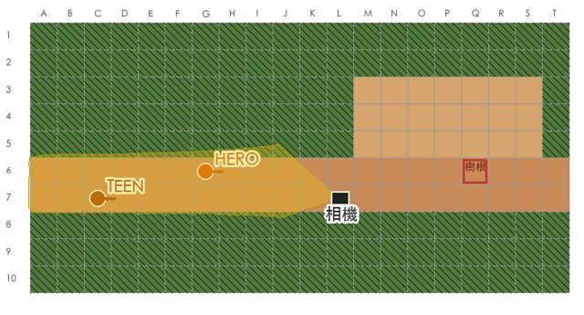
舊圖
EP1-01-02W 遠景 WS
你的意見 （HERO＋大恐龍同框，自動多一張遠一級）
你這輩子啊，從來沒跑得這麼快過。
新的中文 prompt
16:9，生成 1 張圖。完全依照所附角色設定表的風格：扁平 2D 卡通，粗黑輪廓線，平塗色塊。畫面中任何地方都不能有文字。畫面中只有 HERO 和 TEEN。HERO（完全照所附 HERO 角色設定表），沒戴帽子，身上沾滿泥巴，胸前斜背一台相機，背上背著背包，正拚了命地朝鏡頭方向奔跑，膝蓋高抬，身體前傾，雙臂擺動，臉上滿是使勁與恐懼。緊跟在他身後、位於他的右後方，TEEN 比 HERO 高大許多，頭往前伸、張大血盆大口追著他。Shot size：Wide Shot (WS)。HERO 的全身清楚可見，四周有大片環境。鏡頭方向：正面四分之三視角。鏡頭在 HERO 前方、偏向步道的一側，所以我們看得到他的臉和身體的一側。鏡頭角度：Eye-level：鏡頭在 HERO 的眼睛高度，平視前方。HERO 的臉和手是純紙白色。
背景（手寫）
鏡頭站在小路左邊、往後退得比較遠的路邊，斜斜地朝小路來的方向拍，往畫面右邊偏一點。泥巴小路從畫面下方往前延伸到遠處的森林裡；畫面左邊緣就是小路本身，看不到小路左邊的樹林。畫面右邊緊貼著路邊是一排又高又密的大樹，有蘇鐵、銀杏和針葉樹，一路往遠處延伸。黃昏的夕陽低低地在畫面正前方、小路盡頭的樹縫間，逆光照過來，整個畫面是橘色的，HERO 和 TEEN 的影子朝鏡頭拉過來。
參考圖：REF_HERO、PAIR2_TEEN、REF_TEEN、REF_PROPS
英文 prompt（實際貼進 Flow 的）
16:9, generate 1 image. Flat 2D cartoon in exactly the style of the attached character sheets: thick black outlines, flat colors. No text anywhere in the picture. In the picture there are only HERO and TEEN. HERO (exactly as in the attached HERO character sheet), no hat, his body smeared with mud, a camera slung across his chest and a backpack on his back, is running toward the camera as hard as he can, knees driving high, body leaning forward, arms pumping, his face straining with effort and terror. Close behind him, at his right-rear, TEEN, much taller and larger than HERO, chases him with its head stretched forward and jaws open wide. Shot size: Wide Shot (WS). HERO's whole body is clearly visible, with a lot of the surroundings around him. Camera direction: front three-quarter view. The camera is ahead of HERO and off to one side of the trail, so we see his face and one side of his body. Camera angle: Eye-level: the camera is at HERO's eye height, looking straight ahead. HERO's face and hands are pure paper white. Background: The camera stands at the left edge of the trail, pulled farther back, and films at an angle back the way the trail came, turned a little to the right. The muddy trail runs from the bottom of the picture away into the distant forest; the left edge of the picture is the trail itself, and none of the trees on the trail's left side are visible. On the right side of the picture, right against the trail, a row of tall, dense trees (cycads, ginkgos and conifers) runs on into the distance. The low sunset sun sits straight ahead of the camera, between the trees at the far end of the trail, backlighting everything in orange, and HERO's and TEEN's shadows stretch toward the camera.
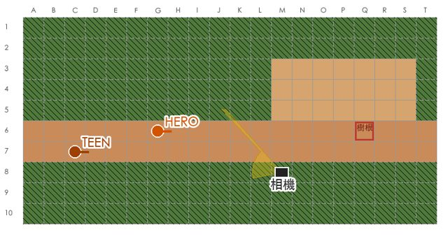
舊圖
EP1-01-05 全景 FS
你的意見 太陽應該在鏡頭正後方（因為前一格太陽在正前方）。
而且啊，牠越追越近了。
新的中文 prompt
16:9，生成 1 張圖。完全依照所附角色設定表的風格：扁平 2D 卡通，粗黑輪廓線，平塗色塊。畫面中任何地方都不能有文字。畫面中只有 HERO 和 TEEN。TEEN（完全照所附 TEEN 角色設定表），比 HERO 高大許多，正往前猛撲，頭伸得老遠、血盆大口張得老大，幾乎就要咬到 HERO 背上的背包。就在牠前方奔跑的是 HERO（完全照所附 HERO 角色設定表），沒戴帽子，全身都是泥巴，胸前斜背一台相機，背上背著背包，扭頭驚恐地回頭越過肩膀看。兩者都背對鏡頭奔跑。Shot size：Full Shot (FS)。TEEN 的全身，從頭到腳剛好塞進畫面。鏡頭方向：背面四分之三視角。鏡頭在 TEEN 後方、偏向步道的一側；TEEN 比較靠近鏡頭，HERO 跑在牠前面，兩者都從背後和一側看過去。鏡頭角度：Eye-level：鏡頭在 HERO 的眼睛高度，平視前方。HERO 的臉和手是純紙白色。
背景（手寫）
鏡頭站在小路右邊的樹叢旁，順著小路往前看，略偏向左邊。泥巴小路從畫面左下很近的地方往前延伸到遠處；前方小路上偏左的地方有一條突出地面的大樹根。小路左邊再過去，森林讓開，露出一片開闊的空地；小路右邊是又高又密的森林，有蘇鐵、銀杏和針葉樹。夕陽在鏡頭正後方，所以畫面裡看不到太陽，前方遠處的天空是比較暗的藍紫色、沒有亮光；HERO 和 TEEN 的背面被夕陽照成橘色，他們的影子往前倒，朝小路遠處拉長。
參考圖：REF_HERO、REF_TEEN、PAIR2_TEEN
英文 prompt（實際貼進 Flow 的）
16:9, generate 1 image. Flat 2D cartoon in exactly the style of the attached character sheets: thick black outlines, flat colors. No text anywhere in the picture. In the picture there are only HERO and TEEN. TEEN (exactly as in the attached TEEN character sheet), much taller and larger than HERO, is lunging forward with its head stretched way out and its jaws open wide, almost reaching the backpack on HERO's back. Just ahead of it runs HERO (exactly as in the attached HERO character sheet), no hat, mud all over his body, a camera slung across his chest and a backpack on his back, twisting to glance back over his shoulder in terror. Both are running away from the camera. Shot size: Full Shot (FS). TEEN's whole body, from head to feet, just fits in the picture. Camera direction: rear three-quarter view. The camera is behind TEEN and off to one side of the trail; TEEN is nearer the camera and HERO runs ahead of him, both seen from behind and one side. Camera angle: Eye-level: the camera is at HERO's eye height, looking straight ahead. HERO's face and hands are pure paper white. Background: The camera stands beside the bushes on the right side of the trail, looking down the trail ahead and turned slightly to the left. The muddy trail runs from very close at the lower left of the picture away into the distance; ahead on the trail, a little left of center, a big tree root sticks up out of the ground. Beyond the left side of the trail the forest opens into a wide clearing; on the right side of the trail is tall, dense forest of cycads, ginkgos and conifers. The setting sun is directly behind the camera, so no sun appears in the picture: the sky ahead in the distance is a darker blue-purple with no bright glow. The setting sun lights HERO's and TEEN's backs orange, and their shadows fall forward, stretching away from the camera down the trail.
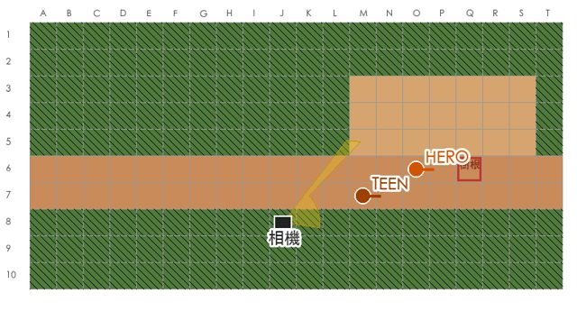
舊圖
EP1-01-05W 遠景 WS
你的意見 （跟 01-05 一起改：太陽在鏡頭正後方）
而且啊，牠越追越近了。
新的中文 prompt
16:9，生成 1 張圖。完全依照所附角色設定表的風格：扁平 2D 卡通，粗黑輪廓線，平塗色塊。畫面中任何地方都不能有文字。畫面中只有 HERO 和 TEEN。TEEN（完全照所附 TEEN 角色設定表），比 HERO 高大許多，正往前猛撲，頭伸得老遠、血盆大口張得老大，幾乎就要咬到 HERO 背上的背包。就在牠前方奔跑的是 HERO（完全照所附 HERO 角色設定表），沒戴帽子，全身都是泥巴，胸前斜背一台相機，背上背著背包，扭頭驚恐地回頭越過肩膀看。兩者都背對鏡頭奔跑。Shot size：Wide Shot (WS)。TEEN 的全身清楚可見，四周有大片環境。鏡頭方向：背面四分之三視角。鏡頭在 TEEN 後方、偏向步道的一側；TEEN 比較靠近鏡頭，HERO 跑在牠前面，兩者都從背後和一側看過去。鏡頭角度：Eye-level：鏡頭在 HERO 的眼睛高度，平視前方。HERO 的臉和手是純紙白色。
背景（手寫）
鏡頭站在小路右邊，幾乎順著小路往前看，略偏向左邊。泥巴小路從畫面左下很近的地方往畫面中間的遠處延伸；遠處小路上有一條突出地面的大樹根。小路左邊，先是一段森林，再過去森林讓開，露出一片開闊的空地，空地另一頭又是森林；小路右邊緊貼著又高又密的森林；樹有蘇鐵、銀杏和針葉樹。夕陽在鏡頭正後方，所以畫面裡看不到太陽，前方遠處的天空是比較暗的藍紫色、沒有亮光；HERO 和 TEEN 的背面和樹頂被夕陽照成橘色，影子往前倒，朝小路遠處拉長。
參考圖：REF_HERO、REF_TEEN、PAIR2_TEEN
英文 prompt（實際貼進 Flow 的）
16:9, generate 1 image. Flat 2D cartoon in exactly the style of the attached character sheets: thick black outlines, flat colors. No text anywhere in the picture. In the picture there are only HERO and TEEN. TEEN (exactly as in the attached TEEN character sheet), much taller and larger than HERO, is lunging forward with its head stretched way out and its jaws open wide, almost reaching the backpack on HERO's back. Just ahead of it runs HERO (exactly as in the attached HERO character sheet), no hat, mud all over his body, a camera slung across his chest and a backpack on his back, twisting to glance back over his shoulder in terror. Both are running away from the camera. Shot size: Wide Shot (WS). TEEN's whole body is clearly visible, with a lot of the surroundings around him. Camera direction: rear three-quarter view. The camera is behind TEEN and off to one side of the trail; TEEN is nearer the camera and HERO runs ahead of him, both seen from behind and one side. Camera angle: Eye-level: the camera is at HERO's eye height, looking straight ahead. HERO's face and hands are pure paper white. Background: The camera stands on the right side of the trail, looking almost straight down the trail ahead, turned slightly to the left. The muddy trail runs from very close at the lower left of the picture to the far distance in the middle; far along the trail a big tree root sticks up out of the ground. On the left side of the trail there is first a stretch of forest, then the forest opens into a wide clearing with forest again at its far side; on the right side of the trail, tall dense forest stands right against it; the trees are cycads, ginkgos and conifers. The setting sun is directly behind the camera, so no sun appears in the picture: the sky ahead in the distance is a darker blue-purple with no bright glow. The setting sun lights HERO's and TEEN's backs and the treetops orange, and their shadows fall forward, stretching away from the camera down the trail.
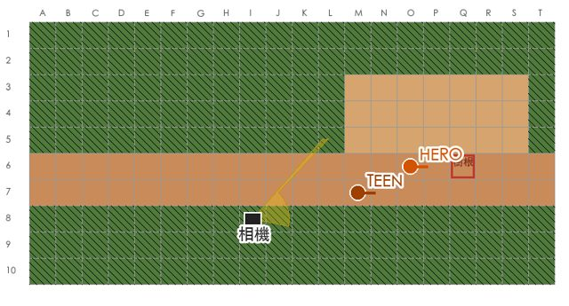
舊圖
EP1-02-01 遠景 WS
你的意見 加書桌設定（木頭桌、照 02-07 第 3 張的木紋）
話說，你的書桌上，擺著三樣東西。
新的中文 prompt
16:9，生成 1 張圖。完全依照所附角色設定表的風格：扁平 2D 卡通，粗黑輪廓線，平塗色塊。畫面中任何地方都不能有文字。唯一的角色是 HERO（完全照所附 HERO 角色設定表）。HERO 癱坐在一張木製書桌椅上，從背後拍攝、背對鏡頭，雙肩垂下、頭低低地盯著他面前的桌子。Shot size：Wide Shot (WS)。HERO 的全身清楚可見，四周有大片環境。鏡頭方向：背面視角。鏡頭在 HERO 後方，朝他面對的方向看；HERO 的背部比較靠近鏡頭。鏡頭角度：Eye-level：鏡頭在 HERO 的眼睛高度，平視前方。HERO 的臉和手是純紙白色。
背景（手寫）
鏡頭從房間後半往窗戶那面牆看。牆的正中間是一扇百葉窗，窗戶下面靠牆放著一張長書桌，桌上從左到右是檯燈、一疊帳單、學分不足通知、手機、電擊槍。書桌右邊的牆上有一個插座，插著手機的充電線。畫面左邊很近的地方露出那張沒整理的床的一角。房門在鏡頭後面，看不到。早上的陽光從百葉窗照進來。書桌是暖紅棕色的實木桌，桌面有一條條長長的彎曲木紋和幾個深色木節，前緣看得到木板的切面（照 EP1-02-07 第 3 張）。
參考圖：REF_HERO、ROOM_WINDOW_WALL、REF_PROPS
英文 prompt（實際貼進 Flow 的）
16:9, generate 1 image. Flat 2D cartoon in exactly the style of the attached character sheets: thick black outlines, flat colors. No text anywhere in the picture. The only character is HERO (exactly as in the attached HERO character sheet). HERO sits slumped on a wooden desk chair, seen from behind with his back toward the camera, shoulders drooping and head tilted down as he stares at the desk in front of him. Shot size: Wide Shot (WS). HERO's whole body is clearly visible, with a lot of the surroundings around him. Camera direction: back view. The camera is behind HERO, looking the way he faces; HERO's back is nearer the camera. Camera angle: Eye-level: the camera is at HERO's eye height, looking straight ahead. HERO's face and hands are pure paper white. Background: The camera looks from the back half of the room toward the window wall. In the middle of that wall is a window with half-closed blinds. Under the window a long wooden desk stands against the wall; on it, from left to right: a desk lamp, a stack of bills with red stamps, a notice with a red warning symbol, a phone on a charging cable, a stun gun. On the wall to the right of the desk is a single wall outlet with the phone's charging cable plugged in. Very close on the left side of the picture, a corner of the unmade bed shows. The room door is behind the camera and is not in the picture. Morning sunlight comes in through the blinds. The desk is made of warm reddish-brown solid wood; its top shows long, wavy wood-grain lines and a few dark knots, and the cut edge of the boards shows along the front.
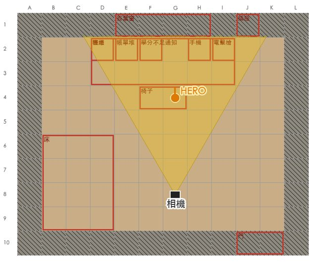
舊圖
EP1-02-02 特寫 CU
你的意見 加書桌設定（木頭桌、照 02-07 第 3 張的木紋）
第一樣，是帳單。
電費、房租、學貸，每一張都蓋著紅紅的逾期章。
新的中文 prompt
16:9，生成 1 張圖。完全依照所附角色設定表的風格：扁平 2D 卡通，粗黑輪廓線，平塗色塊。畫面中任何地方都不能有文字。畫面中只有桌上一疊厚厚的未付紙本帳單，每一張都蓋著鮮紅色的圓形逾期章；任何一張上都沒有可辨讀的文字。畫面中沒有角色。Shot size：Close-up (CU)。那疊帳單佔滿畫面大部分。鏡頭角度：High angle：鏡頭高高位於桌子上方，俯視那疊帳單。
背景（手寫）
從斜上方往下看書桌桌面。那疊帳單佔滿畫面中間，四周是木頭桌面；帳單左邊露出一點檯燈的底座，右邊露出學分不足通知的一角。畫面最上緣露出一點窗台，早上的陽光從百葉窗照在桌面上，留下一條條光紋。書桌是暖紅棕色的實木桌，桌面有一條條長長的彎曲木紋和幾個深色木節，前緣看得到木板的切面（照 EP1-02-07 第 3 張）。
參考圖：ROOM_WINDOW_WALL
英文 prompt（實際貼進 Flow 的）
16:9, generate 1 image. Flat 2D cartoon in exactly the style of the attached character sheets: thick black outlines, flat colors. No text anywhere in the picture. The picture shows only a thick stack of unpaid paper bills on a desk, each sheet stamped with bright red round overdue marks; there is no readable text on any sheet. There are no characters in the picture. Shot size: Close-up (CU). The stack of bills fills most of the picture. Camera angle: High angle: the camera is high above the desk, looking down at the stack of bills. Background: Looking down at the wooden desk top from above at an angle. The stack of bills fills the middle of the picture, with bare desk surface around it; the base of the desk lamp just shows to the left of the bills, and a corner of the notice sheet just shows to the right. Along the top edge of the picture a strip of the window sill shows, and morning sunlight through the blinds falls across the desk in stripes. The desk is made of warm reddish-brown solid wood; its top shows long, wavy wood-grain lines and a few dark knots, and the cut edge of the boards shows along the front.
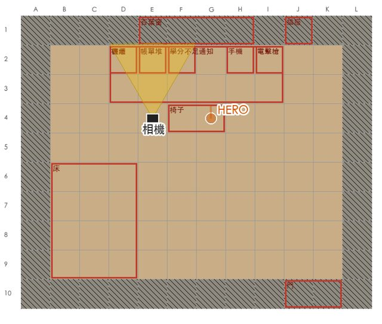
舊圖
EP1-02-03 特寫 CU
你的意見 加書桌設定（木頭桌、照 02-07 第 3 張的木紋）
第二樣，是畢業學分不足的通知。
沒錯，你已經延畢兩年了。
新的中文 prompt
16:9，生成 1 張圖。完全依照所附角色設定表的風格：扁平 2D 卡通，粗黑輪廓線，平塗色塊。畫面中任何地方都不能有文字。畫面中只有一張躺在桌上的通知單，上面印著一個大大的紅色警告符號，沒有可辨讀的文字。畫面中沒有角色。Shot size：Close-up (CU)。那張通知單佔滿畫面大部分。鏡頭角度：High angle：鏡頭高高位於桌子上方，俯視那張通知單。
背景（手寫）
從斜上方往下看書桌桌面。學分不足通知在畫面中間，四周是木頭桌面；通知單左邊露出那疊帳單的一角。畫面最上緣露出一點窗台，早上的陽光從百葉窗照在桌面上，留下一條條光紋。書桌是暖紅棕色的實木桌，桌面有一條條長長的彎曲木紋和幾個深色木節，前緣看得到木板的切面（照 EP1-02-07 第 3 張）。
參考圖：ROOM_WINDOW_WALL
英文 prompt（實際貼進 Flow 的）
16:9, generate 1 image. Flat 2D cartoon in exactly the style of the attached character sheets: thick black outlines, flat colors. No text anywhere in the picture. The picture shows only a single notice sheet lying on a desk, with one large red warning symbol printed on it and no readable text. There are no characters in the picture. Shot size: Close-up (CU). The notice sheet fills most of the picture. Camera angle: High angle: the camera is high above the desk, looking down at the notice sheet. Background: Looking down at the wooden desk top from above at an angle. The notice sheet is in the middle of the picture, with bare desk surface around it; a corner of the stack of bills just shows to the left of it. Along the top edge of the picture a strip of the window sill shows, and morning sunlight through the blinds falls across the desk in stripes. The desk is made of warm reddish-brown solid wood; its top shows long, wavy wood-grain lines and a few dark knots, and the cut edge of the boards shows along the front.
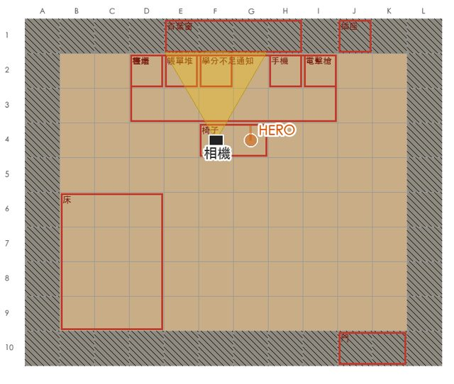
舊圖
EP1-02-04 中近景 MCU
你的意見 加書桌設定（木頭桌、照 02-07 第 3 張的木紋）
（停）
現在最關心你的人，是系辦的助理。
新的中文 prompt
16:9，生成 1 張圖。完全依照所附角色設定表的風格：扁平 2D 卡通，粗黑輪廓線，平塗色塊。畫面中任何地方都不能有文字。唯一的角色是 HERO（完全照所附 HERO 角色設定表）。HERO 坐在他的書桌前，癱軟疲憊，嘴角下垂露出疲倦認命的表情，雙眼往下看。Shot size：Medium Close-up (MCU)。HERO 取景到胸部以上；畫面底邊在他的胸口。鏡頭方向：正面視角。鏡頭在 HERO 前方，面對他。鏡頭角度：Eye-level：鏡頭在 HERO 的眼睛高度，平視前方。HERO 的臉和手是純紙白色。
背景（手寫）
鏡頭在書桌這邊，對著坐在椅子上的 HERO，所以 HERO 背後是房間的另一頭，那面有房門的牆。HERO 頭的後面是一面米白色的空牆；畫面左邊遠處露出房門的一角，畫面右邊露出床尾和皺成一團的被子。畫面下緣露出一點書桌的邊。窗戶在鏡頭後面，看不到；早上的陽光從鏡頭後面照在 HERO 臉上。書桌是暖紅棕色的實木桌，桌面有一條條長長的彎曲木紋和幾個深色木節，前緣看得到木板的切面（照 EP1-02-07 第 3 張）。
參考圖：REF_HERO、ROOM_DOOR_WALL
英文 prompt（實際貼進 Flow 的）
16:9, generate 1 image. Flat 2D cartoon in exactly the style of the attached character sheets: thick black outlines, flat colors. No text anywhere in the picture. The only character is HERO (exactly as in the attached HERO character sheet). HERO sits at his desk, slumped and weary, mouth turned down in a tired resigned expression, eyes looking downward. Shot size: Medium Close-up (MCU). HERO is framed from the chest up; the bottom edge of the picture is at his chest. Camera direction: front view. The camera is in front of HERO, facing him. Camera angle: Eye-level: the camera is at HERO's eye height, looking straight ahead. HERO's face and hands are pure paper white. Background: The camera is on the desk side, facing HERO in his chair, so behind HERO is the other end of the room, the wall with the door. Right behind HERO's head is a plain off-white wall; far back on the left side of the picture a corner of the room door shows, and on the right side the foot of the bed with a crumpled blanket shows. Along the bottom edge of the picture a little of the desk edge shows. The window is behind the camera and is not in the picture; morning sunlight comes from behind the camera onto HERO's face. The desk is made of warm reddish-brown solid wood; its top shows long, wavy wood-grain lines and a few dark knots, and the cut edge of the boards shows along the front.
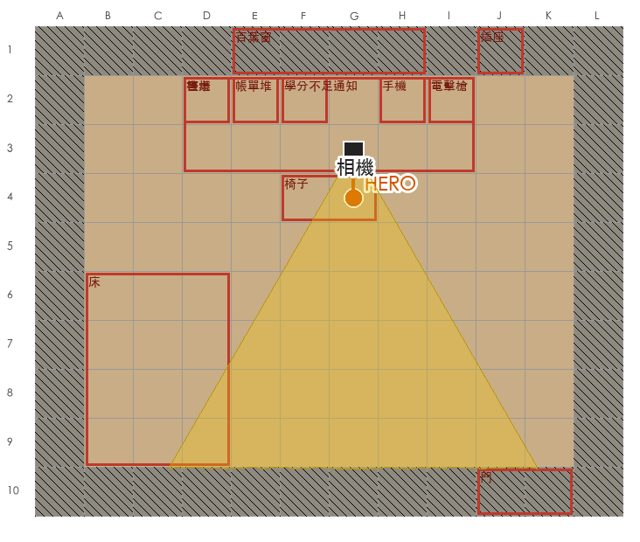
舊圖
EP1-02-05 中近景 MCU
你的意見 加書桌設定（木頭桌、照 02-07 第 3 張的木紋）
第三樣呢，是一支手機，跟一把電擊槍。
那把電擊槍，是上次打工的時候，博士給你的。
新的中文 prompt
16:9，生成 1 張圖。完全依照所附角色設定表的風格：扁平 2D 卡通，粗黑輪廓線，平塗色塊。畫面中任何地方都不能有文字。畫面中只有兩樣並排躺在桌上的物品：HERO 的智慧型手機，插著一條充電線，旁邊放著一把沒插電的電擊槍。畫面中沒有角色。Shot size：Medium Close-up (MCU)。手機和電擊槍佔滿畫面下半部大部分。鏡頭角度：High angle：鏡頭高高位於桌子上方，俯視手機和電擊槍。
背景（手寫）
從斜上方看書桌的右半邊。手機在左、電擊槍在右，並排放在桌上；手機的充電線往右拉到牆上的插座，插座在畫面右上方。桌子後面是米白色的牆，畫面左上方露出百葉窗的右下角。陽光從左上方的窗戶照在桌面上。書桌是暖紅棕色的實木桌，桌面有一條條長長的彎曲木紋和幾個深色木節，前緣看得到木板的切面（照 EP1-02-07 第 3 張）。
參考圖：ROOM_WINDOW_WALL、REF_PROPS
英文 prompt（實際貼進 Flow 的）
16:9, generate 1 image. Flat 2D cartoon in exactly the style of the attached character sheets: thick black outlines, flat colors. No text anywhere in the picture. The picture shows only two objects lying side by side on a desk: HERO's smartphone with a charging cable plugged into it, and an unplugged stun gun next to it. There are no characters in the picture. Shot size: Medium Close-up (MCU). The phone and the stun gun fill most of the lower part of the picture. Camera angle: High angle: the camera is high above the desk, looking down at the phone and the stun gun. Background: Looking down at an angle at the right half of the desk. The phone is on the left and the stun gun on the right, side by side on the desk; the phone's charging cable runs to the right, up to the wall outlet in the upper right of the picture. Behind the desk is the plain off-white wall; in the upper left of the picture the lower right corner of the window blinds shows. Sunlight from the window at the upper left falls on the desk. The desk is made of warm reddish-brown solid wood; its top shows long, wavy wood-grain lines and a few dark knots, and the cut edge of the boards shows along the front.
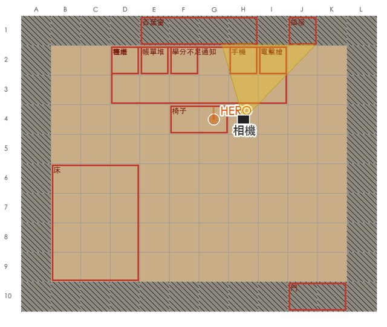
舊圖
EP1-02-06 中景 MS
你的意見 加書桌設定（木頭桌、照 02-07 第 3 張的木紋）
偏偏房間裡，只有一個插座。
（停）
你當然是拿來充手機啦。
新的中文 prompt
16:9，生成 1 張圖。完全依照所附角色設定表的風格：扁平 2D 卡通，粗黑輪廓線，平塗色塊。畫面中任何地方都不能有文字。畫面中只有一個牆上插座，插著一條充電線；那條線延伸過去接到附近放在桌上的 HERO 的智慧型手機。畫面中沒有角色。Shot size：Medium Shot (MS)。插座、充電線和手機都看得見，佔滿畫面大部分。鏡頭角度：Eye-level：鏡頭在插座的高度，平視插座。
背景（手寫）
鏡頭平平地對著書桌右端後面的牆。畫面右邊是牆上唯一的插座，插著一條充電線；充電線沿著桌面往左，接到畫面左邊桌上的手機。手機和插座之間的桌面上，躺著那把沒插電的電擊槍。畫面最右邊是房間的轉角，轉過去是一面空牆。其他地方是米白色的牆。陽光從畫面左邊的窗戶照過來。書桌是暖紅棕色的實木桌，桌面有一條條長長的彎曲木紋和幾個深色木節，前緣看得到木板的切面（照 EP1-02-07 第 3 張）。
參考圖：ROOM_WINDOW_WALL、ROOM_BARE_WALL、REF_PROPS
英文 prompt（實際貼進 Flow 的）
16:9, generate 1 image. Flat 2D cartoon in exactly the style of the attached character sheets: thick black outlines, flat colors. No text anywhere in the picture. The picture shows only a single wall outlet with a charging cable plugged into it; the cable runs across to HERO's smartphone resting nearby on a desk. There are no characters in the picture. Shot size: Medium Shot (MS). The outlet, the cable and the phone are all visible and fill much of the picture. Camera angle: Eye-level: the camera is at the outlet's height, looking straight at the outlet. Background: The camera looks straight at the wall behind the right end of the desk. On the right side of the picture is the only wall outlet in the room, with one charging cable plugged in; the cable runs left along the desk to the phone on the left side of the picture. On the desk between the phone and the outlet lies the unplugged stun gun. At the far right edge is the corner of the room, turning onto a bare wall. Everything else is plain off-white wall. Sunlight comes from the window to the left of the picture. The desk is made of warm reddish-brown solid wood; its top shows long, wavy wood-grain lines and a few dark knots, and the cut edge of the boards shows along the front.
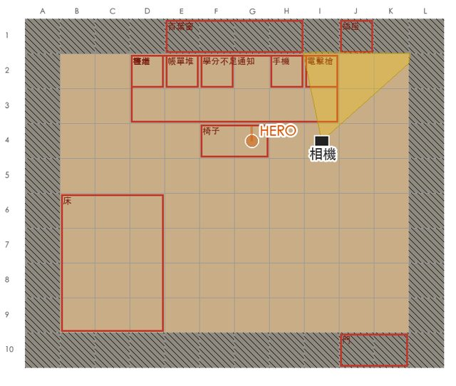
舊圖
EP1-02-07 特寫 CU
你的意見 加書桌設定（木頭桌、照 02-07 第 3 張的木紋）
這時候，手機亮了。
是博士傳來的訊息：
又有工作囉，時薪很不錯，記得帶電擊槍。
新的中文 prompt
16:9，生成 1 張圖。完全依照所附角色設定表的風格：扁平 2D 卡通，粗黑輪廓線，平塗色塊。畫面中任何地方都不能有文字。畫面中只有 HERO 的智慧型手機躺在桌上、插著充電線；螢幕亮得發光，彷彿剛收到一則新訊息，顯示一個簡單的空白訊息氣泡圖示，沒有可辨讀的文字。畫面中沒有角色。Shot size：Close-up (CU)。發光的手機佔滿畫面大部分。鏡頭角度：High angle：鏡頭高高位於桌子上方，俯視手機。
背景（手寫）
從斜上方往下看，發亮的手機佔滿畫面中間，四周是木頭桌面；充電線從手機底部往右拉出畫面，畫面右邊露出電擊槍的一角。書桌是暖紅棕色的實木桌，桌面有一條條長長的彎曲木紋和幾個深色木節，前緣看得到木板的切面（照 EP1-02-07 第 3 張）。
參考圖：REF_PROPS
英文 prompt（實際貼進 Flow 的）
16:9, generate 1 image. Flat 2D cartoon in exactly the style of the attached character sheets: thick black outlines, flat colors. No text anywhere in the picture. The picture shows only HERO's smartphone lying on a desk with a charging cable plugged in; its screen is glowing brightly as if a new message just arrived, showing a simple blank message-bubble icon and no readable text. There are no characters in the picture. Shot size: Close-up (CU). The glowing phone fills most of the picture. Camera angle: High angle: the camera is high above the desk, looking down at the phone. Background: Looking down from above at an angle. The glowing phone fills the middle of the picture, with wooden desk top around it; the charging cable runs from the bottom of the phone out of the picture to the right, and a corner of the stun gun just shows on the right side. The desk is made of warm reddish-brown solid wood; its top shows long, wavy wood-grain lines and a few dark knots, and the cut edge of the boards shows along the front.
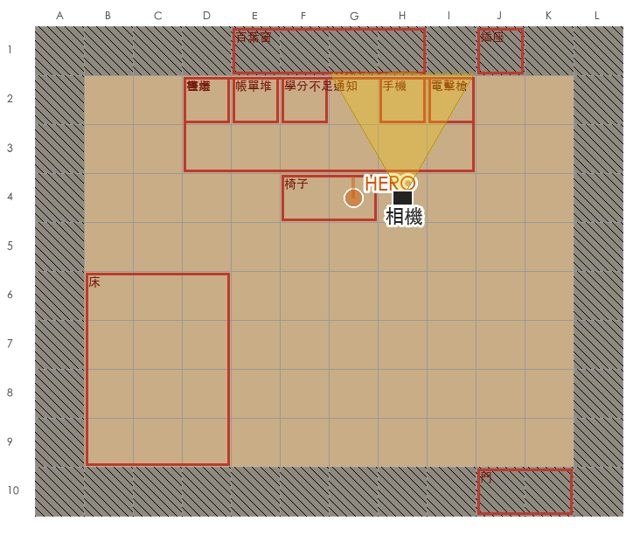
舊圖
EP1-02-08 中近景 MCU
你的意見 加書桌設定（木頭桌、照 02-07 第 3 張的木紋）
其實啊，這已經不是你第一次幫博士打工了。
上一次，他也說會付錢。
（停）
新的中文 prompt
16:9，生成 1 張圖。完全依照所附角色設定表的風格：扁平 2D 卡通，粗黑輪廓線，平塗色塊。畫面中任何地方都不能有文字。唯一的角色是 HERO（完全照所附 HERO 角色設定表）。HERO 坐在書桌前，一手舉起他的智慧型手機，瞇著眼看它，露出懷疑、不以為然的表情，一邊眉毛挑起。Shot size：Medium Close-up (MCU)。HERO 取景到胸部以上；畫面底邊在他的胸口。鏡頭方向：正面四分之三視角。鏡頭在 HERO 前方、偏向一側，所以我們看得到他的臉和身體的一側。鏡頭角度：Eye-level：鏡頭在 HERO 的眼睛高度，平視前方。HERO 的臉和手是純紙白色。
背景（手寫）
鏡頭在書桌邊，斜斜地對著坐在椅子上的 HERO，HERO 背後是房間另一頭的角落。HERO 背後偏右露出那扇關著的房門，門旁邊是米白色的空牆；畫面左邊是另一面空牆。畫面下緣露出一點書桌的邊。窗戶在鏡頭後面，看不到；早上的陽光從鏡頭後面照在 HERO 身上。書桌是暖紅棕色的實木桌，桌面有一條條長長的彎曲木紋和幾個深色木節，前緣看得到木板的切面（照 EP1-02-07 第 3 張）。
參考圖：REF_HERO、REF_PROPS、ROOM_BARE_WALL、ROOM_DOOR_WALL
英文 prompt（實際貼進 Flow 的）
16:9, generate 1 image. Flat 2D cartoon in exactly the style of the attached character sheets: thick black outlines, flat colors. No text anywhere in the picture. The only character is HERO (exactly as in the attached HERO character sheet). HERO sits at his desk holding his smartphone up in one hand, squinting at it with a skeptical, unimpressed look and one eyebrow raised. Shot size: Medium Close-up (MCU). HERO is framed from the chest up; the bottom edge of the picture is at his chest. Camera direction: front three-quarter view. The camera is ahead of HERO and off to one side, so we see his face and one side of his body. Camera angle: Eye-level: the camera is at HERO's eye height, looking straight ahead. HERO's face and hands are pure paper white. Background: The camera is at the edge of the desk, looking at HERO in his chair at an angle, so behind HERO is the far corner of the room. Behind HERO, a little to the right, the closed room door shows, with plain off-white wall beside it; on the left side of the picture is another bare wall. Along the bottom edge a little of the desk edge shows. The window is behind the camera and is not in the picture; morning sunlight comes from behind the camera onto HERO. The desk is made of warm reddish-brown solid wood; its top shows long, wavy wood-grain lines and a few dark knots, and the cut edge of the boards shows along the front.
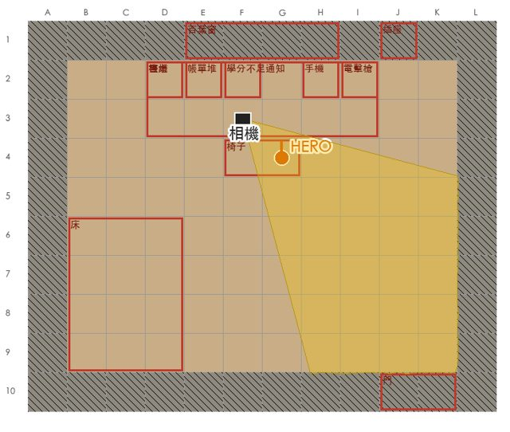
舊圖
EP1-02-09 中景 MS
你的意見 加書桌設定（木頭桌、照 02-07 第 3 張的木紋）
你看看桌上那一疊帳單。
新的中文 prompt
16:9，生成 1 張圖。完全依照所附角色設定表的風格：扁平 2D 卡通，粗黑輪廓線，平塗色塊。畫面中任何地方都不能有文字。唯一的角色是 HERO（完全照所附 HERO 角色設定表）。他坐在書桌前，從背後越過肩膀拍攝，頭往下轉向桌上面前那疊蓋著紅章的未付帳單，雙肩下垂。Shot size：Medium Shot (MS)。HERO 取景到腰部以上；畫面底邊在他的腰部。鏡頭方向：背面四分之三視角。鏡頭在 HERO 後方、偏向一側，所以我們看得到他的背部，以及他身後桌上那疊帳單。鏡頭角度：High angle：鏡頭高高位於 HERO 上方，俯視他。HERO 的臉和手是純紙白色。
背景（手寫）
鏡頭在 HERO 右後方的高處，往書桌斜斜看下去。HERO 前面是那張長書桌，那疊帳單在畫面左邊的桌上，旁邊是學分不足通知；書桌後面是窗戶那面牆，百葉窗在畫面中間偏右。早上的陽光從百葉窗照進來，照在桌面和 HERO 的背上。書桌是暖紅棕色的實木桌，桌面有一條條長長的彎曲木紋和幾個深色木節，前緣看得到木板的切面（照 EP1-02-07 第 3 張）。
參考圖：REF_HERO、ROOM_WINDOW_WALL
英文 prompt（實際貼進 Flow 的）
16:9, generate 1 image. Flat 2D cartoon in exactly the style of the attached character sheets: thick black outlines, flat colors. No text anywhere in the picture. The only character is HERO (exactly as in the attached HERO character sheet). He sits at his desk seen from behind over his shoulder, his head turned down toward a thick stack of red-stamped unpaid bills on the desk in front of him, shoulders sagging. Shot size: Medium Shot (MS). HERO is framed from the waist up; the bottom edge of the picture is at his waist. Camera direction: rear three-quarter view. The camera is behind HERO and off to one side, so we see his back and the stack of bills on the desk beyond him. Camera angle: High angle: the camera is high above HERO, looking down at him. HERO's face and hands are pure paper white. Background: The camera is high up behind HERO's right shoulder, looking down at an angle toward the desk. In front of HERO is the long desk; the stack of bills lies on the left side of the picture, with the notice sheet beside it. Behind the desk is the window wall, with the blinds a little right of the middle of the picture. Morning sunlight comes in through the blinds onto the desk and HERO's back. The desk is made of warm reddish-brown solid wood; its top shows long, wavy wood-grain lines and a few dark knots, and the cut edge of the boards shows along the front.
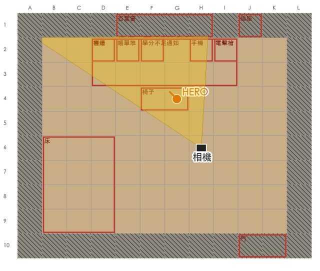
舊圖
EP1-02-10 全景 FS
你的意見 加書桌設定（木頭桌、照 02-07 第 3 張的木紋）
唉，還是去吧。
新的中文 prompt
16:9，生成 1 張圖。完全依照所附角色設定表的風格：扁平 2D 卡通，粗黑輪廓線，平塗色塊。畫面中任何地方都不能有文字。唯一的角色是 HERO（完全照所附 HERO 角色設定表）。HERO 已經站起身，正大步走向門口，從背後拍攝，一手把電擊槍垂在身側拿著，頭低著，但步伐堅定。Shot size：Full Shot (FS)。HERO 的全身，從頭到腳剛好塞進畫面。鏡頭方向：背面四分之三視角。鏡頭在 HERO 後方、偏向一側，所以我們看得到他走開時的背影。鏡頭角度：Eye-level：鏡頭在 HERO 的眼睛高度，平視前方。HERO 的臉和手是純紙白色。
背景（手寫）
鏡頭在書桌左端，往房門那個角落看。畫面中間偏右的遠處是房間的轉角：轉角左邊是一面米白色的空牆，轉角右邊緊貼著那扇關著的木門。HERO 和門之間是空蕩蕩的木頭地板，地上有幾件衣服和紙。窗戶和書桌在鏡頭後面，看不到；早上的陽光從鏡頭後面照進來。書桌是暖紅棕色的實木桌，桌面有一條條長長的彎曲木紋和幾個深色木節，前緣看得到木板的切面（照 EP1-02-07 第 3 張）。
參考圖：REF_HERO、REF_PROPS、ROOM_BARE_WALL、ROOM_DOOR_WALL
英文 prompt（實際貼進 Flow 的）
16:9, generate 1 image. Flat 2D cartoon in exactly the style of the attached character sheets: thick black outlines, flat colors. No text anywhere in the picture. The only character is HERO (exactly as in the attached HERO character sheet). HERO has stood up and is striding toward the door, seen from behind, holding the stun gun down at his side in one hand, his head lowered but his steps decided. Shot size: Full Shot (FS). HERO's whole body, from head to feet, just fits in the picture. Camera direction: rear three-quarter view. The camera is behind HERO and off to one side, so we see his back as he walks away. Camera angle: Eye-level: the camera is at HERO's eye height, looking straight ahead. HERO's face and hands are pure paper white. Background: The camera is at the left end of the desk, looking toward the corner with the door. Far away, a little right of the middle of the picture, is the corner of the room: to the left of the corner is a plain off-white bare wall, and right next to the corner on the right is the closed wooden door. Between HERO and the door is empty wooden floor with a few clothes and papers on it. The window and the desk are behind the camera and are not in the picture; morning sunlight comes from behind the camera. The desk is made of warm reddish-brown solid wood; its top shows long, wavy wood-grain lines and a few dark knots, and the cut edge of the boards shows along the front.
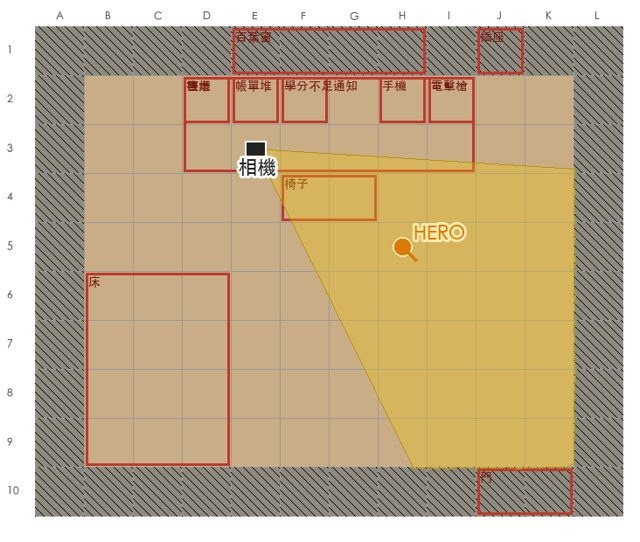
舊圖
EP1-03-02 遠景 WS
你的意見 小屋的正面要照 EP1-03-01 第 3 張圖的樣子正確描述，現在長得根本不一樣。（圖：/Volumes/Fish/personal/stickman_pipeline/scripts/flowbot/shots/scene/EP1-03_v7bg_claude/EP1-03-01/3.png，請用 Read 打開看）
校務大樓旁邊，一間老舊的木頭小屋。
新的中文 prompt
16:9，生成 1 張圖。完全依照所附角色設定表的風格：扁平 2D 卡通，粗黑輪廓線，平塗色塊。畫面中任何地方都不能有文字。畫面中唯一的角色是 HERO（完全照所附 HERO 角色設定表），從背後拍攝。他以穩定的步伐往前走，背對鏡頭，遠離觀者，朝一棟老舊的兩層木造小屋（完全照所附小屋設計表）走去。Shot size：Wide Shot (WS)。HERO 的全身清楚可見，四周有大片環境。鏡頭方向：背面視角。鏡頭在 HERO 身後的走道上，朝他走的方向看；HERO 的背部朝向鏡頭。鏡頭角度：Eye-level：鏡頭在 HERO 的眼睛高度，平視前方。HERO 的臉和手是純紙白色。
背景（手寫）
鏡頭站在草地上，正對著老舊木造小屋的正面。畫面下方是草地，草地過去，一條校園步道從畫面左邊橫到右邊。小屋在畫面正中間，外型完全照參考圖 REF_HUT 的正面：兩層樓、山牆朝前、一樓整排門廊，大門上貼滿警告貼紙。一條短短的土路從步道通到門廊。小屋左右兩邊和後面都被茂密的樹叢圍住。畫面左邊緣，樹叢後面露出白色石造校務大樓的一角。早上的陽光從畫面右邊照過來。
參考圖：REF_HERO、REF_HUT
英文 prompt（實際貼進 Flow 的）
16:9, generate 1 image. Flat 2D cartoon in exactly the style of the attached character sheets: thick black outlines, flat colors. No text anywhere in the picture. The only character in the picture is HERO (exactly as in the attached HERO character sheet), seen from behind. He is walking forward at a steady pace, his back to the camera, moving away from the viewer toward an old two-story wooden hut (exactly as in the attached hut design sheet). Shot size: Wide Shot (WS). HERO's whole body is clearly visible, with a lot of the surroundings around him. Camera direction: back view. The camera is on the walkway behind HERO, looking the way he walks; HERO's back is toward the camera. Camera angle: Eye-level: the camera is at HERO's eye height, looking straight ahead. HERO's face and hands are pure paper white. Background: The camera stands on the grass, facing the front of the old wooden hut. At the bottom of the picture is grass; beyond it a campus walkway runs across the picture from left to right. The hut stands in the middle of the picture and looks exactly like the front view on the attached REF_HUT design sheet: two stories, gable end facing front, a covered porch across the whole ground floor, and the front door plastered with warning stickers. A short dirt path runs from the walkway to the porch. Dense trees and bushes surround the hut on the left, the right and behind. At the left edge of the picture, a corner of the white stone administration building shows behind the trees. Morning sunlight comes from the right side of the picture.
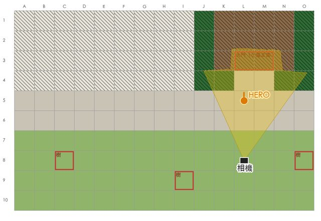
舊圖
EP1-03-03 全景 FS
你的意見 大門要照 EP1-03-02 第 3 張圖的樣子，現在長得根本不一樣。（圖：/Volumes/Fish/personal/stickman_pipeline/scripts/flowbot/shots/scene/EP1-03_v7bg_claude/EP1-03-02/3.png，請用 Read 打開看）
門上那些警告標誌啊，你一個都不想知道是什麼意思。
新的中文 prompt
16:9，生成 1 張圖。完全依照所附角色設定表的風格：扁平 2D 卡通，粗黑輪廓線，平塗色塊。畫面中任何地方都不能有文字。畫面中唯一的角色是 HERO（完全照所附 HERO 角色設定表），從背後拍攝。他靜靜站著，背對鏡頭，頭往後仰得老遠、脖子往上伸，一手半舉、猶豫不決，抬頭望著正前方一扇高大的木門，門嵌在小屋正面牆壁的正中央（門完全照所附小屋設計表）。Shot size：Full Shot (FS)。HERO 的全身，從頭到腳剛好塞進畫面。鏡頭方向：背面視角。鏡頭在 HERO 身後的走道上，朝他面對的方向看；HERO 的背部朝向鏡頭。極低角度鏡頭，鏡頭位於地面高度，仰視 HERO 的全身。HERO 的臉和手是純紙白色。
背景（手寫）
鏡頭貼在地上，從門廊前往上仰看小屋正面。小屋的門廊和大門完全照參考圖 REF_HUT 右邊那張大門近景：門廊的木地板、木柱和斜斜的門廊屋簷，大門是棕色木門、貼滿各種顏色的警告貼紙，門把旁有一個小小的密碼鎖，大門兩邊各一扇窗。門廊上方是暖棕色的橫向木板外牆，往上延伸超出畫面頂端。小屋左右兩邊是茂密的樹叢，樹梢往上伸。早上的陽光從畫面右邊照過來，照亮木板牆和門上的貼紙。
參考圖：REF_HERO、REF_HUT
英文 prompt（實際貼進 Flow 的）
16:9, generate 1 image. Flat 2D cartoon in exactly the style of the attached character sheets: thick black outlines, flat colors. No text anywhere in the picture. The only character in the picture is HERO (exactly as in the attached HERO character sheet), seen from behind. He stands still, his back to the camera, head tilted far back and craning upward, one hand half-raised and hesitant, looking up at a tall wooden door right in front of him, set in the center of the hut's front wall (the door exactly as in the attached hut design sheet). Shot size: Full Shot (FS). HERO's whole body, from head to feet, just fits in the picture. Camera direction: back view. The camera is on the walkway behind HERO, looking the way he faces; HERO's back is toward the camera. Extreme low-angle shot, ground-level camera perspective, looking up at HERO's full body. HERO's face and hands are pure paper white. Background: The camera sits right on the ground in front of the porch, looking up at the front of the hut. The porch and front door look exactly like the door close-up on the right of the attached REF_HUT design sheet: wooden porch floor, wooden posts and the sloping porch roof; the front door is a brown wooden door plastered with warning stickers of many colors, with a small keypad lock beside the handle, and a window on each side of the door. Above the porch roof the warm brown horizontal plank walls rise past the top of the picture. Dense trees stand on both sides of the hut, their tops reaching upward. Morning sunlight comes from the right side of the picture and lights up the plank walls and the stickers on the door.
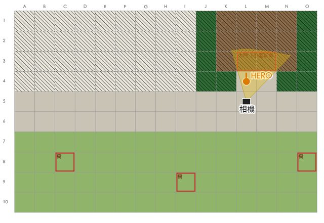
舊圖
EP1-04-01 遠景 WS
你的意見 實驗室比較大，不應該同時看到左右兩邊的牆壁（如果 prompt 可以調整就調整）。海報上要清楚寫著英文片名「JURASSIC PARK」（使用者 2026-11-14：EP1 所有海報都改成侏羅紀公園、要有字）；除了海報上的片名，畫面其他地方仍然不能有字。
博士說，這一次，要去白堊紀。
六千六百五十萬年前的北美洲喔。
他講得超級興奮。
新的中文 prompt
16:9，生成 1 張圖。完全依照所附角色設定表的風格：扁平 2D 卡通，粗黑輪廓線，平塗色塊。畫面中唯一的文字是牆上一張卡通恐龍電影海報上以粗大粗體大寫字母印著的片名 'JURASSIC PARK'；畫面中其他任何地方都絕對不能有別的文字、字母、數字或書寫。畫面中只有兩個角色：PROF 和 HERO。左邊，PROF（完全照所附 PROF 角色設定表）雙臂張得大大的站著，一邊說話一邊興奮得眉開眼笑。右邊、稍微靠近鏡頭一點，HERO（完全照所附 HERO 角色設定表）彎腰駝背、雙手捧著一支手機、低著頭，完全沒有反應。Shot size：Wide Shot (WS)。PROF 和 HERO 的全身清楚可見，四周有大片環境。鏡頭方向：正面四分之三視角。鏡頭在 PROF 前方、偏向地板的一側，所以我們看得到他的臉和身體的一側。鏡頭角度：Eye-level：鏡頭在角色們的眼睛高度，平視前方。HERO 的臉和手是純紙白色。
背景（手寫）
鏡頭在實驗室靠大門、偏右的這一頭，斜斜地往黑板那面牆和時光機那面牆的轉角看，轉角在畫面右邊大約三分之二的地方。轉角左邊是黑板那面牆，佔了畫面左邊大半：大綠黑板在博士和 HERO 身後，黑板右邊靠轉角是恐龍電影海報，海報上用大大的英文字寫著 JURASSIC PARK。轉角右邊是時光機那面牆靠轉角的一段：一張小桌上放著自製的咖啡機，桌子上方的牆掛滿大大小小、時間都不一樣的時鐘；時光機圓環在畫面右邊外面，看不到。博士和 HERO 前面是一大片空著的木地板，實驗室很寬敞：畫面裡只看得到這兩面牆，時光機那面牆往右延伸出畫面，看不到右邊另一面側牆。紅色拉桿、控制台、工作桌和行軍床都在畫面外面；大門在鏡頭後面。早上的陽光從鏡頭後面的窗戶照進來，加上木樑上吊燈泡的暖光。
參考圖：REF_PROF、REF_HERO、REF_PROPS、LAB_CHALKBOARD_WALL、LAB_MACHINE_WALL
英文 prompt（實際貼進 Flow 的）
16:9, generate 1 image. Flat 2D cartoon in exactly the style of the attached character sheets: thick black outlines, flat colors. The only text anywhere in the picture is the title 'JURASSIC PARK' in big bold capital letters printed on a cartoon dinosaur-movie poster on the wall; there is absolutely no other text, letters, numbers or writing anywhere else in the picture. Only two characters in the picture: PROF and HERO. On the left, PROF (exactly as in the attached PROF character sheet) stands with his arms thrown wide, beaming with excitement as he talks. On the right and a little nearer the camera, HERO (exactly as in the attached HERO character sheet), stands hunched over a phone held in both hands, head down, not reacting at all. Shot size: Wide Shot (WS). PROF's and HERO's whole bodies are clearly visible, with a lot of the surroundings around them. Camera direction: front three-quarter view. The camera is ahead of PROF and off to one side of the floor, so we see his face and one side of his body. Camera angle: Eye-level: the camera is at the characters' eye height, looking straight ahead. HERO's face and hands are pure paper white. Background: The camera is at the door end of the lab, toward the right, looking at an angle into the corner where the chalkboard wall meets the time-machine wall; the corner is about two-thirds of the way across the picture from the left. Left of the corner, the chalkboard wall fills most of the left part of the picture: the big green chalkboard is behind PROF and HERO, and to its right, next to the corner, hangs a dinosaur movie poster with the title JURASSIC PARK in big bold capital letters. Right of the corner is the end of the time-machine wall nearest the corner: a small table holding a home-made coffee machine, and above it the wall is covered with clocks of all sizes, each showing a different time; the time-machine ring is off the right side of the picture and not visible. In front of PROF and HERO is a wide stretch of empty wooden floor; the lab is roomy: only these two walls are in the picture; the time-machine wall runs on off the right edge, and the side wall on the right is not visible. The red lever, the control console, the workbench and the camp bed are all out of the picture; the front door is behind the camera. Morning sunlight comes through the windows behind the camera, together with the warm light of bulbs hanging from the wooden beams.
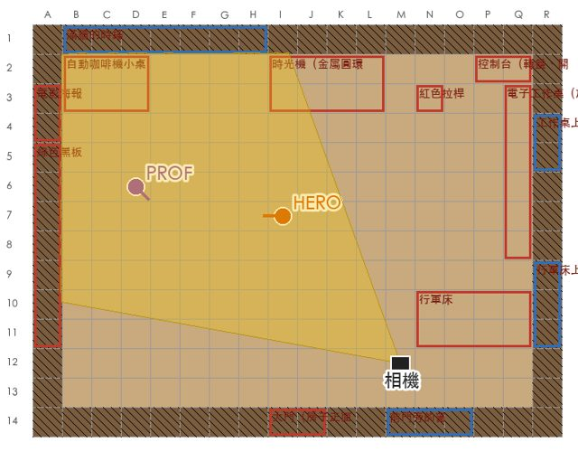
舊圖
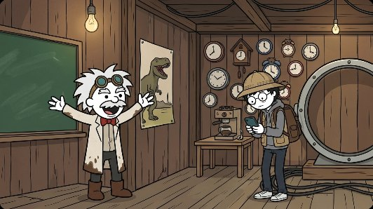
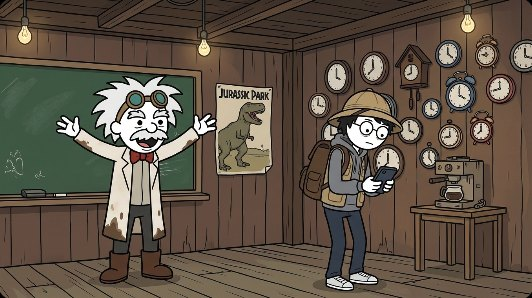
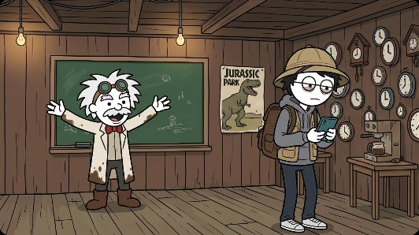
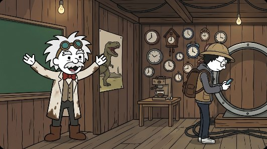
EP1-04-04 中景 MS
你的意見 海報上要清楚寫著英文片名「JURASSIC PARK」（使用者 2026-11-14：EP1 所有海報都改成侏羅紀公園、要有字）；除了海報上的片名，畫面其他地方仍然不能有字。
這下博士可不高興了。
他說：侏羅紀根本就沒有暴龍啦。
你最喜歡的那部恐龍電影，光是片名就在騙你。
新的中文 prompt
16:9，生成 1 張圖。完全依照所附角色設定表的風格：扁平 2D 卡通，粗黑輪廓線，平塗色塊。畫面中唯一的文字是牆上一張卡通恐龍電影海報上以粗大粗體大寫字母印著的片名 'JURASSIC PARK'；畫面中其他任何地方都絕對不能有別的文字、字母、數字或書寫。畫面中只有 PROF。PROF（完全照所附 PROF 角色設定表）皺著眉站著，顯然很惱火，一根食指舉起像在糾正什麼，嘴巴張著說到一半。Shot size：Medium Shot (MS)。PROF 取景到腰部以上；畫面底邊在他的腰部。鏡頭方向：正面四分之三視角。鏡頭在 PROF 前方、偏向地板的一側，所以我們看得到他的臉和身體的一側。鏡頭角度：Eye-level：鏡頭在 PROF 的眼睛高度，平視前方。
背景（手寫）
鏡頭斜斜地對著黑板那面牆。博士身後偏左是大綠黑板，上面有一點粉筆塗鴉；黑板右邊是恐龍電影海報，海報上用大大的英文字寫著 JURASSIC PARK，海報右邊就是牆角，畫面右緣露出一點轉角那面牆上的時鐘。牆上沒有窗。時光機和工作桌在鏡頭後面，看不到。早上的陽光從鏡頭後面的窗戶照進來，照在博士和黑板上，加上吊燈泡的暖光。
參考圖：REF_PROF、LAB_CHALKBOARD_WALL
英文 prompt（實際貼進 Flow 的）
16:9, generate 1 image. Flat 2D cartoon in exactly the style of the attached character sheets: thick black outlines, flat colors. The only text anywhere in the picture is the title 'JURASSIC PARK' in big bold capital letters printed on a cartoon dinosaur-movie poster on the wall; there is absolutely no other text, letters, numbers or writing anywhere else in the picture. Only PROF in the picture. PROF (exactly as in the attached PROF character sheet) stands frowning, clearly annoyed, one index finger raised as he corrects something, mouth open mid-sentence. Shot size: Medium Shot (MS). PROF is framed from the waist up; the bottom edge of the picture is at his waist. Camera direction: front three-quarter view. The camera is ahead of PROF and off to one side of the floor, so we see his face and one side of his body. Camera angle: Eye-level: the camera is at PROF's eye height, looking straight ahead. Background: The camera looks at an angle toward the chalkboard wall. Behind PROF, a little to the left, is the big green chalkboard with a few chalk scribbles on it; to the right of the chalkboard is a dinosaur movie poster with the title JURASSIC PARK in big bold capital letters, and right after the poster is the corner of the room, where a few clocks on the next wall just show at the right edge of the picture. There is no window on this wall. The time machine and the workbench are behind the camera and are not in the picture. Morning sunlight comes in through windows behind the camera onto PROF and the chalkboard, plus the warm glow of the hanging bulbs.

舊圖
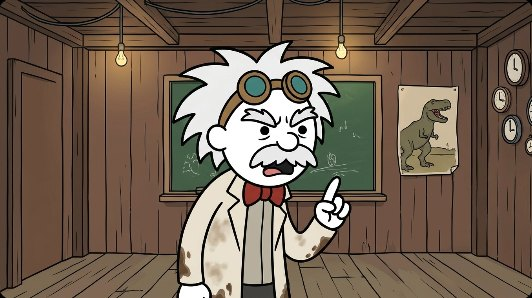
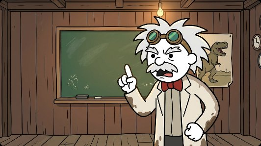
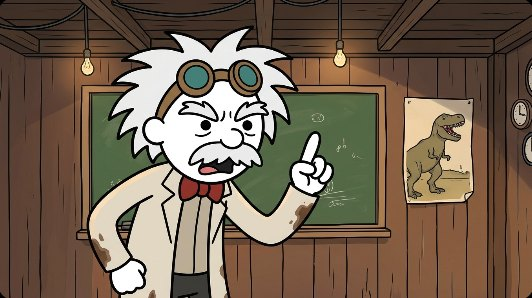
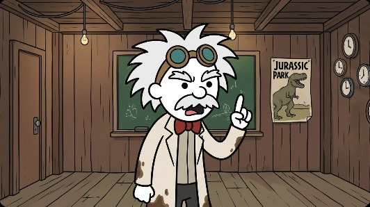
EP1-04-05 膝上景 MLS
你的意見 黑板上要已經畫好時間線和恐龍（已經畫完，不是正在畫）；現在黑板上沒有時間線也沒有恐龍。海報上要清楚寫著英文片名「JURASSIC PARK」（使用者 2026-11-14：EP1 所有海報都改成侏羅紀公園、要有字）；除了海報上的片名，畫面其他地方仍然不能有字。
博士在黑板上，畫了一條長長的時間線。
侏羅紀，是從兩億年前，到一億四千五百萬年前，劍龍就住在這一段。
再來是白堊紀，一直到六千六百萬年前，暴龍排在最後面。
新的中文 prompt
16:9，生成 1 張圖。完全依照所附角色設定表的風格：扁平 2D 卡通，粗黑輪廓線，平塗色塊。畫面中唯一的文字是牆上一張卡通恐龍電影海報上以粗大粗體大寫字母印著的片名 'JURASSIC PARK'；畫面中其他任何地方都絕對不能有別的文字、字母、數字或書寫。畫面中只有 PROF。PROF（完全照所附 PROF 角色設定表）大致背對我們站著，從背後和一側看過去，一隻手臂舉起，指著一塊大大的綠色黑板，上面已經有一幅畫好的圖：一條單一的長橫線時間軸，靠左端有一隻用粉筆簡單畫的小劍龍，最右端有一隻用粉筆簡單畫的小暴龍。黑板上只有這些圖，沒有文字、字母或數字。Shot size：Medium Long Shot (MLS)。PROF 取景到膝蓋以上；畫面底邊在他的膝蓋。鏡頭方向：背面四分之三視角。鏡頭在 PROF 後方、偏向一側；PROF 從背後和一側看過去。鏡頭角度：Eye-level：鏡頭在 PROF 的眼睛高度，平視前方。
背景（手寫）
鏡頭在博士右後方，斜斜地對著黑板那面牆。博士面前是大綠黑板，佔了畫面左邊一大半；黑板上已經畫好一條長長的橫線時間線，左邊一隻劍龍、最右邊一隻暴龍，都是簡單的粉筆畫，黑板下緣的木條上放著板擦和粉筆。黑板右邊是恐龍電影海報，海報上用大大的英文字寫著 JURASSIC PARK，海報右邊是牆角，畫面右緣剛好到轉角。牆上沒有窗。時光機和工作桌在鏡頭後面，看不到。早上的陽光從鏡頭後面的窗戶照到黑板上，加上吊燈泡的暖光。
參考圖：REF_PROF、LAB_CHALKBOARD_WALL
英文 prompt（實際貼進 Flow 的）
16:9, generate 1 image. Flat 2D cartoon in exactly the style of the attached character sheets: thick black outlines, flat colors. The only text anywhere in the picture is the title 'JURASSIC PARK' in big bold capital letters printed on a cartoon dinosaur-movie poster on the wall; there is absolutely no other text, letters, numbers or writing anywhere else in the picture. Only PROF in the picture. PROF (exactly as in the attached PROF character sheet) stands with his back mostly to us, seen from behind and one side, one arm raised and pointing at a big green chalkboard that already has a finished drawing on it: a single long horizontal timeline, with a small simple chalk drawing of a stegosaurus near the left end and a small simple chalk drawing of a tyrannosaurus at the far right end. The chalkboard has only these drawings on it, no words, letters or numbers. Shot size: Medium Long Shot (MLS). PROF is framed from the knees up; the bottom edge of the picture is at his knees. Camera direction: rear three-quarter view. The camera is behind PROF and off to one side; PROF is seen from behind and one side. Camera angle: Eye-level: the camera is at PROF's eye height, looking straight ahead. Background: The camera is behind PROF on his right, looking at an angle at the chalkboard wall. In front of PROF the big green chalkboard fills most of the left side of the picture; on it a long horizontal chalk timeline is already finished, with a simple chalk stegosaurus near the left end and a simple chalk tyrannosaurus at the far right end; an eraser and chalk sit on the wooden ledge along its bottom edge. To the right of the chalkboard hangs a dinosaur movie poster with the title JURASSIC PARK in big bold capital letters; to the right of the poster is the corner of the room, right at the picture's right edge. There is no window on this wall. The time machine and the workbench are behind the camera and out of sight. Morning sunlight comes through the windows behind the camera onto the chalkboard, together with the warm light of hanging bulbs.
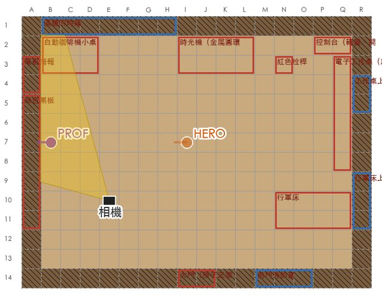
舊圖
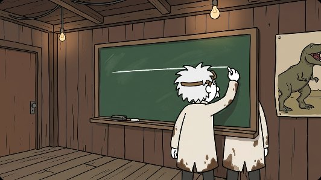
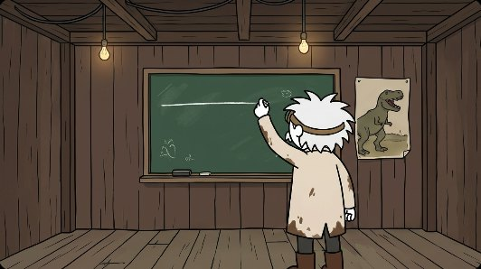
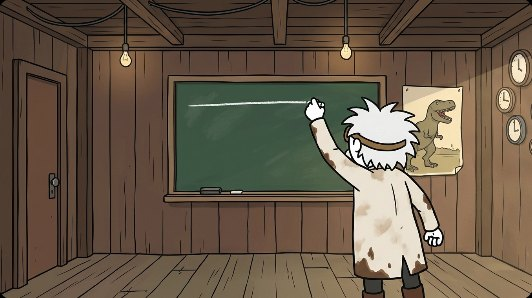
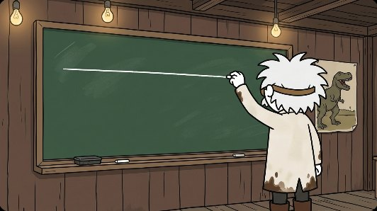
EP1-04-06 中景 MS
你的意見 海報上要清楚寫著英文片名「JURASSIC PARK」（使用者 2026-11-14：EP1 所有海報都改成侏羅紀公園、要有字）；除了海報上的片名，畫面其他地方仍然不能有字。
接著，博士開始上課了。
第一課：越大隻的，跑得越慢。
他一手拿著大恐龍，一手拿著小恐龍。
大的這隻，身高是小的兩倍。
可是牠的腿能撐住的力氣，只多了四倍，
體重卻足足重了八倍。
腿撐不住，當然就跑不快啦。
新的中文 prompt
16:9，生成 1 張圖。完全依照所附角色設定表的風格：扁平 2D 卡通，粗黑輪廓線，平塗色塊。畫面中唯一的文字是牆上一張卡通恐龍電影海報上以粗大粗體大寫字母印著的片名 'JURASSIC PARK'；畫面中其他任何地方都絕對不能有別的文字、字母、數字或書寫。畫面中只有 PROF。PROF（完全照所附 PROF 角色設定表）咧嘴而笑，兩臂張開：右手拿著一隻大的卡通玩具恐龍，左手拿著一隻小的卡通玩具恐龍，並排展示給大家看。Shot size：Medium Shot (MS)。PROF 取景到腰部以上；畫面底邊在他的腰部。鏡頭方向：正面視角。鏡頭在 PROF 前方的地板上，面對他。鏡頭角度：Eye-level：鏡頭在 PROF 的眼睛高度，平視前方。
背景（手寫）
鏡頭正對著黑板那面牆。博士身後是大綠黑板，左右幾乎佔滿整個畫面，上面有一點粉筆塗鴉；畫面右緣露出恐龍電影海報，海報上用大大的英文字寫著 JURASSIC PARK的一角。牆上沒有窗。時光機和工作桌在鏡頭後面，看不到。早上的陽光從鏡頭後面的窗戶照在博士身上，加上吊燈泡的暖光。
參考圖：REF_PROF、LAB_CHALKBOARD_WALL
英文 prompt（實際貼進 Flow 的）
16:9, generate 1 image. Flat 2D cartoon in exactly the style of the attached character sheets: thick black outlines, flat colors. The only text anywhere in the picture is the title 'JURASSIC PARK' in big bold capital letters printed on a cartoon dinosaur-movie poster on the wall; there is absolutely no other text, letters, numbers or writing anywhere else in the picture. Only PROF in the picture. PROF (exactly as in the attached PROF character sheet) grins and holds his arms out: in his right hand a big cartoon toy dinosaur, in his left hand a small cartoon toy dinosaur, showing them off side by side. Shot size: Medium Shot (MS). PROF is framed from the waist up; the bottom edge of the picture is at his waist. Camera direction: front view. The camera is on the floor ahead of PROF, facing him. Camera angle: Eye-level: the camera is at PROF's eye height, looking straight ahead. Background: The camera faces the chalkboard wall straight on. Behind PROF is the big green chalkboard, stretching across almost the whole width of the picture, with a few chalk scribbles on it; a corner of a dinosaur movie poster with the title JURASSIC PARK in big bold capital letters shows at the right edge of the picture. There is no window on this wall. The time machine and the workbench are behind the camera and are not in the picture. Morning sunlight comes in through windows behind the camera onto PROF, plus the warm glow of the hanging bulbs.
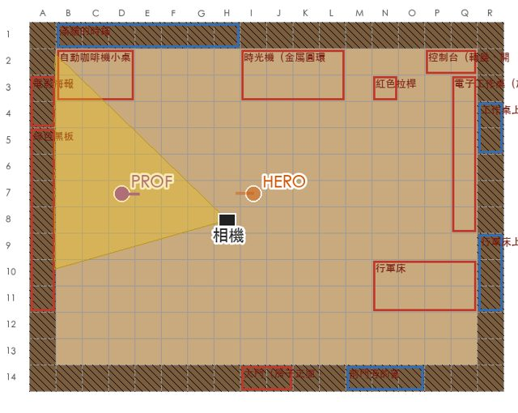
舊圖
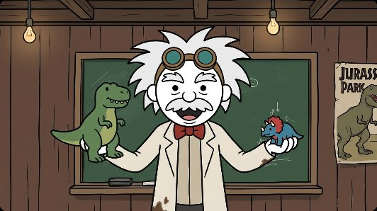
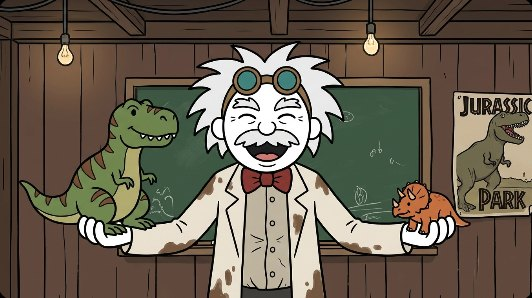
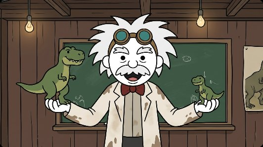
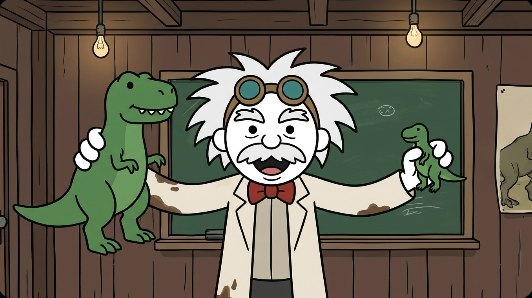
EP1-04-08 中景 MS
你的意見 海報上要清楚寫著英文片名「JURASSIC PARK」（使用者 2026-11-14：EP1 所有海報都改成侏羅紀公園、要有字）；除了海報上的片名，畫面其他地方仍然不能有字。
第二課：跑最快的，不是最大隻的，也不是最小隻的。
是不大不小、剛剛好的，大概九十公斤左右。
只要超過兩千七百公斤，就會被自己的體重拖慢。
新的中文 prompt
16:9，生成 1 張圖。完全依照所附角色設定表的風格：扁平 2D 卡通，粗黑輪廓線，平塗色塊。畫面中唯一的文字是牆上一張卡通恐龍電影海報上以粗大粗體大寫字母印著的片名 'JURASSIC PARK'；畫面中其他任何地方都絕對不能有別的文字、字母、數字或書寫。畫面中只有 PROF。PROF（完全照所附 PROF 角色設定表）舉起兩根手指，接著把雙手張開一小段距離，比出一個「剛剛好、中等」的大小，熱切地解說著。Shot size：Medium Shot (MS)。PROF 取景到腰部以上；畫面底邊在他的腰部。鏡頭方向：正面四分之三視角。鏡頭在 PROF 前方、偏向地板的一側，所以我們看得到他的臉和身體的一側。鏡頭角度：Eye-level：鏡頭在 PROF 的眼睛高度，平視前方。
背景（手寫）
鏡頭斜斜地對著黑板那面牆。博士身後偏左是大綠黑板，上面有一點粉筆塗鴉；黑板右邊是恐龍電影海報，海報上用大大的英文字寫著 JURASSIC PARK，海報右邊就是牆角，畫面右緣露出一點轉角那面牆上的時鐘。牆上沒有窗。時光機和工作桌在鏡頭後面，看不到。早上的陽光從鏡頭後面的窗戶照進來，照在博士和黑板上，加上吊燈泡的暖光。
參考圖：REF_PROF、LAB_CHALKBOARD_WALL
英文 prompt（實際貼進 Flow 的）
16:9, generate 1 image. Flat 2D cartoon in exactly the style of the attached character sheets: thick black outlines, flat colors. The only text anywhere in the picture is the title 'JURASSIC PARK' in big bold capital letters printed on a cartoon dinosaur-movie poster on the wall; there is absolutely no other text, letters, numbers or writing anywhere else in the picture. Only PROF in the picture. PROF (exactly as in the attached PROF character sheet) holds up two fingers, then spreads his hands a small distance apart to show a 'just right, medium' size, explaining eagerly. Shot size: Medium Shot (MS). PROF is framed from the waist up; the bottom edge of the picture is at his waist. Camera direction: front three-quarter view. The camera is ahead of PROF and off to one side of the floor, so we see his face and one side of his body. Camera angle: Eye-level: the camera is at PROF's eye height, looking straight ahead. Background: The camera looks at an angle toward the chalkboard wall. Behind PROF, a little to the left, is the big green chalkboard with a few chalk scribbles on it; to the right of the chalkboard is a dinosaur movie poster with the title JURASSIC PARK in big bold capital letters, and right after the poster is the corner of the room, where a few clocks on the next wall just show at the right edge of the picture. There is no window on this wall. The time machine and the workbench are behind the camera and are not in the picture. Morning sunlight comes in through windows behind the camera onto PROF and the chalkboard, plus the warm glow of the hanging bulbs.

舊圖
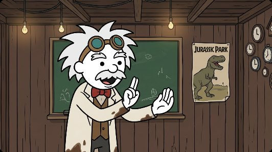
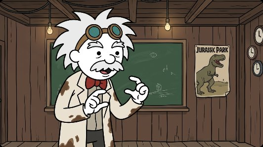
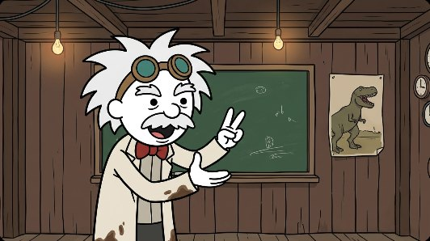
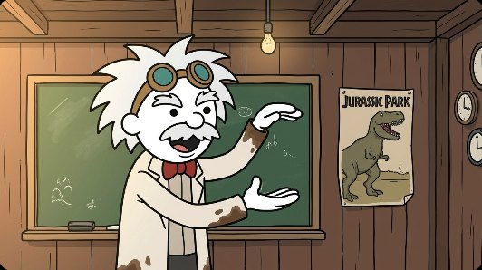
EP1-04-10 中景 MS
你的意見 海報上要清楚寫著英文片名「JURASSIC PARK」（使用者 2026-11-14：EP1 所有海報都改成侏羅紀公園、要有字）；除了海報上的片名，畫面其他地方仍然不能有字。
博士拿出碼表，叫你跑一趟給他看。
一般人跑步，時速大概二十四公里，奧運選手可以到四十四公里。
（停）
新的中文 prompt
16:9，生成 1 張圖。完全依照所附角色設定表的風格：扁平 2D 卡通，粗黑輪廓線，平塗色塊。畫面中唯一的文字是牆上一張卡通恐龍電影海報上以粗大粗體大寫字母印著的片名 'JURASSIC PARK'；畫面中其他任何地方都絕對不能有別的文字、字母、數字或書寫。畫面中只有 PROF。PROF（完全照所附 PROF 角色設定表）一手高舉著一個碼表，另一手朝一側指去，彷彿在叫某人快跑。Shot size：Medium Shot (MS)。PROF 取景到腰部以上；畫面底邊在他的腰部。鏡頭方向：正面四分之三視角。鏡頭在 PROF 前方、偏向地板的一側，所以我們看得到他的臉和身體的一側。鏡頭角度：Eye-level：鏡頭在 PROF 的眼睛高度，平視前方。
背景（手寫）
鏡頭斜斜地對著黑板那面牆。博士身後偏左是大綠黑板，上面有一點粉筆塗鴉；黑板右邊是恐龍電影海報，海報上用大大的英文字寫著 JURASSIC PARK，海報右邊就是牆角，畫面右緣露出一點轉角那面牆上的時鐘。牆上沒有窗。時光機和工作桌在鏡頭後面，看不到。早上的陽光從鏡頭後面的窗戶照進來，照在博士和黑板上，加上吊燈泡的暖光。
參考圖：REF_PROF、LAB_CHALKBOARD_WALL
英文 prompt（實際貼進 Flow 的）
16:9, generate 1 image. Flat 2D cartoon in exactly the style of the attached character sheets: thick black outlines, flat colors. The only text anywhere in the picture is the title 'JURASSIC PARK' in big bold capital letters printed on a cartoon dinosaur-movie poster on the wall; there is absolutely no other text, letters, numbers or writing anywhere else in the picture. Only PROF in the picture. PROF (exactly as in the attached PROF character sheet) holds up a stopwatch in one raised hand and points off to one side with the other, as if telling someone to run. Shot size: Medium Shot (MS). PROF is framed from the waist up; the bottom edge of the picture is at his waist. Camera direction: front three-quarter view. The camera is ahead of PROF and off to one side of the floor, so we see his face and one side of his body. Camera angle: Eye-level: the camera is at PROF's eye height, looking straight ahead. Background: The camera looks at an angle toward the chalkboard wall. Behind PROF, a little to the left, is the big green chalkboard with a few chalk scribbles on it; to the right of the chalkboard is a dinosaur movie poster with the title JURASSIC PARK in big bold capital letters, and right after the poster is the corner of the room, where a few clocks on the next wall just show at the right edge of the picture. There is no window on this wall. The time machine and the workbench are behind the camera and are not in the picture. Morning sunlight comes in through windows behind the camera onto PROF and the chalkboard, plus the warm glow of the hanging bulbs.
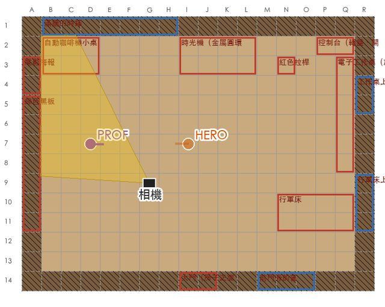
舊圖
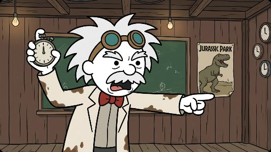
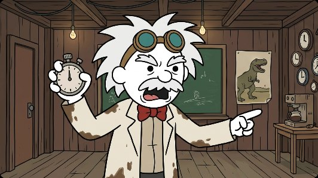
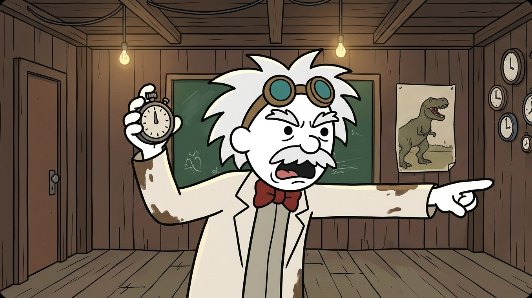
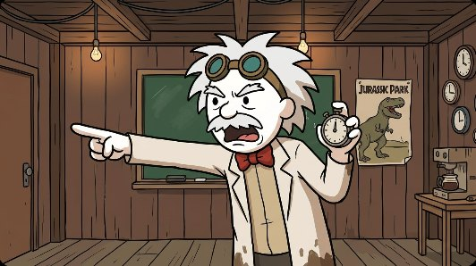
EP1-04-12 中景 MS
你的意見 博士手指的地方要有一個白色框框，框裡是獵豹追羚羊的示意圖。海報上要清楚寫著英文片名「JURASSIC PARK」（使用者 2026-11-14：EP1 所有海報都改成侏羅紀公園、要有字）；除了海報上的片名，畫面其他地方仍然不能有字。
第三課：跑得越快，就越難轉彎。
你看獵豹追羚羊，三次裡面，羚羊可以逃掉兩次呢。
新的中文 prompt
16:9，生成 1 張圖。完全依照所附角色設定表的風格：扁平 2D 卡通，粗黑輪廓線，平塗色塊。畫面中唯一的文字是牆上一張卡通恐龍電影海報上以粗大粗體大寫字母印著的片名 'JURASSIC PARK'；畫面中其他任何地方都絕對不能有別的文字、字母、數字或書寫。畫面中只有 PROF。PROF（完全照所附 PROF 角色設定表）一手舉起三根手指，另一手往旁邊指著牆上一塊白邊面板，面板上畫著一幅簡單的卡通圖：一隻獵豹正在追一隻瞪羚。面板上只有這幅圖，沒有文字或數字。Shot size：Medium Shot (MS)。PROF 取景到腰部以上；畫面底邊在他的腰部。鏡頭方向：正面四分之三視角。鏡頭在 PROF 前方、偏向地板的一側，所以我們看得到他的臉和身體的一側。鏡頭角度：Eye-level：鏡頭在 PROF 的眼睛高度，平視前方。
背景（手寫）
鏡頭斜斜地對著黑板那面牆。博士身後偏左是大綠黑板，上面有一點粉筆塗鴉；博士手指的那一側牆上掛著一塊白框的示意圖板（畫著獵豹追羚羊）。黑板右邊是恐龍電影海報，海報上用大大的英文字寫著 JURASSIC PARK，海報右邊是牆角，畫面右緣露出咖啡機小桌的一角和上面幾個時鐘。牆上沒有窗。時光機和工作桌在鏡頭後面，看不到。早上的陽光從鏡頭後面的窗戶照在博士身上，加上吊燈泡的暖光。
參考圖：REF_PROF、LAB_CHALKBOARD_WALL
英文 prompt（實際貼進 Flow 的）
16:9, generate 1 image. Flat 2D cartoon in exactly the style of the attached character sheets: thick black outlines, flat colors. The only text anywhere in the picture is the title 'JURASSIC PARK' in big bold capital letters printed on a cartoon dinosaur-movie poster on the wall; there is absolutely no other text, letters, numbers or writing anywhere else in the picture. Only PROF in the picture. PROF (exactly as in the attached PROF character sheet) holds up three fingers on one hand, and with the other hand points to the side at a white-bordered panel on the wall that shows a simple cartoon drawing of a cheetah chasing a gazelle. The panel has only the drawing on it, no words or numbers. Shot size: Medium Shot (MS). PROF is framed from the waist up; the bottom edge of the picture is at his waist. Camera direction: front three-quarter view. The camera is ahead of PROF and off to one side of the floor, so we see his face and one side of his body. Camera angle: Eye-level: the camera is at PROF's eye height, looking straight ahead. Background: The camera looks at an angle at the chalkboard wall. Behind PROF, a little to the left, is the big green chalkboard with a few chalk scribbles; on the wall on the side PROF points to hangs the white-bordered panel with the cheetah-and-gazelle drawing. To the right of the chalkboard hangs a dinosaur movie poster with the title JURASSIC PARK in big bold capital letters; to the right of the poster is the corner of the room, and at the right edge of the picture a corner of the small coffee-machine table and a few clocks above it show. There is no window on this wall. The time machine and the workbench are behind the camera and out of sight. Morning sunlight comes through the windows behind the camera onto PROF, together with the warm light of hanging bulbs.
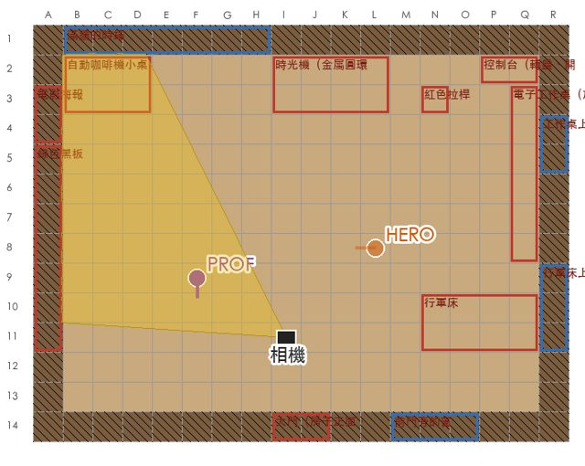
舊圖
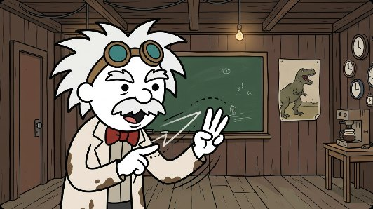
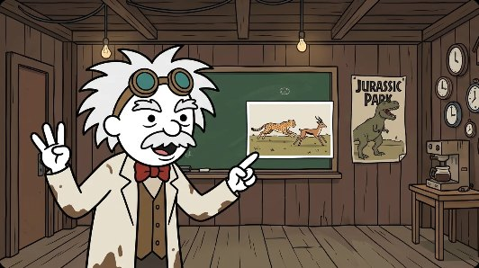
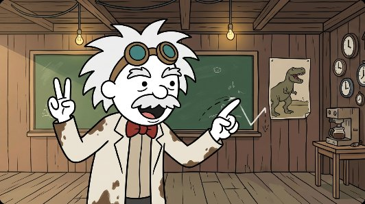
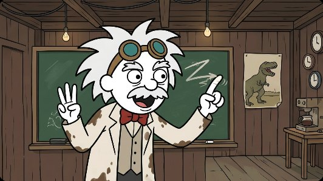
EP1-04-13 全景 FS
你的意見 海報上要清楚寫著英文片名「JURASSIC PARK」（使用者 2026-11-14：EP1 所有海報都改成侏羅紀公園、要有字）；除了海報上的片名，畫面其他地方仍然不能有字。
博士自己示範急轉彎，結果差一點就閃到腰。
新的中文 prompt
16:9，生成 1 張圖。完全依照所附角色設定表的風格：扁平 2D 卡通，粗黑輪廓線，平塗色塊。畫面中唯一的文字是牆上一張卡通恐龍電影海報上以粗大粗體大寫字母印著的片名 'JURASSIC PARK'；畫面中其他任何地方都絕對不能有別的文字、字母、數字或書寫。畫面中只有 PROF。PROF（完全照所附 PROF 角色設定表）被捕捉到急轉身到一半的瞬間，身體猛地扭向一側，一條腿跨出去，突然僵住、一手緊抓著自己的下背，臉因疼痛而扭曲。Shot size：Full Shot (FS)。PROF 的全身，從頭到腳剛好塞進畫面。鏡頭方向：正面四分之三視角。鏡頭在 PROF 前方、偏向地板的一側，所以我們看得到他的臉和身體的一側。鏡頭角度：Eye-level：鏡頭在 PROF 的眼睛高度，平視前方。
背景（手寫）
鏡頭往黑板那面牆和時光機那面牆的轉角看，轉角在畫面右邊大約四分之三的地方。轉角左邊是黑板那面牆：大綠黑板佔了畫面左半邊，黑板右邊是恐龍電影海報，海報上用大大的英文字寫著 JURASSIC PARK，海報就在博士身後偏右。轉角右邊是時光機那面牆靠轉角的一小段：一張小桌上放著自製的咖啡機，桌子上方掛滿時鐘；時光機圓環在畫面右邊外面，看不到。博士腳下是空著的木地板。工作桌和行軍床在鏡頭後面。早上的陽光從鏡頭後面的窗戶照進來，加上吊燈泡的暖光。
參考圖：REF_PROF、LAB_CHALKBOARD_WALL、LAB_MACHINE_WALL
英文 prompt（實際貼進 Flow 的）
16:9, generate 1 image. Flat 2D cartoon in exactly the style of the attached character sheets: thick black outlines, flat colors. The only text anywhere in the picture is the title 'JURASSIC PARK' in big bold capital letters printed on a cartoon dinosaur-movie poster on the wall; there is absolutely no other text, letters, numbers or writing anywhere else in the picture. Only PROF in the picture. PROF (exactly as in the attached PROF character sheet) is caught mid sharp-turn, his body twisted hard to one side, one leg stepping out, suddenly frozen with one hand clutching his lower back, face wincing in pain. Shot size: Full Shot (FS). PROF's whole body, from head to feet, just fits in the picture. Camera direction: front three-quarter view. The camera is ahead of PROF and off to one side of the floor, so we see his face and one side of his body. Camera angle: Eye-level: the camera is at PROF's eye height, looking straight ahead. Background: The camera looks toward the corner where the chalkboard wall meets the time machine wall; the corner is about three quarters of the way across the picture from the left. Left of the corner is the attached wall with the chalkboard: the big green chalkboard fills the left half of the picture, and to the right of it is a dinosaur movie poster with the title JURASSIC PARK in big bold capital letters, just behind PROF and a little to his right. Right of the corner is only a short stretch of the time machine wall near the corner: a small table with a rickety homemade coffee machine, with clocks covering the wall above it; the time machine ring is off the picture to the right and is not seen. Under PROF's feet is open wooden floor. The workbench and the cot are behind the camera. Morning sunlight comes in through windows behind the camera, plus the warm glow of the hanging bulbs.
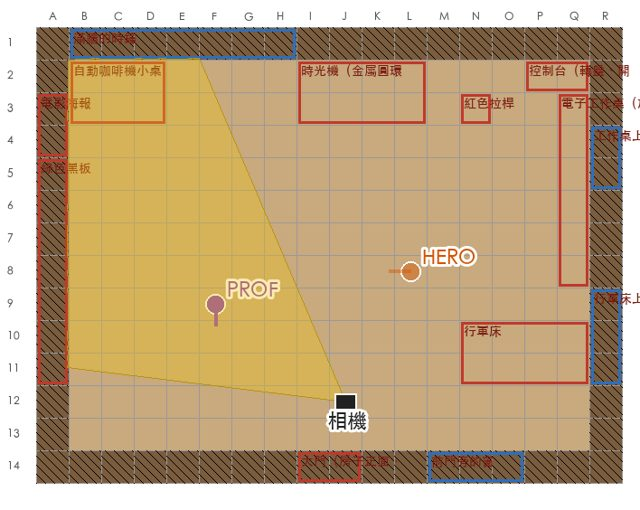
舊圖
EP1-04-18 全景 FS
你的意見 海報上要清楚寫著英文片名「JURASSIC PARK」（使用者 2026-11-14：EP1 所有海報都改成侏羅紀公園、要有字）；除了海報上的片名，畫面其他地方仍然不能有字。
博士還說：沒拍到暴龍、沒帶回牙齒，就不付錢喔。
新的中文 prompt
16:9，生成 1 張圖。完全依照所附角色設定表的風格：扁平 2D 卡通，粗黑輪廓線，平塗色塊。畫面中唯一的文字是牆上一張卡通恐龍電影海報上以粗大粗體大寫字母印著的片名 'JURASSIC PARK'；畫面中其他任何地方都絕對不能有別的文字、字母、數字或書寫。畫面中只有 PROF。PROF（完全照所附 PROF 角色設定表）表情嚴肅地站著，搖晃著一根舉起的手指，提出警告，下巴微微往下。Shot size：Full Shot (FS)。PROF 的全身，從頭到腳剛好塞進畫面。鏡頭方向：正面四分之三視角。鏡頭在 PROF 前方、偏向地板的一側，所以我們看得到他的臉和身體的一側。極低角度鏡頭，鏡頭位於地面高度，仰視 PROF 的全身。
背景（手寫）
鏡頭貼著地板往上看，對著黑板那面牆和時光機那面牆的轉角，轉角在畫面右邊大約三分之二的地方。轉角左邊是黑板那面牆：大綠黑板靠右的一段和它右邊的恐龍電影海報，海報上用大大的英文字寫著 JURASSIC PARK，都在博士身後偏左、往上看過去。轉角右邊是時光機那面牆靠轉角的一段：牆上掛滿時鐘，下面是放著咖啡機的小桌；時光機圓環在畫面右邊外面，看不到。博士頭頂上是低矮的木樑天花板，電線沿著木樑拉，吊著幾顆燈泡。工作桌和行軍床在鏡頭後面。早上的陽光從鏡頭後面的窗戶照進來，加上燈泡的暖光。
參考圖：REF_PROF、LAB_CHALKBOARD_WALL、LAB_MACHINE_WALL
英文 prompt（實際貼進 Flow 的）
16:9, generate 1 image. Flat 2D cartoon in exactly the style of the attached character sheets: thick black outlines, flat colors. The only text anywhere in the picture is the title 'JURASSIC PARK' in big bold capital letters printed on a cartoon dinosaur-movie poster on the wall; there is absolutely no other text, letters, numbers or writing anywhere else in the picture. Only PROF in the picture. PROF (exactly as in the attached PROF character sheet) stands stern, wagging a single raised finger, giving a warning, chin slightly down. Shot size: Full Shot (FS). PROF's whole body, from head to feet, just fits in the picture. Camera direction: front three-quarter view. The camera is ahead of PROF and off to one side of the floor, so we see his face and one side of his body. Extreme low-angle shot, ground-level camera perspective, looking up at PROF's full body. Background: The camera is down at floor level looking up, toward the corner where the chalkboard wall meets the time machine wall; the corner is about two thirds of the way across the picture from the left. Left of the corner is the attached wall with the chalkboard: the right part of the big green chalkboard and a dinosaur movie poster with the title JURASSIC PARK in big bold capital letters to its right, both seen from below, behind PROF and a little to his left. Right of the corner is the part of the time machine wall near the corner: the wall covered with clocks, and below them the small table with the homemade coffee machine; the time machine ring is off the picture to the right and is not seen. Above PROF's head is the low wooden-beam ceiling, with cables strung along the beams and a few bare bulbs hanging down. The workbench and the cot are behind the camera. Morning sunlight comes in through windows behind the camera, plus the warm glow of the bulbs.
舊圖
EP1-05-01 極遠景 EWS
你的意見 旁白改了（6600 萬年前的地圖）。畫面：一張手繪舊羊皮紙地圖，畫整塊北美洲，海陸形狀完全照附上的參考圖 REF_NA66（6600 萬年前的北美洲：大陸大致連在一起，只有南邊墨西哥灣往北伸進來一道細長的淺海灣，北端大約在大陸中間偏上；西邊沿岸一整排山脈）。大陸中間用淡淡的虛線畫出以前大內海的範圍（從北到南把大陸切成東西兩半），讓人看得出這裡曾經是海。不要再畫一大片藍色內海貫穿大陸。prompt 裡不要用文字描述海陸形狀，寫照參考圖就好。
時間，回到六千六百五十萬年前的北美洲。
其實再早個兩百萬年，這塊大陸中間還橫著一片大內海，把它切成東西兩半。
新的中文 prompt
16:9，生成 1 張圖。完全依照所附角色設定表的風格：扁平 2D 卡通，粗黑輪廓線，平塗色塊。畫面中任何地方都不能有文字。畫面中唯一的物件是一張手繪的舊羊皮紙地圖，畫的是 6600 萬年前整個北美洲，從正上方俯視並填滿整個畫面。海岸線以及陸地與海洋的形狀必須完全吻合所附的參考地圖——不要自己發明大陸，也不要加一片橫切陸地的寬闊海洋；大部分陸地是一整塊相連的陸塊。沿著大陸中間，畫一條淡淡的、細細的虛線，從上到下貫穿，標出曾經有一片廣大內海的位置。畫面中沒有角色。Shot size：Extreme Wide Shot (EWS)。大陸在畫面中非常小；環境是主要主體。鏡頭角度：Aerial shot：鏡頭高高位於天空中，俯視大片陸地。
背景（手寫）
鏡頭從正上方往下看一張攤平的手繪舊羊皮紙地圖，地圖填滿整個畫面。地圖上畫的是 6600 萬年前的北美洲，海陸形狀照參考圖 REF_NA66：陸地大致連成一整塊，只有南邊伸進來一道細細的淺藍色海灣。大陸中間一條淡淡的虛線，標出以前大內海的範圍。陸地是手繪的綠色，海是藍色。紙面泛黃，邊角有點舊。光線平均地照在整張紙上。
參考圖：REF_NA66
英文 prompt（實際貼進 Flow 的）
16:9, generate 1 image. Flat 2D cartoon in exactly the style of the attached character sheets: thick black outlines, flat colors. No text anywhere in the picture. The only object in the picture is a hand-drawn old parchment map of the whole of North America 66 million years ago, seen from straight above and filling the frame. The coastline and the shapes of land and sea exactly match the attached reference map — do not invent your own continents and do not add a wide sea cutting across the land; most of the land is one connected landmass. Down the middle of the continent, draw one faint thin dashed line running from top to bottom, marking where a great inland sea used to be. No characters in the picture. Shot size: Extreme Wide Shot (EWS). the continent is very small in the picture; the environment is the main subject. Camera angle: Aerial shot: the camera is high in the sky, looking down at a wide stretch of the land. Background: The camera looks straight down at a flat, hand-drawn old parchment map that fills the whole picture. The map shows North America 66 million years ago, with the shapes of land and sea taken from the attached reference map: the land is mostly one connected landmass, with only a narrow pale-blue shallow bay reaching up from the south. A faint dashed line down the middle of the continent marks where the great inland sea used to be. The land is hand-drawn green and the sea is blue. The paper is yellowed and a little worn at the corners. Light falls evenly across the whole sheet.
舊圖

EP1-05-02 極遠景 EWS
你的意見 旁白改了。畫面：同一張地圖再靠近一點，對著大陸西半部和那道淺海灣的北端。虛線範圍裡大多已經是陸地，只有南邊那道藍色淺海灣還在。一個很小的 HERO 位置標記，站在西邊那塊陸地的東北角：淺海灣北端的西邊、洛磯山脈東邊，靠近海岸的平原上。海陸形狀照 REF_NA66。HERO 只寫代號，長相照 REF_HERO。
後來海水慢慢退掉、乾掉，到了這時候，只剩南邊伸進來一道淺淺的海灣。
你呢，就掉在西邊那塊陸地的東北角，一片靠近海岸的河邊平原上。
新的中文 prompt
16:9，生成 1 張圖。完全依照所附角色設定表的風格：扁平 2D 卡通，粗黑輪廓線，平塗色塊。畫面中任何地方都不能有文字。這是同一張手繪舊羊皮紙地圖的較近視角，畫的是 6600 萬年前的北美洲，從正上方俯視，推近到大陸的西部以及那條狹窄藍色淺海灣的北端。海岸線以及陸地與海洋的形狀完全吻合所附的參考地圖。沿著地圖中間有一條淡淡的、細細的虛線，標出舊內海曾經的位置；虛線以內現在大多已是陸地，只有一條狹窄的藍色淺海灣仍從南邊往上伸。地圖上站著一個單一的、小小的白色圓頭火柴人（HERO）作為位置標記，位於畫面中央偏左、虛線以西的陸地上、靠近海岸。HERO 的臉和手是純紙白色。畫面中只有這一個小火柴人，沒有別的角色。Shot size：Extreme Wide Shot (EWS)。大陸在畫面中非常小；環境是主要主體。鏡頭角度：Aerial shot：鏡頭高高位於天空中，俯視大片陸地。
背景（手寫）
鏡頭從正上方往下看同一張手繪舊羊皮紙地圖，比上一張靠近一些，對著大陸的西半部和那道淺海灣的北端。畫面左邊是西岸一整排山脈，山脈東邊是一大片綠色平原；畫面中間偏右，淺藍色的海灣從畫面下緣往上伸，到畫面中間附近就結束了。虛線圍起來的以前內海範圍，現在大多是陸地。小小的 HERO 標記站在海灣北端的西邊、山脈東邊的平原上，靠近海岸。紙面泛黃。光線平均地照在整張紙上。
參考圖：REF_NA66、REF_HERO
英文 prompt（實際貼進 Flow 的）
16:9, generate 1 image. Flat 2D cartoon in exactly the style of the attached character sheets: thick black outlines, flat colors. No text anywhere in the picture. This is a closer view of the same hand-drawn old parchment map of North America 66 million years ago, seen from straight above and pushed in on the western part of the continent and the northern end of the narrow blue shallow bay. The coastline and the shapes of land and sea exactly match the attached reference map. Along the middle of the map there is one faint thin dashed line marking where the old inland sea used to be; inside that dashed line it is now mostly land, and only a narrow blue shallow bay still reaches up from the south. One single tiny white round-headed stick figure (HERO) stands on the map as a position marker, left of center, on the land to the west of the dashed line and near the coast. HERO's face and hands are pure paper white. There is only this one tiny stick figure and no other character. Shot size: Extreme Wide Shot (EWS). the continent is very small in the picture; the environment is the main subject. Camera angle: Aerial shot: the camera is high in the sky, looking down at a wide stretch of the land. Background: The camera looks straight down at the same hand-drawn old parchment map, a little closer than before, aimed at the western half of the continent and the northern end of the shallow bay. On the left of the picture is the long range of mountains along the west coast, and east of the mountains a wide green plain; right of center, the pale-blue bay reaches up from the bottom edge of the picture and ends near the middle. Inside the dashed line that marks the old inland sea, it is now mostly land. The tiny HERO marker stands on the plain west of the bay's northern tip and east of the mountains, near the coast. The paper is yellowed. Light falls evenly across the whole sheet.
舊圖

EP1-05-03 極遠景 EWS
你的意見 旁白改了。畫面：地圖近到只剩 HERO 落點附近：一叢一叢手繪的樹冠，中間有一條彎彎的藍色河流，河邊森林裡閃一下藍光。不畫角色。
那裡到處是河流和森林，也是暴龍住的地方。
你看，森林裡閃了一下藍光。
新的中文 prompt
16:9，生成 1 張圖。完全依照所附角色設定表的風格：扁平 2D 卡通，粗黑輪廓線，平塗色塊。畫面中任何地方都不能有文字。這是同一張手繪舊羊皮紙地圖的非常近的視角，現在放大到只顯示降落地點周圍的一小塊區域，從正上方俯視並填滿整個畫面。一叢叢手繪的綠色樹冠覆蓋著地圖，一條單一的蜿蜒藍色河流在其間彎繞而過。在河邊、樹叢之間，有一道小小的亮藍色發光閃光在發亮，位於畫面中央偏左。畫面中沒有角色。Shot size：Extreme Wide Shot (EWS)。森林陸地在畫面中非常小；環境是主要主體。鏡頭角度：Aerial shot：鏡頭高高位於天空中，俯視大片陸地。
背景（手寫）
鏡頭從正上方往下看同一張手繪舊羊皮紙地圖，近到只剩 HERO 落點附近的一小塊。一叢一叢手繪的綠色樹冠填滿畫面，一條彎彎曲曲的藍色河從中間穿過；河邊的森林裡閃著一點藍光。紙面泛黃。光線平均地照在整張紙上。
參考圖：—
英文 prompt（實際貼進 Flow 的）
16:9, generate 1 image. Flat 2D cartoon in exactly the style of the attached character sheets: thick black outlines, flat colors. No text anywhere in the picture. This is a very close view of the same hand-drawn old parchment map, now zoomed in so it shows only the small area around the landing site, seen from straight above and filling the frame. Clumps of hand-drawn green tree canopies cover the map, and one single winding blue river curves through them. By the river, among the trees, one small bright blue glowing flash of light shines, left of center. No characters in the picture. Shot size: Extreme Wide Shot (EWS). the forested land is very small in the picture; the environment is the main subject. Camera angle: Aerial shot: the camera is high in the sky, looking down at a wide stretch of the land. Background: The camera looks straight down at the same hand-drawn old parchment map, so close that only the small area around HERO's landing site shows. Clumps of hand-drawn green tree canopies fill the picture, and one winding blue river runs through the middle; in the forest beside the river a small blue light flashes. The paper is yellowed. Light falls evenly across the whole sheet.
舊圖
EP1-06-01 全景 FS
你的意見 時光隧道不在天空，應該是直立的；HERO 是被隧道噴出來所以臉朝下摔倒，不是從天空掉下來。
你是臉先著地的。
身後的隧道，也跟著關起來了。
新的中文 prompt
畫面中只有 HERO：HERO（完全照所附 HERO 角色設定表），胸前背著一台相機、背著背包，全身被濕泥覆蓋。他剛被往前甩出來，正面朝下趴平躺著，整個身體朝著被甩出的方向伸展開來，雙臂往前伸過頭、超出頭部前方，雙腿拖在身後，臉直接壓進泥裡，帽子被撞歪，泥巴濺在他周圍——這正是被射出去、臉朝前滑行到停下來後的那一瞬間，而不是從上方掉下來。他的頭在左邊、腳在右邊。Shot size：Full Shot (FS)。HERO 的全身，從頭到腳剛好塞進畫面。鏡頭方向：側面視角。鏡頭在 HERO 旁邊，剛好從側面看他。鏡頭角度：Eye-level：鏡頭在 HERO 的眼睛高度，平視前方。16:9，生成 1 張圖。完全依照所附角色設定表的風格：扁平 2D 卡通，粗黑輪廓線，平塗色塊。畫面中任何地方都不能有文字。HERO 的臉和手是純紙白色。
背景（手寫）
鏡頭貼近地面，從側面對著森林空地中間的一小片泥地。泥地在畫面正中間，是薄薄一層濕泥，四周是鋪著落葉和矮草的森林地面。泥地上、畫面中間偏右（HERO 腳的那一側），立著時光隧道的出口：一個直立在地面上的藍色發光圓圈，像一扇站著的圓門，底部貼著泥地，正在縮小、快要關起來；HERO 就是從這個圓圈裡被噴出來的。天空裡沒有任何隧道。泥地後面，畫面左邊是一顆長滿青苔的大石頭，畫面右邊是一片高高的蕨類。上午的陽光從鏡頭右後方照過來。
參考圖：REF_HERO
英文 prompt（實際貼進 Flow 的）
Only HERO is in the picture: HERO (exactly as in the attached HERO character sheet), with a camera on a strap across his chest and a backpack, completely covered in wet mud. He has just been flung out forward and is lying belly-down flat, his whole body stretched out in the direction he was thrown, both arms reaching out ahead past his head, his legs trailing behind him, his face pressed straight into the mud, cap knocked askew, mud splashed around him — the very instant just after being shot out and skidding to a stop face-first, NOT dropping down from above. His head is to the left and his feet are to the right. Shot size: Full Shot (FS). HERO's whole body, from head to feet, just fits in the picture. Camera direction: side view. The camera is beside HERO and sees him exactly from the side. Camera angle: Eye-level: the camera is at HERO's eye height, looking straight ahead. 16:9, generate 1 image. Flat 2D cartoon in exactly the style of the attached character sheets: thick black outlines, flat colors. No text anywhere in the picture. HERO's face and hands are pure paper white. Background: The camera is low to the ground, looking from the side at a small patch of mud in the middle of the forest clearing. The mud is in the middle of the picture, a thin layer of wet mud, surrounded by forest floor covered in fallen leaves and low grass. On the mud, right of center (on the side of HERO's feet), stands the exit of the time tunnel: a glowing blue ring standing upright on the ground like a round doorway, its bottom touching the mud, shrinking and about to close; HERO has just been shot out of this ring. There is no tunnel in the sky. Behind the mud, on the left of the picture is a big moss-covered boulder, and on the right a stand of tall ferns. Morning sunlight comes from behind the camera on the right.
舊圖
EP1-06-08 遠景 WS
你的意見 甲龍還是趴在地上，不要站起來。
原來，那是一隻甲龍。全身都是盔甲，尾巴上還有一顆骨錘。
那顆骨錘一揮，可以把你打到下個月去。
還好，牠只想繼續睡覺。
新的中文 prompt
畫面中有兩個角色：ANKY 和 HERO。ANKY（完全照所附 ANKY 角色設定表）從側面看，俯臥趴平在地上，肚子貼著地面、四條腿收折在身體下方——牠自始至終都保持趴著，絕不站起來，身體從未離開地面。牠只是稍微抬了一下頭、略微揚了一下尾巴，然後又重新趴下繼續睡，仍然趴平在地上。HERO（完全照所附 HERO 角色設定表），胸前背著一台相機、背著背包，滿身泥巴和汗水，僵在一旁站著，在這隻巨大動物旁顯得渺小，驚恐地盯著牠看，雙臂僵硬地垂在身側。Shot size：Wide Shot (WS)。ANKY 的全身清楚可見，四周有大片環境。鏡頭方向：側面視角。鏡頭在 ANKY 旁邊，剛好從側面看牠。鏡頭角度：Eye-level：鏡頭在 ANKY 的眼睛高度，平視前方。16:9，生成 1 張圖。完全依照所附角色設定表的風格：扁平 2D 卡通，粗黑輪廓線，平塗色塊。畫面中任何地方都不能有文字。HERO 的臉和手是純紙白色。
背景（手寫）
鏡頭站在森林空地上，正對著空地靠近森林的那一邊。畫面左邊，緊挨著空地的是又高又密的森林，有蘇鐵、銀杏和針葉樹。畫面右邊是一片高到腰的蕨類。畫面中間，空地往前延伸一段，盡頭是一整排又高又密的樹，偏右的地方有一道窄窄的缺口，透出一點亮光。地面鋪著落葉和矮草。上午的陽光從鏡頭右後方照過來。
參考圖：REF_HERO、REF_ANKY、PAIR2_ANKY、REF_PROPS
英文 prompt（實際貼進 Flow 的）
Two characters are in the picture: ANKY and HERO. ANKY (exactly as in the attached ANKY character sheet) seen from the side, lying prone flat on the ground with its belly on the ground and its four legs folded underneath — it stays lying down the whole time and does NOT stand up, its body never rising off the ground. It has only lifted its head a little and raised its tail slightly before settling back down to sleep, still lying flat on the ground. HERO (exactly as in the attached HERO character sheet), a camera on a strap across his chest and a backpack, covered in mud and sweat, stands frozen to one side, small beside the huge animal, staring at it in terror, arms stiff at his sides. Shot size: Wide Shot (WS). ANKY's whole body is clearly visible, with a lot of the surroundings around it. Camera direction: side view. The camera is beside ANKY and sees it exactly from the side. Camera angle: Eye-level: the camera is at ANKY's eye height, looking straight ahead. 16:9, generate 1 image. Flat 2D cartoon in exactly the style of the attached character sheets: thick black outlines, flat colors. No text anywhere in the picture. HERO's face and hands are pure paper white. Background: The camera stands in a forest clearing, facing straight toward the side of the clearing near the forest. On the left side of the picture, right up against the clearing, is tall, dense forest of cycads, ginkgos and conifers. On the right side of the picture is a patch of waist-high ferns. In the middle of the picture, the clearing stretches a little way and ends at a solid row of tall, dense trees, with one narrow gap right of center where a faint glow of light shows through. The ground is covered in leaf litter and low plants. Morning sunlight comes from behind the camera on the right.
舊圖
EP1-06-08W 極遠景 EWS
你的意見 甲龍還是趴在地上，不要站起來。
原來，那是一隻甲龍。全身都是盔甲，尾巴上還有一顆骨錘。
那顆骨錘一揮，可以把你打到下個月去。
還好，牠只想繼續睡覺。
新的中文 prompt
畫面中有兩個角色：ANKY 和 HERO。ANKY（完全照所附 ANKY 角色設定表）從側面看，俯臥趴平在地上，肚子貼著地面、四條腿收折在身體下方——牠自始至終都保持趴著，絕不站起來，身體從未離開地面。牠只是稍微抬了一下頭、略微揚了一下尾巴，然後又重新趴下繼續睡，仍然趴平在地上。HERO（完全照所附 HERO 角色設定表），胸前背著一台相機、背著背包，滿身泥巴和汗水，僵在一旁站著，在這隻巨大動物旁顯得渺小，驚恐地盯著牠看，雙臂僵硬地垂在身側。Shot size：Extreme Wide Shot (EWS)。ANKY 在畫面中很小；整片空地是主要主體，HERO 在甲龍旁邊小小的。鏡頭方向：側面視角。鏡頭在 ANKY 旁邊，剛好從側面看牠。鏡頭角度：Eye-level：鏡頭在 ANKY 的眼睛高度，平視前方。16:9，生成 1 張圖。完全依照所附角色設定表的風格：扁平 2D 卡通，粗黑輪廓線，平塗色塊。畫面中任何地方都不能有文字。HERO 的臉和手是純紙白色。
背景（手寫）
鏡頭從稍高的地方，正對著森林空地靠近森林的那一邊，看得比較遠。畫面左邊，緊挨著空地的是又高又密的森林，有蘇鐵、銀杏和針葉樹。畫面右邊是一片高到腰的蕨類，蕨類過去是空地另一邊的森林。畫面中間，空地往前延伸一段，盡頭被一整排又高又密的樹擋住，偏右的地方有一道窄窄的缺口，透出一點亮光。整片空地四周都被森林圍住。地面鋪著落葉和矮草。上午的陽光從鏡頭右後方照過來。
參考圖：REF_HERO、REF_ANKY、PAIR2_ANKY、REF_PROPS
英文 prompt（實際貼進 Flow 的）
Two characters are in the picture: ANKY and HERO. ANKY (exactly as in the attached ANKY character sheet) seen from the side, lying prone flat on the ground with its belly on the ground and its four legs folded underneath — it stays lying down the whole time and does NOT stand up, its body never rising off the ground. It has only lifted its head a little and raised its tail slightly before settling back down to sleep, still lying flat on the ground. HERO (exactly as in the attached HERO character sheet), a camera on a strap across his chest and a backpack, covered in mud and sweat, stands frozen to one side, small beside the huge animal, staring at it in terror, arms stiff at his sides. Shot size: Extreme Wide Shot (EWS). ANKY is small in the picture; the whole clearing is the main subject, with HERO tiny beside the ankylosaur. Camera direction: side view. The camera is beside ANKY and sees it exactly from the side. Camera angle: Eye-level: the camera is at ANKY's eye height, looking straight ahead. 16:9, generate 1 image. Flat 2D cartoon in exactly the style of the attached character sheets: thick black outlines, flat colors. No text anywhere in the picture. HERO's face and hands are pure paper white. Background: From a slightly raised position, the camera faces straight toward the side of the forest clearing near the forest, seeing a long way. On the left side of the picture, right up against the clearing, is tall, dense forest of cycads, ginkgos and conifers. On the right side of the picture is a patch of waist-high ferns, and beyond the ferns is the forest on the other side of the clearing. In the middle of the picture, the clearing stretches a little way and is blocked at the far end by a solid row of tall, dense trees, with one narrow gap right of center where a faint glow of light shows through. The whole clearing is closed in by forest on every side. The ground is covered in leaf litter and low plants. Morning sunlight comes from behind the camera on the right.

舊圖
EP1-06-09 全景 FS
你的意見 有甲龍就沒有石頭：請寫清楚畫的是甲龍，畫面裡沒有另外的石頭。
你踮著腳尖，偷偷溜走。
新的中文 prompt
畫面中剛好只有兩個角色、沒有別的——沒有任何石頭、巨石或土堆：前景是 HERO，背景是 ANKY。HERO（完全照所附 HERO 角色設定表），胸前背著一台相機、背著背包，滿身泥巴和汗水，正踮著腳朝鏡頭方向偷偷溜走，雙臂張開保持平衡，身體弓著，緊張地回頭越過肩膀瞄。在他身後偏左、小得多也遠得多的地方，ANKY（完全照所附 ANKY 角色設定表）蜷縮著睡著，趴平在地上，尾巴收在下面——牠明顯就是一隻睡著的恐龍，不是石頭或巨石。Shot size：Full Shot (FS)。HERO 的全身，從頭到腳剛好塞進畫面。鏡頭方向：正面四分之三視角。鏡頭在 HERO 前方、偏向一側，所以我們看得到他的臉和身體的一側。鏡頭角度：Eye-level：鏡頭在 HERO 的眼睛高度，平視前方。16:9，生成 1 張圖。完全依照所附角色設定表的風格：扁平 2D 卡通，粗黑輪廓線，平塗色塊。畫面中任何地方都不能有文字。HERO 的臉和手是純紙白色。
背景（手寫）
鏡頭站在森林空地上，斜斜地對著空地邊上的森林。畫面下方是一小片薄薄的泥地。泥地過去，畫面中間略偏左，睡著的甲龍 ANKY 趴在地上，背上的骨板長著青苔、尾錘收在身邊；甲龍後面緊挨著又高又密的森林，有蘇鐵、銀杏和針葉樹，橫過整個畫面。畫面右邊，森林前面是開闊的空地。畫面裡沒有任何石頭。地面鋪著落葉和矮草。上午的陽光從鏡頭左後方照過來。
參考圖：REF_HERO、REF_ANKY、PAIR2_ANKY、REF_PROPS
英文 prompt（實際貼進 Flow 的）
Exactly two characters are in the picture and nothing else — there is NO rock, boulder or mound anywhere: HERO in the foreground and ANKY in the background. HERO (exactly as in the attached HERO character sheet), a camera on a strap across his chest and a backpack, covered in mud and sweat, is creeping away on tiptoe toward the camera, arms out for balance, body hunched, glancing back nervously over his shoulder. Behind him and off to the left, much smaller and farther away, ANKY (exactly as in the attached ANKY character sheet) lies curled up asleep, flat on the ground, its tail tucked down — it is plainly a sleeping dinosaur, NOT a rock or boulder. Shot size: Full Shot (FS). HERO's whole body, from head to feet, just fits in the picture. Camera direction: front three-quarter view. The camera is ahead of HERO and off to one side, so we see his face and one side of his body. Camera angle: Eye-level: the camera is at HERO's eye height, looking straight ahead. 16:9, generate 1 image. Flat 2D cartoon in exactly the style of the attached character sheets: thick black outlines, flat colors. No text anywhere in the picture. HERO's face and hands are pure paper white. Background: The camera stands in the forest clearing looking at an angle toward the forest at the edge of the clearing. At the bottom of the picture is a small patch of thin mud. Beyond the mud, a little left of center, the sleeping ankylosaur ANKY lies flat on the ground, moss growing on the bony plates of its back and its club tail tucked beside it; right behind ANKY, tall dense forest of cycads, ginkgos and conifers runs across the whole picture. On the right of the picture, in front of the forest, is an open clearing. There are no rocks or boulders anywhere in the picture. The ground is covered with fallen leaves and low grass. Morning sunlight comes from behind the camera on the left.
舊圖
EP1-06-09W 遠景 WS
你的意見 有甲龍就沒有石頭：請寫清楚畫的是甲龍，畫面裡沒有另外的石頭。
你踮著腳尖，偷偷溜走。
新的中文 prompt
畫面中剛好只有兩個角色、沒有別的——沒有任何石頭、巨石或土堆：前景是 HERO，背景是 ANKY。HERO（完全照所附 HERO 角色設定表），胸前背著一台相機、背著背包，滿身泥巴和汗水，正踮著腳朝鏡頭方向偷偷溜走，雙臂張開保持平衡，身體弓著，緊張地回頭越過肩膀瞄。在他身後偏左、小得多也遠得多的地方，ANKY（完全照所附 ANKY 角色設定表）蜷縮著睡著，趴平在地上，尾巴收在下面——牠明顯就是一隻睡著的恐龍，不是石頭或巨石。Shot size：Wide Shot (WS)。HERO 的全身清楚可見，四周有大片環境。鏡頭方向：正面四分之三視角。鏡頭在 HERO 前方、偏向一側，所以我們看得到他的臉和身體的一側。鏡頭角度：Eye-level：鏡頭在 HERO 的眼睛高度，平視前方。16:9，生成 1 張圖。完全依照所附角色設定表的風格：扁平 2D 卡通，粗黑輪廓線，平塗色塊。畫面中任何地方都不能有文字。HERO 的臉和手是純紙白色。
背景（手寫）
鏡頭站在森林空地上，往後退得比較遠，斜斜地對著空地邊上的森林。畫面下方是一小片薄薄的泥地。泥地過去，畫面中間略偏左，睡著的甲龍 ANKY 趴在地上，背上的骨板長著青苔、尾錘收在身邊；甲龍後面緊挨著又高又密的森林，有蘇鐵、銀杏和針葉樹，橫過整個畫面。畫面右邊，森林前面是一大片開闊的空地。畫面裡沒有任何石頭。地面鋪著落葉和矮草。上午的陽光從鏡頭左後方照過來。
參考圖：REF_HERO、REF_ANKY、PAIR2_ANKY、REF_PROPS
英文 prompt（實際貼進 Flow 的）
Exactly two characters are in the picture and nothing else — there is NO rock, boulder or mound anywhere: HERO in the foreground and ANKY in the background. HERO (exactly as in the attached HERO character sheet), a camera on a strap across his chest and a backpack, covered in mud and sweat, is creeping away on tiptoe toward the camera, arms out for balance, body hunched, glancing back nervously over his shoulder. Behind him and off to the left, much smaller and farther away, ANKY (exactly as in the attached ANKY character sheet) lies curled up asleep, flat on the ground, its tail tucked down — it is plainly a sleeping dinosaur, NOT a rock or boulder. Shot size: Wide Shot (WS). HERO's whole body is clearly visible, with a lot of the surroundings around him. Camera direction: front three-quarter view. The camera is ahead of HERO and off to one side, so we see his face and one side of his body. Camera angle: Eye-level: the camera is at HERO's eye height, looking straight ahead. 16:9, generate 1 image. Flat 2D cartoon in exactly the style of the attached character sheets: thick black outlines, flat colors. No text anywhere in the picture. HERO's face and hands are pure paper white. Background: The camera stands in the forest clearing, pulled back farther, looking at an angle toward the forest at the edge of the clearing. At the bottom of the picture is a small patch of thin mud. Beyond the mud, a little left of center, the sleeping ankylosaur ANKY lies flat on the ground, moss growing on the bony plates of its back and its club tail tucked beside it; right behind ANKY, tall dense forest of cycads, ginkgos and conifers runs across the whole picture. On the right of the picture, in front of the forest, is a wide open clearing. There are no rocks or boulders anywhere in the picture. The ground is covered with fallen leaves and low grass. Morning sunlight comes from behind the camera on the left.
舊圖
EP1-07-17 中景 MS
你的意見 請注意 HERO 抓的是一棵小樹，不是大樹的小分枝。
牠張開了大嘴。
你連牠的每一顆牙都看得清清楚楚。
新的中文 prompt
16:9，生成 1 張圖。完全依照所附角色設定表的風格：扁平 2D 卡通，粗黑輪廓線，平塗色塊。畫面中任何地方都不能有文字。只有兩個角色加一棵細細的小樹，沒有別的：中央是 TREX（完全照所附 TREX 角色設定表）張得大大的血盆大口，嘴巴大張；左邊是 HERO（完全照所附 HERO 角色設定表），小小的，雙手緊抓著一棵單一細長小樹的最頂端。那棵小樹是一整棵小樹，有一根細樹幹從地面長起，在 HERO 的重量下被壓彎成一道深深的弧形，使樹梢往前傾、正好就在那張大張的嘴前面；它是一整棵細樹彎下來，不是更大一棵樹的分枝。Shot size：Medium Shot (MS)，取景 T. rex 的頭和張開的血盆大口。鏡頭方向：正面四分之三視角。鏡頭在 T. rex 前方、偏向一側，所以我們看得到牠的臉和身體的一側。極低角度鏡頭，鏡頭位於地面高度，仰視 T. rex。HERO 的臉和手是純紙白色。
背景（手寫）
鏡頭在泥岸上往上仰拍，背對河，斜斜地對著森林邊緣。暴龍頭的後面是茂密森林高高的樹梢，有蘇鐵、銀杏和針葉樹，再上面是天空；偏左遠處，森林邊上那棵大樹的樹冠比其他樹都高。上午的太陽在畫面前方偏右的天上，有點逆光。河在鏡頭左後方，看不到。
參考圖：REF_HERO、REF_TREX、PAIR2_TREX
英文 prompt（實際貼進 Flow 的）
16:9, generate 1 image. Flat 2D cartoon in exactly the style of the attached character sheets: thick black outlines, flat colors. No text anywhere in the picture. Only two characters plus one thin young tree, nothing else: in the center the huge gaping jaws of TREX (exactly as in the attached TREX character sheet), mouth wide open; at the left HERO (exactly as in the attached HERO character sheet), small, clinging with both hands to the very top of a single slender young tree. The young tree is a whole small tree with one thin trunk rising from the ground, bent over into a deep curve under HERO's weight so that its tip leans forward right in front of the open mouth; it is a whole thin tree bending over, not a branch of a bigger tree. Shot size: Medium Shot (MS), framing the T. rex's head and open jaws. Camera direction: front three-quarter view. The camera is ahead of the T. rex and off to one side, so we see its face and one side of its body. Extreme low-angle shot, ground-level camera perspective, looking up at the T. rex. HERO's face and hands are pure paper white. Background: The camera is on the mud bank looking up, with its back to the river, facing the forest edge at an angle. Behind the T. rex's head are the tall treetops of a dense Cretaceous forest of cycads, ginkgos and conifers, and above them the sky; a little to the left and far away, the crown of the huge tree at the forest edge rises above all the other trees. The morning sun is in the sky ahead and slightly to the right, so the picture is a little backlit. The river is behind the camera on the left and is not in the picture.
舊圖
EP1-07-17W 膝上景 MLS
你的意見 請注意 HERO 抓的是一棵小樹，不是大樹的小分枝。
牠張開了大嘴。
你連牠的每一顆牙都看得清清楚楚。
新的中文 prompt
16:9，生成 1 張圖。完全依照所附角色設定表的風格：扁平 2D 卡通，粗黑輪廓線，平塗色塊。畫面中任何地方都不能有文字。只有兩個角色加一棵細細的小樹，沒有別的：右邊是 TREX（完全照所附 TREX 角色設定表）的頭和張得大大的血盆大口，嘴巴大張，看得到牠的脖子和上半身；左邊是 HERO（完全照所附 HERO 角色設定表），小小的，雙手緊抓著一棵單一細長小樹的頂端。那棵小樹是一整棵小樹，有一根細樹幹從地面長起，在他的重量下被壓彎成一道深深的弧，使樹梢傾到那張大張的嘴前面；它是一整棵細樹彎下來，不是更大一棵樹的分枝。Shot size：Medium Long Shot (MLS)。T. rex 取景到膝蓋以上；畫面底邊在牠的膝蓋。鏡頭方向：正面四分之三視角。鏡頭在 T. rex 前方、偏向一側，所以我們看得到牠的臉和身體的一側。極低角度鏡頭，鏡頭位於地面高度，仰視 T. rex。HERO 的臉和手是純紙白色。
背景（手寫）
鏡頭在泥岸上往上仰拍，背對河，斜斜地對著森林邊緣，比上一格退後一點。畫面下方是平坦的泥地，暴龍腳邊有一叢蕨類。再過去是茂密的森林邊緣，有蘇鐵、銀杏和針葉樹，樹梢上面是天空；森林邊上那棵比其他樹都高大很多的樹在畫面中間遠處。上午的太陽在畫面前方偏右的天上，有點逆光。河在鏡頭左後方，看不到。
參考圖：REF_HERO、REF_TREX、PAIR2_TREX
英文 prompt（實際貼進 Flow 的）
16:9, generate 1 image. Flat 2D cartoon in exactly the style of the attached character sheets: thick black outlines, flat colors. No text anywhere in the picture. Only two characters plus one thin young tree, nothing else: on the right the head and gaping jaws of TREX (exactly as in the attached TREX character sheet), mouth wide open, its neck and upper body visible; at the left HERO (exactly as in the attached HERO character sheet), small, clinging with both hands to the top of a single slender young tree. The young tree is a whole small tree with one thin trunk from the ground, bent over into a deep arc under his weight so its tip leans in front of the open mouth; it is a whole thin tree bending over, not a branch of a bigger tree. Shot size: Medium Long Shot (MLS). The T. rex is framed from the knees up; the bottom edge of the picture is at its knees. Camera direction: front three-quarter view. The camera is ahead of the T. rex and off to one side, so we see its face and one side of its body. Extreme low-angle shot, ground-level camera perspective, looking up at the T. rex. HERO's face and hands are pure paper white. Background: The camera is on the mud bank looking up, with its back to the river, facing the forest edge at an angle, a little farther back than the previous shot. Along the bottom of the picture is flat mud, with a clump of ferns by the T. rex's feet. Beyond is the edge of a dense Cretaceous forest of cycads, ginkgos and conifers, with sky above the treetops; far away in the middle of the picture, the huge tree at the forest edge stands much taller than the rest. The morning sun is in the sky ahead and slightly to the right, so the picture is a little backlit. The river is behind the camera on the left and is not in the picture.
舊圖
EP1-07-18 遠景 WS
你的意見 HERO 剛剛抓的那棵小樹不見了；那棵小樹要在畫面裡，在暴龍那一側。
博士明明講過的。
可是那時候，你在滑手機。
越大隻的，跑得越慢。
牠咬了個空。
新的中文 prompt
16:9，生成 1 張圖。完全依照所附角色設定表的風格：扁平 2D 卡通，粗黑輪廓線，平塗色塊。畫面中任何地方都不能有文字。只有兩個角色加一棵細細的小樹，沒有別的：右邊是 TREX（完全照所附 TREX 角色設定表）的頭和血盆大口，撲了個空咬在空氣上；在右邊、和 T. rex 同一側，有一棵單一細長小樹——就是 HERO 剛才緊抓著的那整棵小樹——現在已經空了、正彈回直立，在被放開後重新挺直；就在 T. rex 的嘴正下方，HERO（完全照所附 HERO 角色設定表）正往下翻滾墜落，手腳亂舞，剛剛才滑脫出來。Shot size：Wide Shot (WS)。兩者都清楚可見，四周有環境。鏡頭方向：側面視角。鏡頭在 T. rex 旁邊，剛好從側面看牠。鏡頭角度：Eye-level：鏡頭在 T. rex 的眼睛高度，平視前方。HERO 的臉和手是純紙白色。
背景（手寫）
鏡頭在泥岸上靠森林的那一邊，沿著河岸拍過去，森林在右手邊、河在左手邊。畫面右邊緊挨著茂密的森林邊緣，有蘇鐵、銀杏和針葉樹，一路往遠處延伸；遠處森林邊上那棵比其他樹都高大很多的樹在畫面中間偏右。畫面左邊是平坦、光禿禿的泥岸，再過去是很寬的河。暴龍腳邊的泥地上有一叢蕨類，那棵細細的小樹就長在這叢蕨類裡，緊挨在暴龍身旁、跟暴龍在同一邊。上午的陽光從畫面右前方照過來。鏡頭後面，泥岸和河繼續往另一頭延伸，看不到。
參考圖：REF_HERO、REF_TREX、PAIR2_TREX
英文 prompt（實際貼進 Flow 的）
16:9, generate 1 image. Flat 2D cartoon in exactly the style of the attached character sheets: thick black outlines, flat colors. No text anywhere in the picture. Only two characters plus one thin young tree, nothing else: on the right the head and jaws of TREX (exactly as in the attached TREX character sheet) snapping shut on empty air; on the right, on the same side as the T. rex, a single slender young tree — the whole small tree HERO had just been clinging to — now empty and springing back upright, straightening after being released; directly below the T. rex's jaws HERO (exactly as in the attached HERO character sheet) is tumbling downward, arms and legs flailing, having just slipped free. Shot size: Wide Shot (WS). Both are clearly visible, with the surroundings around them. Camera direction: side view. The camera is beside the T. rex and sees it exactly from the side. Camera angle: Eye-level: the camera is at the T. rex's eye height, looking straight ahead. HERO's face and hands are pure paper white. Background: The camera is on the mud bank on the forest side, filming along the riverbank, with the forest on the right and the river on the left. On the right side of the picture, close by, is the dense edge of the forest, with cycads, ginkgos and conifers, running on into the distance; far off, the one tree at the forest edge that is much taller and bigger than all the others stands right of center. On the left of the picture is flat, bare mud bank, and beyond it the very wide river. On the mud by the T. rex's feet is a clump of ferns, and the thin young tree grows right out of this fern clump, close beside the T. rex, on the same side as the T. rex. Morning sunlight comes from the front right of the picture. Behind the camera the mud bank and the river continue the other way, out of sight.
舊圖
EP1-07-18W 極遠景 EWS
你的意見 HERO 剛剛抓的那棵小樹不見了；那棵小樹要在畫面裡，在暴龍那一側。
博士明明講過的。
可是那時候，你在滑手機。
越大隻的，跑得越慢。
牠咬了個空。
新的中文 prompt
16:9，生成 1 張圖。完全依照所附角色設定表的風格：扁平 2D 卡通，粗黑輪廓線，平塗色塊。畫面中任何地方都不能有文字。只有兩個角色加一棵細細的小樹，沒有別的：右邊是 TREX（完全照所附 TREX 角色設定表），全身入鏡，往前猛撲、血盆大口撲了個空咬在空氣上；在牠旁邊、和 T. rex 同一側，有一棵單一細長小樹——就是 HERO 剛才緊抓著的那整棵小樹——現在已經空了、正彈回直立；在 T. rex 的頭下方，HERO（完全照所附 HERO 角色設定表）往下翻滾墜落，手腳亂舞。Shot size：Extreme Wide Shot (EWS)。HERO 非常小；恐龍是主要主體。鏡頭方向：側面視角。鏡頭在 T. rex 旁邊，剛好從側面看牠。鏡頭角度：Eye-level：鏡頭在 T. rex 的眼睛高度，平視前方。HERO 的臉和手是純紙白色。
背景（手寫）
鏡頭站在森林邊上，比上一格退後一點，沿著河岸拍過去，森林在右手邊、河在左手邊。畫面右邊緊挨著鏡頭就是茂密的森林邊緣，有蘇鐵、銀杏和針葉樹，一路往遠處延伸；遠處森林邊上那棵比其他樹都高大很多的樹在畫面右邊。畫面左邊是平坦、光禿禿的泥岸，再過去是很寬的河。暴龍腳邊的泥地上有一叢蕨類，那棵細細的小樹就長在這叢蕨類裡，緊挨在暴龍身旁、跟暴龍在同一邊。上午的陽光從畫面右前方照過來。鏡頭後面，泥岸和河繼續往另一頭延伸，看不到。
參考圖：REF_HERO、REF_TREX、PAIR2_TREX
英文 prompt（實際貼進 Flow 的）
16:9, generate 1 image. Flat 2D cartoon in exactly the style of the attached character sheets: thick black outlines, flat colors. No text anywhere in the picture. Only two characters plus one thin young tree, nothing else: on the right TREX (exactly as in the attached TREX character sheet), whole body in frame, lunging and snapping its jaws shut on empty air; beside it, on the same side as the T. rex, a single slender young tree — the whole small tree HERO had just been clinging to — now empty and springing back upright; below the T. rex's head HERO (exactly as in the attached HERO character sheet) tumbles downward, flailing. Shot size: Extreme Wide Shot (EWS). HERO is very small; the dinosaur is the main subject. Camera direction: side view. The camera is beside the T. rex and sees it exactly from the side. Camera angle: Eye-level: the camera is at the T. rex's eye height, looking straight ahead. HERO's face and hands are pure paper white. Background: The camera stands at the edge of the forest, a little farther back than the previous shot, filming along the riverbank, with the forest on the right and the river on the left. Right beside the camera on the right side of the picture is the dense edge of the forest, with cycads, ginkgos and conifers, running on into the distance; far off, the one tree at the forest edge that is much taller and bigger than all the others stands on the right of the picture. On the left of the picture is flat, bare mud bank, and beyond it the very wide river. On the mud by the T. rex's feet is a clump of ferns, and the thin young tree grows right out of this fern clump, close beside the T. rex, on the same side as the T. rex. Morning sunlight comes from the front right of the picture. Behind the camera the mud bank and the river continue the other way, out of sight.
舊圖
EP1-07-19 全景 FS
你的意見 HERO 已經跑了，應該遠離那叢草叢和小樹（草叢和小樹離 HERO 已經有一段距離）。
你掉了下來。
然後，你拔腿就跑。
新的中文 prompt
16:9，生成 1 張圖。完全依照所附角色設定表的風格：扁平 2D 卡通，粗黑輪廓線，平塗色塊。畫面中任何地方都不能有文字。只有兩個角色，沒有別的：前面是 HERO（完全照所附 HERO 角色設定表）全速朝鏡頭方向直直衝刺，手腳張得大大的，滿臉恐懼，已經遠遠離開他跌倒的地方；在他身後和上方，TREX（完全照所附 TREX 角色設定表）龐大的下半身和腿部逼近，牠的頭跑出畫面上緣外。Shot size：Full Shot (FS)。HERO 的全身，從頭到腳剛好塞進畫面。鏡頭方向：正面視角。鏡頭在 HERO 前方，面對他。鏡頭角度：Eye-level：鏡頭在 HERO 的眼睛高度，平視前方。HERO 的臉和手是純紙白色。
背景（手寫）
鏡頭站在森林邊緣，從森林裡往外對著河岸拍。畫面左右兩邊緣露出近處森林的樹幹和枝葉，有蘇鐵、銀杏和針葉樹。畫面中間往外是平坦、光禿禿的泥岸，泥岸過去是很寬的河，橫過整個畫面，河對岸是另一片森林。畫面右邊、離 HERO 已經有一段距離的泥岸上，有一叢蕨類和那棵細細的小樹，留在 HERO 跑開的地方。上午的陽光從鏡頭右後方照過來，照亮 HERO 的正面。
參考圖：REF_HERO、REF_TREX、PAIR2_TREX
英文 prompt（實際貼進 Flow 的）
16:9, generate 1 image. Flat 2D cartoon in exactly the style of the attached character sheets: thick black outlines, flat colors. No text anywhere in the picture. Only two characters, nothing else: in front HERO (exactly as in the attached HERO character sheet) sprinting straight toward the camera at full speed, arms and legs flung wide, face full of terror, already well clear of where he fell; behind and above him the massive lower body and legs of TREX (exactly as in the attached TREX character sheet) loom, its head running off the top of the frame. Shot size: Full Shot (FS). HERO's whole body, from head to feet, just fits in the picture. Camera direction: front view. The camera is ahead of HERO, facing him. Camera angle: Eye-level: the camera is at HERO's eye height, looking straight ahead. HERO's face and hands are pure paper white. Background: The camera stands at the edge of the forest, looking out from the forest toward the riverbank. Trunks and leaves of the nearby forest show at the left and right edges of the picture; the trees are cycads, ginkgos and conifers. Out beyond them in the middle of the picture is flat, bare mud bank, and beyond the bank the very wide river runs across the whole picture, with another forest on the far shore. On the right side of the picture, on the mud bank and already some distance away from HERO, are a clump of ferns and the thin young tree, left behind where HERO ran from. Morning sunlight comes from behind the camera on the right and lights HERO's front.
舊圖
EP1-07-19W 遠景 WS
你的意見 HERO 已經跑了，應該遠離那叢草叢和小樹（草叢和小樹離 HERO 已經有一段距離）。
你掉了下來。
然後，你拔腿就跑。
新的中文 prompt
16:9，生成 1 張圖。完全依照所附角色設定表的風格：扁平 2D 卡通，粗黑輪廓線，平塗色塊。畫面中任何地方都不能有文字。只有兩個角色，沒有別的：前面是 HERO（完全照所附 HERO 角色設定表）全速朝鏡頭方向衝刺，手腳張得大大的，驚恐萬分，已經遠遠離開他跌倒的地方；在他身後是 TREX（完全照所附 TREX 角色設定表），全身入鏡，笨重地追在他後面。Shot size：Wide Shot (WS)。HERO 的全身清楚可見，四周有大片環境。鏡頭方向：正面視角。鏡頭在 HERO 前方，面對他。鏡頭角度：Eye-level：鏡頭在 HERO 的眼睛高度，平視前方。HERO 的臉和手是純紙白色。
背景（手寫）
鏡頭站在森林邊緣再往裡面一點，從森林裡往外對著河岸拍。畫面左右兩邊和上緣是近處森林的樹幹和枝葉，像框一樣框住畫面，有蘇鐵、銀杏和針葉樹。畫面中間往外是平坦、光禿禿的泥岸，泥岸過去是很寬的河，橫過整個畫面，河對岸是另一片森林。畫面右邊、離 HERO 已經有一段距離的泥岸上，有一叢蕨類和那棵細細的小樹，留在 HERO 跑開的地方。上午的陽光從鏡頭右後方照過來，照亮 HERO 的正面。
參考圖：REF_HERO、REF_TREX、PAIR2_TREX
英文 prompt（實際貼進 Flow 的）
16:9, generate 1 image. Flat 2D cartoon in exactly the style of the attached character sheets: thick black outlines, flat colors. No text anywhere in the picture. Only two characters, nothing else: in front HERO (exactly as in the attached HERO character sheet) sprinting toward the camera at full speed, arms and legs flung wide, terrified, already well clear of where he fell; behind him TREX (exactly as in the attached TREX character sheet), whole body in frame, lumbering after him. Shot size: Wide Shot (WS). HERO's whole body is clearly visible, with a lot of the surroundings around him. Camera direction: front view. The camera is ahead of HERO, facing him. Camera angle: Eye-level: the camera is at HERO's eye height, looking straight ahead. HERO's face and hands are pure paper white. Background: The camera stands at the edge of the forest, a little deeper inside, looking out from the forest toward the riverbank. Trunks and leaves of the nearby forest frame the left, right and top of the picture; the trees are cycads, ginkgos and conifers. Out beyond them in the middle of the picture is flat, bare mud bank, and beyond the bank the very wide river runs across the whole picture, with another forest on the far shore. On the right side of the picture, on the mud bank and already some distance away from HERO, are a clump of ferns and the thin young tree, left behind where HERO ran from. Morning sunlight comes from behind the camera on the right and lights HERO's front.
舊圖
EP1-09-02 全景 FS
你的意見 HERO 後面應該是一片坡地，坡上有森林（現在的圖看起來像河谷）。
你跑贏了暴龍耶。
你是史上第一個跑贏暴龍的大學生。
（停）
也是史上第一個，延畢兩年的。
新的中文 prompt
16:9，生成 1 張圖。完全依照所附角色設定表的風格：扁平 2D 卡通，粗黑輪廓線，平塗色塊。畫面中任何地方都不能有文字。畫面中只有一個角色：HERO（完全照所附 HERO 角色設定表），胸前斜背著一台相機。他趾高氣昂地往前大步走，挺著胸膛，一拳向上高舉做出勝利姿勢，咧嘴大笑，噘著嘴在吹口哨。Shot size：Full Shot (FS)。HERO 的全身，從頭到腳剛好塞進畫面。鏡頭方向：正面四分之三視角。鏡頭在 HERO 前方、偏向河床的一側，所以我們看得到他的臉和身體的一側。極低角度鏡頭，鏡頭位於地面高度，仰視 HERO 的全身。HERO 的臉和手是純紙白色。
背景（手寫）
鏡頭貼著乾河床的地面，往上斜斜地看向 HERO 背後的河岸那一邊。畫面下緣只露出一點點龜裂的泥巴和碎石。HERO 背後是一片往上斜的坡地，從河床邊一路往上爬，坡上長滿蘇鐵、銀杏和針葉樹的森林，越往上越高，佔滿畫面上半部，樹梢上面露出一點天空；坡腳長著一排高高的蕨類。畫面右邊有一棵特別高的針葉樹，比其他樹都高。這裡不是河谷：畫面裡看不到河，也看不到對面的山坡。午後的太陽在鏡頭正後方，把坡上的蕨類和樹照得很亮。
參考圖：REF_HERO、REF_PROPS
英文 prompt（實際貼進 Flow 的）
16:9, generate 1 image. Flat 2D cartoon in exactly the style of the attached character sheets: thick black outlines, flat colors. No text anywhere in the picture. Only one character is in the picture: HERO (exactly as in the attached HERO character sheet), with a camera strapped across his chest. He struts forward triumphantly, chest puffed out, one fist pumped up in victory, grinning widely, lips puckered whistling. Shot size: Full Shot (FS). HERO's whole body, from head to feet, just fits in the picture. Camera direction: front three-quarter view. The camera is ahead of HERO and off to one side of the riverbed, so we see his face and one side of his body. Extreme low-angle shot, ground-level camera perspective, looking up at HERO's full body. HERO's face and hands are pure paper white. Background: The camera is right down on the dry riverbed, looking up at an angle toward the bank behind HERO. Only a little cracked mud and gravel show along the bottom edge of the picture. Behind HERO is a hillside sloping upward, climbing from the edge of the riverbed; the slope is covered with forest of cycads, ginkgos and conifers, rising higher and higher and filling the top half of the picture, with a little sky above the treetops; a row of tall ferns grows at the foot of the slope. On the right of the picture is one especially tall conifer, taller than all the other trees. This is not a valley: no river and no opposite hillside appear in the picture. The afternoon sun is directly behind the camera, brightly lighting the ferns and trees on the slope.
舊圖
EP1-10-08 遠景 WS
你的意見 HERO 跳過倒木，牠沒有跳：牠停在倒木前面，沒有跳過去（不是想跳但跳不過）。
你轉身就跑，跳過一根倒在地上的樹幹。
你跳過去了。
牠沒有。
新的中文 prompt
16:9，生成 1 張圖。完全依照所附角色設定表的風格：扁平 2D 卡通，粗黑輪廓線，平塗色塊。畫面中任何地方都不能有文字。畫面中只有兩個角色：右邊，HERO（完全照所附 HERO 角色設定表）正凌空躍過一根低矮的倒木，雙腿收起，往右移動；左邊，RAPTOR（完全照所附 RAPTOR 角色設定表）就站在同一根倒木正前方的地上靜止不動，雙腳平踏在倒木靠近這一側的地面上，沒有在跳、也不在半空中，牠的頭抬起、轉過來越過倒木頂端看著 HERO。Shot size：Wide Shot (WS)。HERO 的全身清楚可見，四周有大片環境。鏡頭方向：側面視角。鏡頭在空地旁邊，剛好從側面看 HERO 和 RAPTOR。鏡頭角度：Eye-level：鏡頭在 HERO 的眼睛高度，平視前方。HERO 的臉和手是純紙白色。
背景（手寫）
鏡頭在空地邊的樹叢裡往外拍，對著空地另一頭的樹林。畫面左右兩邊有一點近處的枝葉。空地中間偏右的地上橫躺著一根矮倒木，左右橫著放。畫面右邊，一根倒下的大樹幹斜架著，從畫面右緣一直往遠處延伸，樹幹下面有空隙。空地另一頭是一整排茂密的樹林，畫面左邊的樹林邊緣也一路往遠處延伸。地上鋪著落葉和矮矮的植物。傍晚的陽光從畫面左邊斜斜照過來，倒木的影子往右拉長。
參考圖：REF_HERO、REF_RAPTOR、PAIR2_RAPTOR
英文 prompt（實際貼進 Flow 的）
16:9, generate 1 image. Flat 2D cartoon in exactly the style of the attached character sheets: thick black outlines, flat colors. No text anywhere in the picture. Only two characters in the picture: on the right, HERO (exactly as in the attached HERO character sheet) is in mid-air leaping over a low fallen log, legs tucked up, moving to the right; on the left, RAPTOR (exactly as in the attached RAPTOR character sheet) is standing still on the ground right in front of the same log, both feet planted flat on the ground on the near side of the log, not jumping and not in mid-air, its head raised and turned to look at HERO over the top of the log. Shot size: Wide Shot (WS). HERO's whole body is clearly visible, with a lot of the surroundings around him. Camera direction: side view. The camera is beside the clearing and sees HERO and RAPTOR exactly from the side. Camera angle: Eye-level: the camera is at HERO's eye height, looking straight ahead. HERO's face and hands are pure paper white. Background: The camera is among the bushes at the edge of a forest clearing, looking out across the clearing toward the trees on its far side. A few nearby leaves and branches show at the left and right edges of the picture. Slightly right of the middle of the clearing, a low fallen log lies on the ground, running across the picture from left to right. On the right side of the picture, a huge fallen tree trunk is propped up at a slant, running from the right edge of the picture away into the distance, with a gap underneath it. On the far side of the clearing stands a dense forest of cycads, ginkgos and conifers, and on the left side of the picture the forest edge also runs away into the distance. The ground is covered with leaf litter and low plants. Early-evening sunlight slants in from the left side of the picture, and the log's shadow stretches to the right.
舊圖
EP1-11-06 中景 MS
你的意見 海報上要清楚寫著英文片名「JURASSIC PARK」（使用者 2026-11-14：EP1 所有海報都改成侏羅紀公園、要有字）；除了海報上的片名，畫面其他地方仍然不能有字。
博士講過的話。
這一次，你好像有聽進去一點點。
跑得越快，就越難轉彎。
新的中文 prompt
16:9，生成 1 張圖。完全依照所附角色設定表的風格：扁平 2D 卡通，粗黑輪廓線，平塗色塊。畫面中唯一的文字是海報上以粗大粗體大寫字母寫的電影海報片名 'JURASSIC PARK'；畫面中其他任何地方都沒有別的文字。畫面中只有一個角色：HERO（完全照所附 HERO 角色設定表），身上完全沒有泥巴、沒有相機也沒有背包，坐在一張實驗室高腳凳上，仰著頭聆聽，帶著有點放空發呆的表情。他身後的牆上掛著一張電影海報，海報的片名以又大、又清楚、又粗的大寫字母寫著 'JURASSIC PARK'。Shot size：Medium Shot (MS)。HERO 取景到腰部以上；畫面底邊在他的腰部。鏡頭方向：正面視角。鏡頭在 HERO 前方，面對他。鏡頭角度：Eye-level：鏡頭在 HERO 的眼睛高度，平視前方。HERO 的臉和手是純紙白色。
背景（手寫）
這是一間老舊兩層木造小屋的一樓，改裝成雜亂的自製科技實驗室：木板牆、木地板，低矮的木樑天花板上拉著電線、吊著幾顆燈泡。鏡頭對著掛黑板的那面牆。這是近一點的鏡頭：畫面左邊和中間是一大塊綠色黑板；畫面右邊，黑板旁邊的牆上釘著一張恐龍電影海報，海報上用大大的英文字寫著 JURASSIC PARK；畫面右上角露出旁邊那面牆上掛滿的各式時鐘，時鐘下面的角落有一張小桌，上面是用管子、齒輪和凹扁水壺拼成的自製咖啡機。早上的陽光從鏡頭後面的窗戶照進來，加上吊燈泡的暖光。大門和時光機都在鏡頭後面，畫面裡看不到。
參考圖：REF_HERO、LAB_CHALKBOARD_WALL、LAB_MACHINE_WALL
英文 prompt（實際貼進 Flow 的）
16:9, generate 1 image. Flat 2D cartoon in exactly the style of the attached character sheets: thick black outlines, flat colors. The only text anywhere in the picture is the movie-poster title 'JURASSIC PARK' in large bold capital letters on the poster; there is no other text anywhere else in the picture. Only one character is in the picture: HERO (exactly as in the attached HERO character sheet), no mud at all, no camera and no backpack, sitting on a lab stool, tilting his head up and listening, with a slightly blank daydreaming expression. On the wall behind him hangs a movie poster, and the poster's title reads 'JURASSIC PARK' in large, clear, bold capital letters. Shot size: Medium Shot (MS). HERO is framed from the waist up; the bottom edge of the picture is at his waist. Camera direction: front view. The camera is ahead of HERO, facing him. Camera angle: Eye-level: the camera is at HERO's eye height, looking straight ahead. HERO's face and hands are pure paper white. Background: The ground floor of an old two-story wooden hut turned into a cluttered homemade tech lab: weathered wooden plank walls, an old wooden plank floor, and a low wooden-beam ceiling with cables strung along the beams and a few bare light bulbs hanging down. The camera faces the wall with the chalkboard. This is a closer shot: the left side and middle of the picture are a big green chalkboard; on the right side, next to the chalkboard, a dinosaur movie poster with the title JURASSIC PARK in big bold capital letters is tacked to the wall; in the upper right corner part of the next wall shows, covered with dozens of mismatched clocks, and in the corner under the clocks is a small table with a rickety homemade coffee machine made of tubes, gears and a dented kettle. Morning daylight comes in through the windows behind the camera, plus the warm glow of the hanging bulbs. The front door and the time machine are behind the camera and are not in the picture.
舊圖
EP1-11-07 遠景 WS
你的意見 需要把 HERO 跑步的路線顯示出來，才看得出他急轉彎。
你突然急轉彎，牠衝過頭了。
新的中文 prompt
16:9，生成 1 張圖。完全依照所附角色設定表的風格：扁平 2D 卡通，粗黑輪廓線，平塗色塊。畫面中任何地方都不能有文字。畫面中只有兩個角色：HERO（完全照所附 HERO 角色設定表），滿身泥巴、沒戴帽子，胸前斜背一台相機、背著背包，剛剛急轉向左，身體用力傾向轉彎方向、往左跑；還有 TEEN（完全照所附 TEEN 角色設定表），身高大約是 HERO 的 1.7 倍，用兩條腿直直衝過轉彎處往右，煞不住、轉不了，衝過了 HERO。地面上，一串泥巴腳印連同一條彎曲的虛線卡通動態線描出 HERO 的路線，並在轉彎點急轉向左，清楚顯示他突然的髮夾彎；另有一排大大的恐龍腳印連同一條筆直的虛線卡通動態線，還有被踢起的泥巴和塵土，顯示 TEEN 的路線直直衝過了那個彎。Shot size：Wide Shot (WS)。HERO 的全身清楚可見，四周有大片環境。鏡頭方向：側面視角。鏡頭在步道旁邊，剛好從側面看 HERO 和 TEEN。鏡頭角度：High angle：鏡頭高高位於 HERO 上方，俯視他。HERO 的臉和手是純紙白色。
背景（手寫）
鏡頭在小路正上方高高的地方，往下斜斜地看向小路旁邊的一片森林空地。空地很平，地面被夕陽照成橘色，佔滿畫面大半。空地左邊、右邊和最遠的那一頭都被茂密的白堊紀森林圍住，從上面看下去是一片蘇鐵、銀杏和針葉樹的樹冠。夕陽在畫面左邊，低低地照過來，左邊那排樹的影子長長地拖進空地，往右延伸。鏡頭正下方是那條泥土小路，畫面裡幾乎看不到。
參考圖：REF_HERO、REF_TEEN、PAIR2_TEEN、REF_PROPS
英文 prompt（實際貼進 Flow 的）
16:9, generate 1 image. Flat 2D cartoon in exactly the style of the attached character sheets: thick black outlines, flat colors. No text anywhere in the picture. Only two characters are in the picture: HERO (exactly as in the attached HERO character sheet), covered in mud, no hat, a camera on a strap across his chest and a backpack, having just cut sharply to the left, leaning hard into the turn and running to the left; and TEEN (exactly as in the attached TEEN character sheet), about 1.7 times as tall as HERO, overshooting straight past the turn on two legs to the right, skidding, unable to turn, shooting on past HERO. On the ground, a trail of muddy footprints together with a curved dashed cartoon motion line trace HERO's route and bend sharply to the left at the turning point, clearly showing his sudden hairpin turn; a separate line of big dinosaur footprints together with a straight dashed cartoon motion line, with mud and dirt kicked up, show TEEN's route shooting straight on past the bend. Shot size: Wide Shot (WS). HERO's whole body is clearly visible, with a lot of the surroundings around him. Camera direction: side view. The camera is beside the trail and sees HERO and TEEN exactly from the side. Camera angle: High angle: the camera is high above HERO, looking down at him. HERO's face and hands are pure paper white. Background: The camera is high up directly above the trail and looks down at an angle at a forest clearing next to the trail. The clearing is flat, its ground tinted orange by the sunset, and it fills most of the picture. On the left, on the right and at the far end, the clearing is surrounded by dense Cretaceous forest, seen from above as a mass of cycad, ginkgo and conifer crowns. The setting sun is on the left side of the picture, low, and the shadows of the trees on the left stretch long across the clearing toward the right. The dirt trail is directly below the camera and hardly shows in the picture.
舊圖
EP1-11-07W 極遠景 EWS
你的意見 需要把 HERO 跑步的路線顯示出來，才看得出他急轉彎。
你突然急轉彎，牠衝過頭了。
新的中文 prompt
16:9，生成 1 張圖。完全依照所附角色設定表的風格：扁平 2D 卡通，粗黑輪廓線，平塗色塊。畫面中任何地方都不能有文字。畫面中只有兩個角色：HERO（完全照所附 HERO 角色設定表），滿身泥巴、沒戴帽子，胸前斜背一台相機、背著背包，剛剛急轉向左，身體用力傾向轉彎方向、往左跑；還有 TEEN（完全照所附 TEEN 角色設定表），身高大約是 HERO 的 1.7 倍，用兩條腿直直衝過轉彎處往右，煞不住、轉不了，衝過了 HERO。地面上整條路線都看得到：一串泥巴腳印連同一條彎曲的虛線卡通動態線描出 HERO 的路徑，並在轉彎點急轉向左，而另有一排大大的恐龍腳印連同一條筆直的虛線卡通動態線顯示 TEEN 直直衝過了那個彎。Shot size：Extreme Wide Shot (EWS)。HERO 在畫面中非常小；環境是主要主體。鏡頭方向：側面視角。鏡頭在步道旁邊，剛好從側面看 HERO 和 TEEN。鏡頭角度：High angle：鏡頭高高位於 HERO 上方，俯視他。HERO 的臉和手是純紙白色。
背景（手寫）
鏡頭在小路上方很高的地方，往下看向小路旁邊的一整片森林空地。空地很平，地面被夕陽照成橘色，在畫面中間攤開成一大塊。空地左邊、右邊和最遠的那一頭都被茂密的白堊紀森林圍住，從上面看下去是一大片蘇鐵、銀杏和針葉樹的樹冠，一直延伸到畫面邊上。夕陽在畫面左邊，低低地照過來，左邊那排樹的影子長長地拖進空地，往右延伸。鏡頭下方是那條泥土小路，畫面裡幾乎看不到。
參考圖：REF_HERO、REF_TEEN、PAIR2_TEEN、REF_PROPS
英文 prompt（實際貼進 Flow 的）
16:9, generate 1 image. Flat 2D cartoon in exactly the style of the attached character sheets: thick black outlines, flat colors. No text anywhere in the picture. Only two characters are in the picture: HERO (exactly as in the attached HERO character sheet), covered in mud, no hat, a camera on a strap across his chest and a backpack, having just cut sharply to the left, leaning hard into the turn and running to the left; and TEEN (exactly as in the attached TEEN character sheet), about 1.7 times as tall as HERO, overshooting straight past the turn on two legs to the right, skidding, unable to turn, shooting on past HERO. On the ground the whole route is visible: a trail of muddy footprints together with a curved dashed cartoon motion line trace HERO's path and bend sharply to the left at the turning point, while a separate line of big dinosaur footprints together with a straight dashed cartoon motion line show TEEN shooting straight on past the bend. Shot size: Extreme Wide Shot (EWS). HERO is very small in the picture; the environment is the main subject. Camera direction: side view. The camera is beside the trail and sees HERO and TEEN exactly from the side. Camera angle: High angle: the camera is high above HERO, looking down at him. HERO's face and hands are pure paper white. Background: The camera is very high up above the trail and looks down at a whole forest clearing next to the trail. The clearing is flat, its ground tinted orange by the sunset, and it lies open as one big patch in the middle of the picture. On the left, on the right and at the far end, the clearing is surrounded by dense Cretaceous forest, seen from above as a wide mass of cycad, ginkgo and conifer crowns reaching to the edges of the picture. The setting sun is on the left side of the picture, low, and the shadows of the trees on the left stretch long across the clearing toward the right. The dirt trail is below the camera and hardly shows in the picture.
舊圖
EP1-11-08 遠景 WS
你的意見 需要把 HERO 跑步的路線顯示出來，才看得出他急轉彎。
你再轉一次，牠又衝過頭了。
時速五十三公里，根本轉不了彎嘛。
新的中文 prompt
16:9，生成 1 張圖。完全依照所附角色設定表的風格：扁平 2D 卡通，粗黑輪廓線，平塗色塊。畫面中任何地方都不能有文字。畫面中只有兩個角色：HERO（完全照所附 HERO 角色設定表），滿身泥巴、沒戴帽子，胸前斜背一台相機、背著背包，剛剛又往反方向急轉，用力轉向右邊、傾向轉彎方向、往右跑；還有 TEEN（完全照所附 TEEN 角色設定表），身高大約是 HERO 的 1.7 倍，用兩條腿直直衝過轉彎處往左，雙腿劈開地打滑，跟不上這個轉彎。地面上，一串泥巴腳印連同一條彎曲的虛線卡通動態線描出 HERO 的路線，並在轉彎點急轉向右，清楚顯示他第二次往反方向的髮夾彎；另有一排大大的恐龍腳印連同一條筆直的虛線卡通動態線，還有被踢起的泥巴，顯示 TEEN 的路線直直衝過那個彎往左。Shot size：Wide Shot (WS)。HERO 的全身清楚可見，四周有大片環境。鏡頭方向：側面視角。鏡頭在步道旁邊，剛好從側面看 HERO 和 TEEN。鏡頭角度：High angle：鏡頭高高位於 HERO 上方，俯視他。HERO 的臉和手是純紙白色。
背景（手寫）
鏡頭在小路上方高高的地方，往下斜斜地看向小路旁邊的一片森林空地。空地很平，地面被夕陽照成橘色，佔滿畫面大半。空地左邊、右邊和最遠的那一頭都被茂密的白堊紀森林圍住，從上面看下去是一片蘇鐵、銀杏和針葉樹的樹冠。畫面下緣露出一小段泥土小路，小路上有一截大樹根從地面拱起來。夕陽在畫面正左邊，低低地從左邊照過來，左邊那排樹的影子長長地拖進空地，往右延伸。
參考圖：REF_HERO、REF_TEEN、PAIR2_TEEN、REF_PROPS
英文 prompt（實際貼進 Flow 的）
16:9, generate 1 image. Flat 2D cartoon in exactly the style of the attached character sheets: thick black outlines, flat colors. No text anywhere in the picture. Only two characters are in the picture: HERO (exactly as in the attached HERO character sheet), covered in mud, no hat, a camera on a strap across his chest and a backpack, having just cut sharply the other way, turning hard to the right and leaning into the turn, running to the right; and TEEN (exactly as in the attached TEEN character sheet), about 1.7 times as tall as HERO, overshooting straight past the turn on two legs to the left, skidding with legs splayed, unable to follow the turn. On the ground, a trail of muddy footprints together with a curved dashed cartoon motion line trace HERO's route and bend sharply to the right at the turning point, clearly showing his second hairpin turn in the opposite direction; a separate line of big dinosaur footprints together with a straight dashed cartoon motion line, with mud kicked up, show TEEN's route shooting straight on past the bend to the left. Shot size: Wide Shot (WS). HERO's whole body is clearly visible, with a lot of the surroundings around him. Camera direction: side view. The camera is beside the trail and sees HERO and TEEN exactly from the side. Camera angle: High angle: the camera is high above HERO, looking down at him. HERO's face and hands are pure paper white. Background: The camera is high above the trail, looking down at an angle at a forest clearing beside the trail. The clearing is flat, its ground tinted orange by the sunset, filling most of the picture. On the left, on the right and at the far end the clearing is surrounded by dense Cretaceous forest, seen from above as a mass of cycad, ginkgo and conifer treetops. Along the bottom edge of the picture a short stretch of the dirt trail shows, with a big tree root arching up out of it. The setting sun is straight off to the left of the picture, shining in low from the left; the long shadows of the trees on the left stretch across the clearing toward the right.
舊圖
EP1-11-08W 極遠景 EWS
你的意見 需要把 HERO 跑步的路線顯示出來，才看得出他急轉彎。
你再轉一次，牠又衝過頭了。
時速五十三公里，根本轉不了彎嘛。
新的中文 prompt
16:9，生成 1 張圖。完全依照所附角色設定表的風格：扁平 2D 卡通，粗黑輪廓線，平塗色塊。畫面中任何地方都不能有文字。畫面中只有兩個角色：HERO（完全照所附 HERO 角色設定表），滿身泥巴、沒戴帽子，胸前斜背一台相機、背著背包，剛剛又往反方向急轉，用力轉向右邊、傾向轉彎方向、往右跑；還有 TEEN（完全照所附 TEEN 角色設定表），身高大約是 HERO 的 1.7 倍，用兩條腿直直衝過轉彎處往左，雙腿劈開地打滑，跟不上這個轉彎。地面上整條路線都看得到：一串泥巴腳印連同一條彎曲的虛線卡通動態線描出 HERO 的路徑，並在轉彎點急轉向右，而另有一排大大的恐龍腳印連同一條筆直的虛線卡通動態線顯示 TEEN 直直衝過那個彎往左。Shot size：Extreme Wide Shot (EWS)。HERO 在畫面中非常小；環境是主要主體。鏡頭方向：側面視角。鏡頭在步道旁邊，剛好從側面看 HERO 和 TEEN。鏡頭角度：High angle：鏡頭高高位於 HERO 上方，俯視他。HERO 的臉和手是純紙白色。
背景（手寫）
鏡頭在小路上方很高的地方，往下斜斜地看向小路旁邊的一整片森林空地。空地很平，地面被夕陽照成橘色，在畫面中間攤開成一大塊。空地左邊、右邊和最遠的那一頭都被茂密的白堊紀森林圍住，從上面看下去是一片蘇鐵、銀杏和針葉樹的樹冠，一直延伸到畫面邊上。畫面下緣露出一小段泥土小路，小路上有一截大樹根從地面拱起來。夕陽在畫面正左邊，低低地從左邊照過來，左邊那排樹的影子長長地拖進空地，往右延伸。
參考圖：REF_HERO、REF_TEEN、PAIR2_TEEN、REF_PROPS
英文 prompt（實際貼進 Flow 的）
16:9, generate 1 image. Flat 2D cartoon in exactly the style of the attached character sheets: thick black outlines, flat colors. No text anywhere in the picture. Only two characters are in the picture: HERO (exactly as in the attached HERO character sheet), covered in mud, no hat, a camera on a strap across his chest and a backpack, having just cut sharply the other way, turning hard to the right and leaning into the turn, running to the right; and TEEN (exactly as in the attached TEEN character sheet), about 1.7 times as tall as HERO, overshooting straight past the turn on two legs to the left, skidding with legs splayed, unable to follow the turn. On the ground the whole route is visible: a trail of muddy footprints together with a curved dashed cartoon motion line trace HERO's path and bend sharply to the right at the turning point, while a separate line of big dinosaur footprints together with a straight dashed cartoon motion line show TEEN shooting straight on past the bend to the left. Shot size: Extreme Wide Shot (EWS). HERO is very small in the picture; the environment is the main subject. Camera direction: side view. The camera is beside the trail and sees HERO and TEEN exactly from the side. Camera angle: High angle: the camera is high above HERO, looking down at him. HERO's face and hands are pure paper white. Background: The camera is very high above the trail, looking down at an angle at a whole forest clearing beside the trail. The clearing is flat, its ground tinted orange by the sunset, spread out as one big patch in the middle of the picture. On the left, on the right and at the far end the clearing is surrounded by dense Cretaceous forest, seen from above as a mass of cycad, ginkgo and conifer treetops reaching to the edges of the picture. Along the bottom edge of the picture a short stretch of the dirt trail shows, with a big tree root arching up out of it. The setting sun is straight off to the left of the picture, shining in low from the left; the long shadows of the trees on the left stretch across the clearing toward the right.
舊圖
EP1-12-01 極遠景 EWS
你的意見 改旁白（新旁白另外給）：只說沒力氣、想找地方躲起來，不要絆到樹根。畫面不要有樹根。
你真的沒力了。
只想找個地方躲起來。
新的中文 prompt
16:9，生成 1 張圖。完全依照所附角色設定表的風格：扁平 2D 卡通，粗黑輪廓線，平塗色塊。畫面中任何地方都不能有文字。畫面中只有兩個角色。HERO（完全照所附 HERO 角色設定表），沒戴帽子，滿身泥巴，胸前斜背一台裂開的相機、背上背著背包；他筋疲力盡地往前蹣跚而行，雙臂鬆垮垂著，雙肩塌下，頭低垂，拖著腳步，彷彿一點力氣都沒有、只想找個地方躲起來。離他很遠處是 ANKY，蜷縮著睡著，一動也不動、長滿青苔，看起來像一塊大石頭，但牠的甲龍外形仍可辨認。Shot size：Extreme Wide Shot (EWS)。HERO 在畫面中非常小；環境是主要主體。鏡頭方向：背面視角。鏡頭在 HERO 後方，朝他走的方向看。鏡頭角度：Aerial shot：鏡頭高高位於天空中，俯視大片陸地。HERO 的臉和手是純紙白色。
背景（手寫）
鏡頭從高空往下看，對著空地另一頭的樹林。一片長長的森林空地在畫面中間，左右兩邊和另一頭都被茂密的樹林圍住，樹林有蘇鐵、銀杏和針葉樹。空地上偏右有一大片高高的蕨類叢。空地另一頭那排樹林只在最右邊留了一道窄窄的缺口，缺口裡透出一點夕陽的亮光。黃昏的夕陽從畫面左邊低低地照過來，樹影拉得很長，天空是橘紅色的。
參考圖：REF_HERO、REF_ANKY、REF_PROPS
英文 prompt（實際貼進 Flow 的）
16:9, generate 1 image. Flat 2D cartoon in exactly the style of the attached character sheets: thick black outlines, flat colors. No text anywhere in the picture. Only two characters in the picture. HERO (exactly as in the attached HERO character sheet), no hat, covered in mud, a cracked camera slung across his chest and a backpack on his back; he staggers forward completely worn out, arms hanging loose, shoulders slumped, head drooping, dragging his feet as if he has no strength left and just wants to find somewhere to hide. Far away from him is ANKY, lying curled up asleep, so still and overgrown with moss that it looks like a big rock, yet its ankylosaur shape is still recognizable. Shot size: Extreme Wide Shot (EWS). HERO is very small in the picture; the environment is the main subject. Camera direction: back view. The camera is behind HERO, looking the way he walks. Camera angle: Aerial shot: the camera is high in the sky, looking down at a wide stretch of the land. HERO's face and hands are pure paper white. Background: The camera looks down from high in the sky, facing the trees at the far end of a clearing. A long forest clearing runs up the middle of the picture, closed in on the left, on the right and at its far end by dense forest of cycads, ginkgos and conifers. Right of the middle of the clearing is a large patch of tall ferns. The row of trees at the far end of the clearing has only one narrow gap, at its far right end, and a little glow of evening light shows through that gap. The low dusk sun shines from the left side of the picture, the tree shadows are long, and the sky is orange-red.
舊圖
EP1-12-03 遠景 WS
你的意見 改旁白：牠是來不及煞車（這裡沒有轉彎）。甲龍現在是甲龍形狀的石頭。
牠來不及煞車，
一頭直直撞上了那顆石頭。
新的中文 prompt
16:9，生成 1 張圖。完全依照所附角色設定表的風格：扁平 2D 卡通，粗黑輪廓線，平塗色塊。畫面中任何地方都不能有文字。畫面中有三個角色。右邊，TEEN（完全照所附 TEEN 角色設定表）從右邊全速衝進來，雙腿還在猛蹬，速度太快根本停不下來，頭壓低、血盆大口張開，就要頭朝前撞上那塊石頭。中央是 ANKY，完全靜止不動地躺著、長滿青苔，使牠看起來像一塊巨大的石頭，但牠的甲龍外形仍清楚可辨；只有一部分入鏡。左下角前景，HERO（完全照所附 HERO 角色設定表），沒戴帽子，滿身泥巴，胸前有一台裂開的相機、背著背包，縮成小小一團，雙臂抱著頭瑟縮著。Shot size：Wide Shot (WS)。TEEN 的全身清楚可見，四周有大片環境。鏡頭方向：側面視角。鏡頭在 ANKY 旁邊，剛好從側面看 TEEN。鏡頭角度：Eye-level：鏡頭在 TEEN 的眼睛高度，平視前方。HERO 的臉和手是純紙白色。
背景（手寫）
鏡頭對著空地另一頭的樹林。畫面右邊遠一點是一大片高到人腰的蕨類叢。地上鋪著落葉和矮矮的植物。空地左右兩邊和盡頭都被茂密的樹林圍住；盡頭那排樹林在畫面右邊留了一道窄窄的缺口，透出一點夕陽的亮光。黃昏的夕陽從畫面左邊低低地照過來，天空是橘紅色的。
參考圖：REF_HERO、REF_ANKY、REF_TEEN、PAIR2_TEEN、REF_PROPS
英文 prompt（實際貼進 Flow 的）
16:9, generate 1 image. Flat 2D cartoon in exactly the style of the attached character sheets: thick black outlines, flat colors. No text anywhere in the picture. Three characters in the picture. On the right, TEEN (exactly as in the attached TEEN character sheet) charges in from the right at full speed, legs still pumping, going way too fast to stop, head lowered and jaws open, about to smash head-first into the rock. In the center is ANKY lying completely still and overgrown with moss so that it looks like a huge rock, yet its ankylosaur shape is still clearly recognizable; only part of it is in frame. In the lower-left foreground, HERO (exactly as in the attached HERO character sheet), no hat, covered in mud, a cracked camera on his chest and a backpack, is curled up small, cowering with his arms over his head. Shot size: Wide Shot (WS). TEEN's whole body is clearly visible, with a lot of the surroundings around him. Camera direction: side view. The camera is beside ANKY and sees TEEN exactly from the side. Camera angle: Eye-level: the camera is at TEEN's eye height, looking straight ahead. HERO's face and hands are pure paper white. Background: The camera faces up the clearing toward the trees at its far end. Farther away on the right side of the picture is a large patch of waist-high ferns. The ground is covered with leaf litter and low plants. The clearing is closed in on the left, on the right and at its far end by dense forest of cycads, ginkgos and conifers; the row of trees at the far end has one narrow gap on the right side of the picture, with a little glow of evening light showing through. The low dusk sun shines from the left side of the picture, and the sky is orange-red.
舊圖
EP1-12-03W 極遠景 EWS
你的意見 改旁白：牠是來不及煞車（這裡沒有轉彎）。甲龍現在是甲龍形狀的石頭。
牠來不及煞車，
一頭直直撞上了那顆石頭。
新的中文 prompt
16:9，生成 1 張圖。完全依照所附角色設定表的風格：扁平 2D 卡通，粗黑輪廓線，平塗色塊。畫面中任何地方都不能有文字。畫面中有三個角色。右邊，TEEN（完全照所附 TEEN 角色設定表）從右邊全速衝進來，雙腿還在猛蹬，速度太快根本停不下來，頭壓低、血盆大口張開，頭朝前撞上那塊石頭。中央是 ANKY，完全靜止不動地躺著、長滿青苔，使牠看起來像一塊巨大的石頭，但牠的甲龍外形仍清楚可辨。左下方，HERO（完全照所附 HERO 角色設定表），沒戴帽子，滿身泥巴，胸前有一台裂開的相機、背著背包，縮成小小一團，雙臂抱著頭瑟縮著。Shot size：Extreme Wide Shot (EWS)。TEEN 在畫面中很小；環境是主要主體。鏡頭方向：側面視角。鏡頭在 ANKY 旁邊，剛好從側面看 TEEN。鏡頭角度：Eye-level：鏡頭在 TEEN 的眼睛高度，平視前方。HERO 的臉和手是純紙白色。
背景（手寫）
鏡頭在稍高的地方，對著空地另一頭的樹林，看得到整片空地。畫面右半邊遠一點是一大片高到人腰的蕨類叢。地上鋪著落葉和矮矮的植物。空地左右兩邊和盡頭都被茂密的樹林圍住；盡頭那排樹林在畫面右邊留了一道窄窄的缺口，透出一點夕陽的亮光。黃昏的夕陽從畫面左邊低低地照過來，樹影拉得很長，天空是橘紅色的。
參考圖：REF_HERO、REF_ANKY、REF_TEEN、PAIR2_TEEN、REF_PROPS
英文 prompt（實際貼進 Flow 的）
16:9, generate 1 image. Flat 2D cartoon in exactly the style of the attached character sheets: thick black outlines, flat colors. No text anywhere in the picture. Three characters in the picture. On the right, TEEN (exactly as in the attached TEEN character sheet) charges in from the right at full speed, legs still pumping, going way too fast to stop, head lowered and jaws open, smashing head-first into the rock. In the center is ANKY lying completely still and overgrown with moss so that it looks like a huge rock, yet its ankylosaur shape is still clearly recognizable. In the lower-left, HERO (exactly as in the attached HERO character sheet), no hat, covered in mud, a cracked camera on his chest and a backpack, is curled up small, cowering with his arms over his head. Shot size: Extreme Wide Shot (EWS). TEEN is small in the picture; the environment is the main subject. Camera direction: side view. The camera is beside ANKY and sees TEEN exactly from the side. Camera angle: Eye-level: the camera is at TEEN's eye height, looking straight ahead. HERO's face and hands are pure paper white. Background: The camera is a little above the ground, facing up the whole clearing toward the trees at its far end. Farther away in the right half of the picture is a large patch of waist-high ferns. The ground is covered with leaf litter and low plants. The clearing is closed in on the left, on the right and at its far end by dense forest of cycads, ginkgos and conifers; the row of trees at the far end has one narrow gap on the right side of the picture, with a little glow of evening light showing through. The low dusk sun shines from the left side of the picture, the tree shadows are long, and the sky is orange-red.
舊圖
EP1-12-07 特寫 CU
你的意見 HERO 手上那顆暴龍牙每次都不一樣 → 附 REF_TOOTH（從 REF_TREX 裁出來的那顆牙）
有個東西，彈到你的腳邊。
是一顆牙齒，比香蕉還要大。
（停）
放心，不是你的。
新的中文 prompt
16:9，生成 1 張圖。完全依照所附角色設定表的風格：扁平 2D 卡通，粗黑輪廓線，平塗色塊。畫面中任何地方都不能有文字。這是一個插入鏡頭，沒有完整角色。一顆巨大的 T-rex 牙齒（完全照所附牙齒參考圖），比一根香蕉還大，躺在泥濘的地面上。就在它旁邊是 HERO 沾滿泥巴的腳和小腿，提供比例感。Shot size：Close-up (CU)。那顆大牙齒佔滿畫面大部分。鏡頭方向：正面視角。鏡頭在牙齒前方，面對它。鏡頭角度：High angle：鏡頭高高位於牙齒上方，俯視它。
背景（手寫）
從斜上方往下拍地面。畫面裡只有一小塊濕濕的淺泥地，泥巴很薄，邊上散著幾片落葉。黃昏的陽光從畫面左邊斜斜照在泥地上，帶一點橘色。
參考圖：REF_HERO、REF_TOOTH
英文 prompt（實際貼進 Flow 的）
16:9, generate 1 image. Flat 2D cartoon in exactly the style of the attached character sheets: thick black outlines, flat colors. No text anywhere in the picture. An insert shot, no full character. A huge T-rex tooth (exactly as in the attached tooth reference), bigger than a banana, lies on the muddy ground. Right next to it is HERO's muddy foot and lower leg, giving a sense of scale. Shot size: Close-up (CU). The big tooth fills most of the picture. Camera direction: front view. The camera is ahead of the tooth, facing it. Camera angle: High angle: the camera is high above the tooth, looking down at it. Background: Seen from above at a slant, looking down at the ground. Only a small patch of wet, shallow mud is in the picture, just a thin layer of mud with a few fallen leaves scattered at its edge. Orange dusk sunlight slants across the mud from the left side of the picture.
舊圖
EP1-12-08 全景 FS
你的意見 HERO 手上那顆暴龍牙每次都不一樣 → 附 REF_TOOTH（從 REF_TREX 裁出來的那顆牙）
牙齒有了，照片也有了。
任務完成啦。
你一開心，相機就掉進泥巴裡了。
新的中文 prompt
16:9，生成 1 張圖。完全依照所附角色設定表的風格：扁平 2D 卡通，粗黑輪廓線，平塗色塊。畫面中任何地方都不能有文字。畫面中只有一個角色。HERO（完全照所附 HERO 角色設定表），沒戴帽子，滿身泥巴、背著背包；他一臂高舉、歡呼著，手裡高高舉起一顆巨大的 T-rex 牙齒（完全照所附牙齒參考圖），張著嘴、開心不已——但就在那一瞬間，那台裂開的相機從胸前的背帶滑脫，往下朝泥巴掉落。Shot size：Full Shot (FS)。HERO 的全身，從頭到腳剛好塞進畫面。鏡頭方向：側面視角。鏡頭在 HERO 旁邊，從側面看他。鏡頭角度：Eye-level：鏡頭在 HERO 的眼睛高度，平視前方。HERO 的臉和手是純紙白色。
背景（手寫）
鏡頭對著空地另一頭的樹林。畫面中間的地上有一小塊淺淺的泥地。畫面左邊邊緣、不遠處有一顆長滿青苔的大石頭。畫面右邊遠一點是一大片高到人腰的蕨類叢。空地兩邊和盡頭都是茂密的樹林；盡頭那排樹林在畫面右邊留了一道窄窄的缺口，透出一點夕陽的亮光。黃昏的夕陽從畫面左邊低低地照過來，天空是橘紅色的。
參考圖：REF_HERO、REF_PROPS、REF_TOOTH
英文 prompt（實際貼進 Flow 的）
16:9, generate 1 image. Flat 2D cartoon in exactly the style of the attached character sheets: thick black outlines, flat colors. No text anywhere in the picture. Only one character in the picture. HERO (exactly as in the attached HERO character sheet), no hat, covered in mud and a backpack; he stands cheering with one arm raised high, holding a huge T-rex tooth (exactly as in the attached tooth reference) up, mouth open and happy — but at that very moment the cracked camera slips off its chest strap and drops downward toward the mud. Shot size: Full Shot (FS). HERO's whole body, from head to feet, just fits in the picture. Camera direction: side view. The camera is beside HERO and sees him from the side. Camera angle: Eye-level: the camera is at HERO's eye height, looking straight ahead. HERO's face and hands are pure paper white. Background: The camera faces up the clearing toward the trees at its far end. In the middle of the picture is a small patch of shallow mud on the forest floor (only a thin layer of mud, not a pit). At the left edge of the picture, not far away, is a big moss-covered boulder. Farther away on the right side is a large patch of waist-high ferns. Both sides and the far end of the clearing are dense forest of cycads, ginkgos and conifers; the row of trees at the far end has one narrow gap on the right side of the picture, with a little glow of evening light showing through. The low dusk sun shines from the left side of the picture, and the sky is orange-red.
舊圖
EP1-12-13 遠景 WS
你的意見 最後的時空門至少跟 HERO 一樣大
按鈕亮了，隧道也打開了。
果然，博士做的東西，都要拍一下才會動。
新的中文 prompt
16:9，生成 1 張圖。完全依照所附角色設定表的風格：扁平 2D 卡通，粗黑輪廓線，平塗色塊。畫面中任何地方都不能有文字。畫面中只有一個角色。HERO（完全照所附 HERO 角色設定表），沒戴帽子，滿身泥巴，胸前有一台裂開的相機、背著背包；他舉起那個「回家」按鈕裝置（完全照所附道具表），現在正發著光，得意地望向鏡頭，而在他身後和上方，一個發光的藍色時空隧道傳送門已經打開。Shot size：Wide Shot (WS)。HERO 的全身清楚可見，四周有大片環境。鏡頭方向：正面視角。鏡頭在 HERO 前方開闊的森林地面上，面對他。鏡頭角度：Eye-level：鏡頭在 HERO 的眼睛高度，平視前方。HERO 的臉和手是純紙白色。
背景（手寫）
鏡頭對著空地另一頭的樹林。畫面中間的地上有一小塊淺淺的泥地。畫面左邊、不遠處有一顆長滿青苔的大石頭。畫面右邊遠一點是一大片高到人腰的蕨類叢。空地兩邊和盡頭都是茂密的樹林；盡頭那排樹林在畫面右邊留了一道窄窄的缺口，透出一點夕陽的亮光。黃昏的夕陽從畫面左邊低低地照過來，天空是橘紅色的。時空門是一個直立在泥地上的藍色發光圓圈，至少跟 HERO 一樣高。
參考圖：REF_HERO、REF_PROPS
英文 prompt（實際貼進 Flow 的）
16:9, generate 1 image. Flat 2D cartoon in exactly the style of the attached character sheets: thick black outlines, flat colors. No text anywhere in the picture. Only one character in the picture. HERO (exactly as in the attached HERO character sheet), no hat, covered in mud, a cracked camera on his chest and a backpack; he holds up the 'home' button device (exactly as in the attached props sheet), now glowing, looking pleased toward the camera, while behind and above him a glowing blue time-tunnel portal has opened. Shot size: Wide Shot (WS). HERO's whole body is clearly visible, with a lot of the surroundings around him. Camera direction: front view. The camera is on the open forest floor ahead of HERO, facing him. Camera angle: Eye-level: the camera is at HERO's eye height, looking straight ahead. HERO's face and hands are pure paper white. Background: The camera faces up the clearing toward the trees at its far end. In the middle of the picture is a small patch of shallow mud on the forest floor (only a thin layer of mud, not a pit). On the left side of the picture, not far away, is a big moss-covered boulder. Farther away on the right side is a large patch of waist-high ferns. Both sides and the far end of the clearing are dense forest of cycads, ginkgos and conifers; the row of trees at the far end has one narrow gap on the right side of the picture, with a little glow of evening light showing through. The low dusk sun shines from the left side of the picture, and the sky is orange-red. The time portal is a glowing blue ring standing upright on the patch of mud, at least as tall as HERO.
舊圖
EP1-12-14 遠景 WS
你的意見 HERO 手上那顆暴龍牙每次都不一樣 → 附 REF_TOOTH（從 REF_TREX 裁出來的那顆牙）；最後的時空門至少跟 HERO 一樣大
隧道關起來了。
（停）
新的中文 prompt
16:9，生成 1 張圖。完全依照所附角色設定表的風格：扁平 2D 卡通，粗黑輪廓線，平塗色塊。畫面中任何地方都不能有文字。畫面中只有一個角色。HERO（完全照所附 HERO 角色設定表），沒戴帽子，滿身泥巴、背著背包；他從地上一躍而起，雙臂緊抱著一顆巨大的 T-rex 牙齒（完全照所附牙齒參考圖）和一台裂開的相機，往上跳進一個正在縮小關閉的發光藍色時空隧道傳送門。Shot size：Wide Shot (WS)。HERO 的全身清楚可見，四周有大片環境。鏡頭方向：側面視角。鏡頭在 HERO 旁邊，從側面看他。鏡頭角度：Eye-level：鏡頭在 HERO 的眼睛高度，平視前方。HERO 的臉和手是純紙白色。
背景（手寫）
鏡頭斜斜地對著空地另一頭的樹林。畫面中間、不遠處的地上是一小塊淺淺的泥地；泥地左邊再過去一點，有一顆長滿青苔的大石頭。畫面右邊邊緣露出一大片高到人腰的蕨類叢。畫面左邊是茂密的樹林，一路延伸到遠處；空地盡頭被一整排茂密的樹林擋住。黃昏的夕陽從畫面左邊低低地照過來，天空是橘紅色的。時空門是一個直立在泥地上的藍色發光圓圈，至少跟 HERO 一樣高。
參考圖：REF_HERO、REF_PROPS、REF_TOOTH
英文 prompt（實際貼進 Flow 的）
16:9, generate 1 image. Flat 2D cartoon in exactly the style of the attached character sheets: thick black outlines, flat colors. No text anywhere in the picture. Only one character in the picture. HERO (exactly as in the attached HERO character sheet), no hat, covered in mud and a backpack; he leaps up off the ground, both arms clutching a huge T-rex tooth (exactly as in the attached tooth reference) and a cracked camera, jumping up into a glowing blue time-tunnel portal that is shrinking closed. Shot size: Wide Shot (WS). HERO's whole body is clearly visible, with a lot of the surroundings around him. Camera direction: side view. The camera is beside HERO and sees him from the side. Camera angle: Eye-level: the camera is at HERO's eye height, looking straight ahead. HERO's face and hands are pure paper white. Background: The camera faces diagonally up the clearing toward the trees at its far end. In the middle of the picture, not far away, is a small patch of shallow mud on the forest floor (only a thin layer of mud, not a pit); a little beyond it to the left is a big moss-covered boulder. At the right edge of the picture shows a large patch of waist-high ferns. The left side of the picture is dense forest of cycads, ginkgos and conifers running away into the distance; the far end of the clearing is closed off by a solid wall of dense forest. The low dusk sun shines from the left side of the picture, and the sky is orange-red. The time portal is a glowing blue ring standing upright on the patch of mud, at least as tall as HERO.
舊圖
EP1-13-01 遠景 WS
你的意見 HERO 手上那顆暴龍牙每次都不一樣 → 附 REF_TOOTH（從 REF_TREX 裁出來的那顆牙）
你終於回來了。
全身都是泥巴，躺在實驗室的地上。
新的中文 prompt
16:9，生成 1 張圖。完全依照所附角色設定表的風格：扁平 2D 卡通，粗黑輪廓線，平塗色塊。畫面中任何地方都不能有文字。畫面中只有一個角色：HERO（完全照所附 HERO 角色設定表），沒戴帽子，他的手臂和腿上到處濺滿了棕色泥巴。他四腳朝天地攤平仰躺著，暈頭轉向、軟綿綿的，雙臂癱向兩側；一台裂開的相機和一顆大恐龍牙齒（完全照所附牙齒參考圖）躺在他一隻手旁邊的地板上。Shot size：Wide Shot (WS)。HERO 的全身清楚可見，四周有大片環境。鏡頭方向：正面視角。鏡頭在 HERO 前方的地板上，面對他。鏡頭角度：High angle：鏡頭高高位於 HERO 上方，俯視他。HERO 的臉和手是純紙白色。
背景（手寫）
鏡頭在高處，從靠門的這一頭往下斜斜看著時光機那面牆前面的地板。畫面大部分是老舊的木板地板。畫面上緣露出時光機那面牆的下半段：時光機大金屬圓環的下半圈和木頭底座在 HERO 腳的那一頭，粗電纜從底座拖到地上；圓環右邊是放著紅色拉桿的木箱。時鐘和控制台在畫面上緣外面，看不到；大門在鏡頭後面。早上的陽光從畫面右邊和鏡頭後面的窗戶照進來，加上吊燈泡的暖光。
參考圖：REF_HERO、REF_PROPS、LAB_MACHINE_WALL、REF_TOOTH
英文 prompt（實際貼進 Flow 的）
16:9, generate 1 image. Flat 2D cartoon in exactly the style of the attached character sheets: thick black outlines, flat colors. No text anywhere in the picture. Only one character in the picture: HERO (exactly as in the attached HERO character sheet), no hat, his arms and legs splattered all over with brown mud. He is sprawled flat on his back, dazed and limp, arms flopped out to his sides; a cracked camera and a big dinosaur tooth (exactly as in the attached tooth reference) lie on the floor beside one hand. Shot size: Wide Shot (WS). HERO's whole body is clearly visible, with a lot of the surroundings around him. Camera direction: front view. The camera is on the floor ahead of HERO, facing him. Camera angle: High angle: the camera is high above HERO, looking down at him. HERO's face and hands are pure paper white. Background: The camera is high up at the door end of the lab, looking down at an angle at the floor in front of the time machine wall. Most of the picture is the old wooden plank floor. Along the top edge of the picture the lower part of the time machine wall shows: the lower half of the big round metal time machine ring and its wooden base are at the end where HERO's feet point, with thick cables snaking from the base across the floor; to the right of the ring is the wooden box with the red lever. The clocks and the control console are above the top edge of the picture and are not seen; the front door is behind the camera. Morning sunlight comes in through windows to the right of the picture and behind the camera, plus the warm glow of the hanging bulbs.
舊圖
EP1-13-02 膝上景 MLS
你的意見 HERO 手上那顆暴龍牙每次都不一樣 → 附 REF_TOOTH（從 REF_TREX 裁出來的那顆牙）
你把牙齒跟照片交給博士。
博士開心得不得了。
新的中文 prompt
16:9，生成 1 張圖。完全依照所附角色設定表的風格：扁平 2D 卡通，粗黑輪廓線，平塗色塊。畫面中任何地方都不能有文字。畫面中只有兩個角色：HERO 和 PROF。HERO（完全照所附 HERO 角色設定表），沒戴帽子，手臂和腿上沾滿棕色泥巴，仰躺著，虛弱地抬起一隻手，往上遞交一顆大恐龍牙齒（完全照所附牙齒參考圖）和一台裂開的相機。PROF（完全照所附 PROF 角色設定表）在右邊緊靠著他蹲下，樂得眉開眼笑，雙手急切地伸過去要抓那顆牙齒和相機。Shot size：Medium Long Shot (MLS)。PROF 取景到膝蓋以上；畫面底邊在他的膝蓋。鏡頭方向：正面四分之三視角。鏡頭在 PROF 前方、偏向一側，所以我們看得到他的臉和身體的一側。鏡頭角度：Eye-level：鏡頭在 PROF 的眼睛高度，平視前方。HERO 的臉和手是純紙白色。
背景（手寫）
鏡頭正對著時光機那面牆。畫面中間偏左是時光機的大金屬圓環，在 HERO 腳的那一頭，粗電纜從圓環底下拖到地上；博士身後偏右是木箱上的紅色拉桿；畫面右緣露出角落控制台的一角，上面有轉盤和亮著綠光的舊螢幕。地上是老舊的木板地板。大門在鏡頭後面，看不到。早上的陽光從畫面右邊和鏡頭後面的窗戶照進來，加上吊燈泡的暖光。
參考圖：REF_HERO、REF_PROF、REF_PROPS、LAB_MACHINE_WALL、REF_TOOTH
英文 prompt（實際貼進 Flow 的）
16:9, generate 1 image. Flat 2D cartoon in exactly the style of the attached character sheets: thick black outlines, flat colors. No text anywhere in the picture. Only two characters in the picture: HERO and PROF. HERO (exactly as in the attached HERO character sheet), no hat, arms and legs covered in brown mud, lies on his back and weakly lifts one arm to hand up a big dinosaur tooth (exactly as in the attached tooth reference) and a cracked camera. PROF (exactly as in the attached PROF character sheet) crouches close beside him on the right, beaming with delight, both hands reaching out eagerly to grab the tooth and the camera. Shot size: Medium Long Shot (MLS). PROF is framed from the knees up; the bottom edge of the picture is at his knees. Camera direction: front three-quarter view. The camera is ahead of PROF and off to one side, so we see his face and one side of his body. Camera angle: Eye-level: the camera is at PROF's eye height, looking straight ahead. HERO's face and hands are pure paper white. Background: The camera faces the time machine wall. A little left of the middle of the picture is the big round metal time machine ring, at the end where HERO's feet point, with thick cables snaking from its base across the floor; behind PROF, a little to the right, is the red lever on a wooden box; at the right edge of the picture a corner of the control console shows, with dials and old monitors glowing green. The floor is old wooden planks. The front door is behind the camera and is not in the picture. Morning sunlight comes in through windows to the right of the picture and behind the camera, plus the warm glow of the hanging bulbs.
舊圖
EP1-14-01 中近景 MCU
你的意見 加書桌設定（木頭桌、照 02-07 第 3 張的木紋）
你的桌上，又多了一張帳單。
新的中文 prompt
16:9，生成 1 張圖。完全依照所附角色設定表的風格：扁平 2D 卡通，粗黑輪廓線，平塗色塊。畫面中任何地方都不能有文字。這張圖裡沒有角色。一個俯視桌面的近距離視角。一疊厚厚的未付帳單；最上面那張略微歪斜，彷彿剛被丟到那疊上面，蓋著一個圓形紅色逾期章、沒有可辨讀的文字。在它右邊，一張單一的通知單，標著一個紅色警告符號、沒有文字。左邊緣是一盞桌燈的底座。鏡頭方向：正面視角，鏡頭在帳單前方，面對它們。鏡頭角度：High angle：鏡頭高高位於桌子上方，俯視它。Shot size：一個近距離視角，那疊帳單連同蓋著紅章的最上面那張佔滿畫面大部分。
背景（手寫）
從斜上方看書桌桌面，晚上。一疊帳單在畫面中間偏左，右邊是學分不足通知，左邊緣露出檯燈的底座。桌子後面是窗戶那面牆，畫面上方露出百葉窗的下半，窗外是黑的。只有左邊的檯燈亮著，暖黃的光照在帳單上，四周比較暗。書桌是暖紅棕色的實木桌，桌面有一條條長長的彎曲木紋和幾個深色木節，前緣看得到木板的切面（照 EP1-02-07 第 3 張）。
參考圖：ROOM_WINDOW_WALL
英文 prompt（實際貼進 Flow 的）
16:9, generate 1 image. Flat 2D cartoon in exactly the style of the attached character sheets: thick black outlines, flat colors. No text anywhere in the picture. There are no characters in this picture. A close view looking down at a desktop. A thick stack of unpaid bills; the top bill is slightly askew, as if freshly dropped onto the pile, stamped with a round red overdue mark and no readable text. To its right, a single notice sheet marked with a red warning symbol and no text. At the left edge, the base of a desk lamp. Camera direction: front view, the camera is in front of the bills, facing them. Camera angle: High angle: the camera is high above the desk, looking down at it. Shot size: a close view, the stack of bills with the red-stamped top bill fills most of the picture. Background: Looking down at an angle at the desk top, at night. The stack of bills is a little left of the middle of the picture, the notice sheet to its right, and the base of the desk lamp shows at the left edge. Behind the desk is the window wall; the lower half of the blinds shows at the top of the picture, and it is dark outside the window. Only the desk lamp on the left is on; its warm yellow light falls on the bills, and the rest is dim. The desk is made of warm reddish-brown solid wood; its top shows long, wavy wood-grain lines and a few dark knots, and the cut edge of the boards shows along the front.
舊圖
EP1-14-02 大特寫 ECU
你的意見 加書桌設定（木頭桌、照 02-07 第 3 張的木紋）
還好，手機的電是充飽的。
新的中文 prompt
16:9，生成 1 張圖。完全依照所附角色設定表的風格：扁平 2D 卡通，粗黑輪廓線，平塗色塊。畫面中任何地方都不能有文字。這張圖裡沒有角色。一支智慧型手機躺在桌上，連著一條從右下方進入的充電線。手機螢幕亮著，顯示一個單一的滿格綠色電池圖示，沒有數字、沒有文字。鏡頭方向：正面視角，鏡頭在手機前方，面對它。鏡頭角度：High angle：鏡頭高高位於桌子上方，俯視它。Shot size：Extreme Close-up (ECU)。只有手機和它的充電線填滿畫面。
背景（手寫）
從斜上方往下看，發亮的手機幾乎佔滿畫面，邊緣只露出一點木頭桌面，充電線從右下角接進來。晚上，房間很暗，只有螢幕的光和左邊檯燈照過來的暖光。書桌是暖紅棕色的實木桌，桌面有一條條長長的彎曲木紋和幾個深色木節，前緣看得到木板的切面（照 EP1-02-07 第 3 張）。
參考圖：REF_PROPS
英文 prompt（實際貼進 Flow 的）
16:9, generate 1 image. Flat 2D cartoon in exactly the style of the attached character sheets: thick black outlines, flat colors. No text anywhere in the picture. There are no characters in this picture. A smartphone lying on a desk, connected to a charging cable that enters from the lower right. The phone screen is lit and shows a single full green battery icon, with no numbers and no text. Camera direction: front view, the camera is in front of the phone, facing it. Camera angle: High angle: the camera is high above the desk, looking down at it. Shot size: Extreme Close-up (ECU). Only the phone and its charging cable fill the picture. Background: Looking down from above at an angle. The glowing phone fills almost the whole picture; only a thin strip of wooden desk top shows around the edges, with the charging cable coming in from the lower right. It is night and the room is dark; the only light is the phone screen and the warm glow of the desk lamp from the left. The desk is made of warm reddish-brown solid wood; its top shows long, wavy wood-grain lines and a few dark knots, and the cut edge of the boards shows along the front.